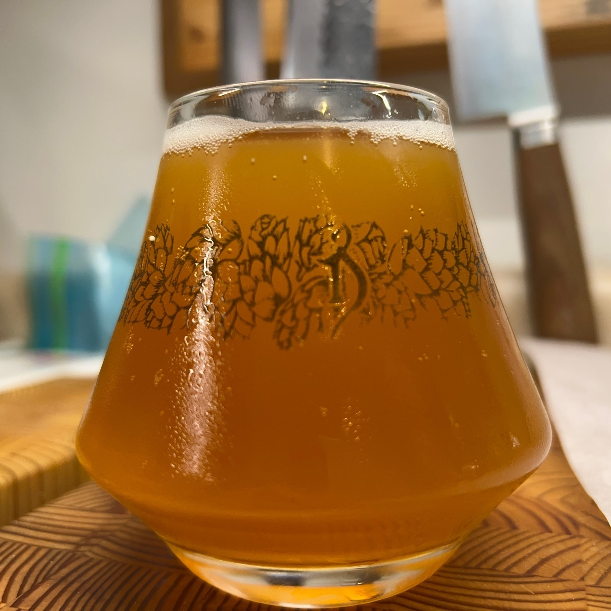
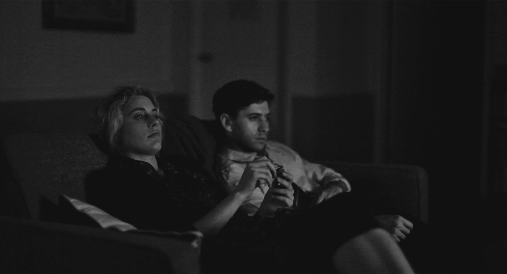
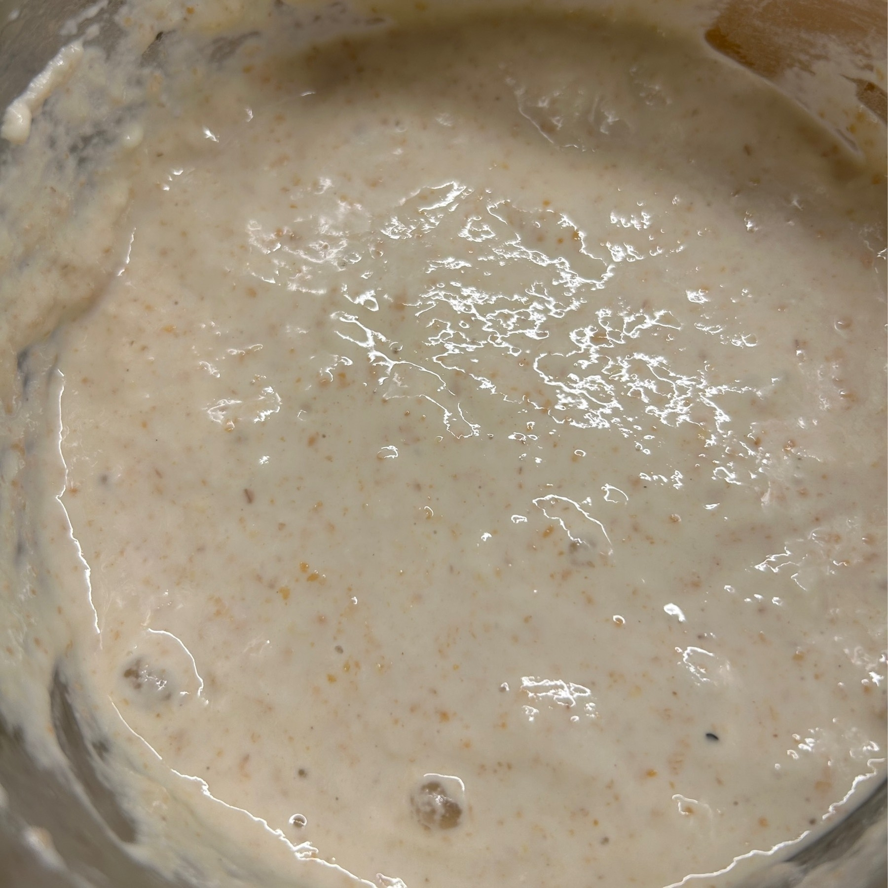
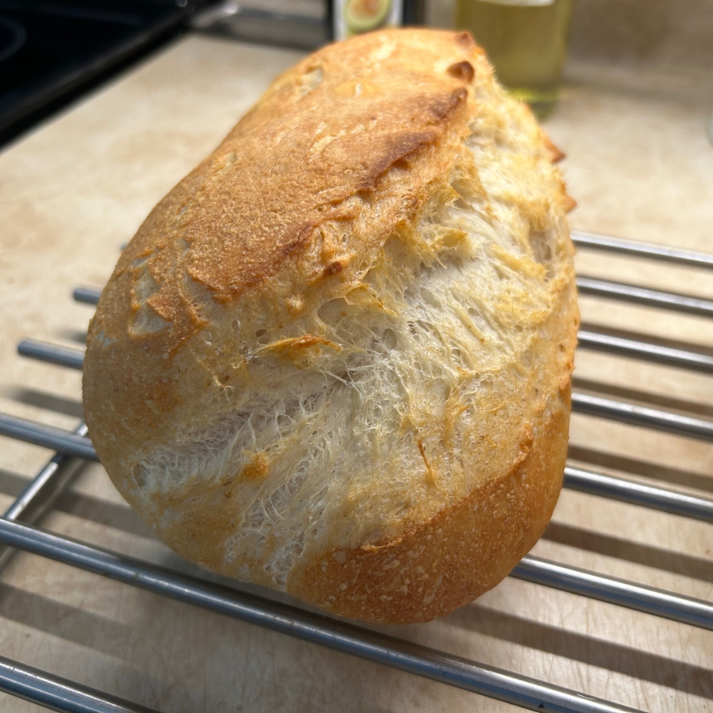
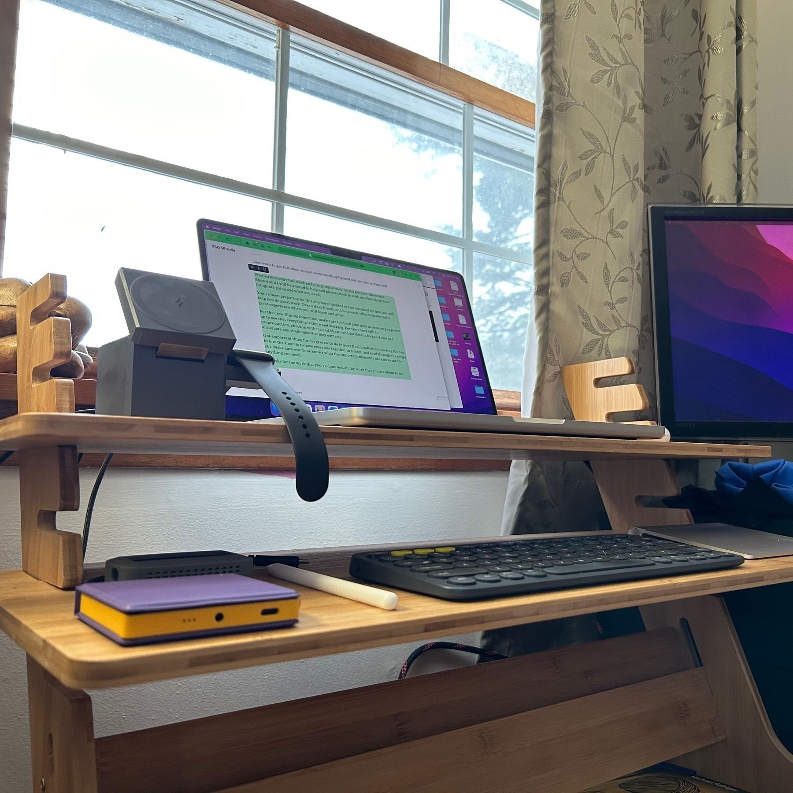
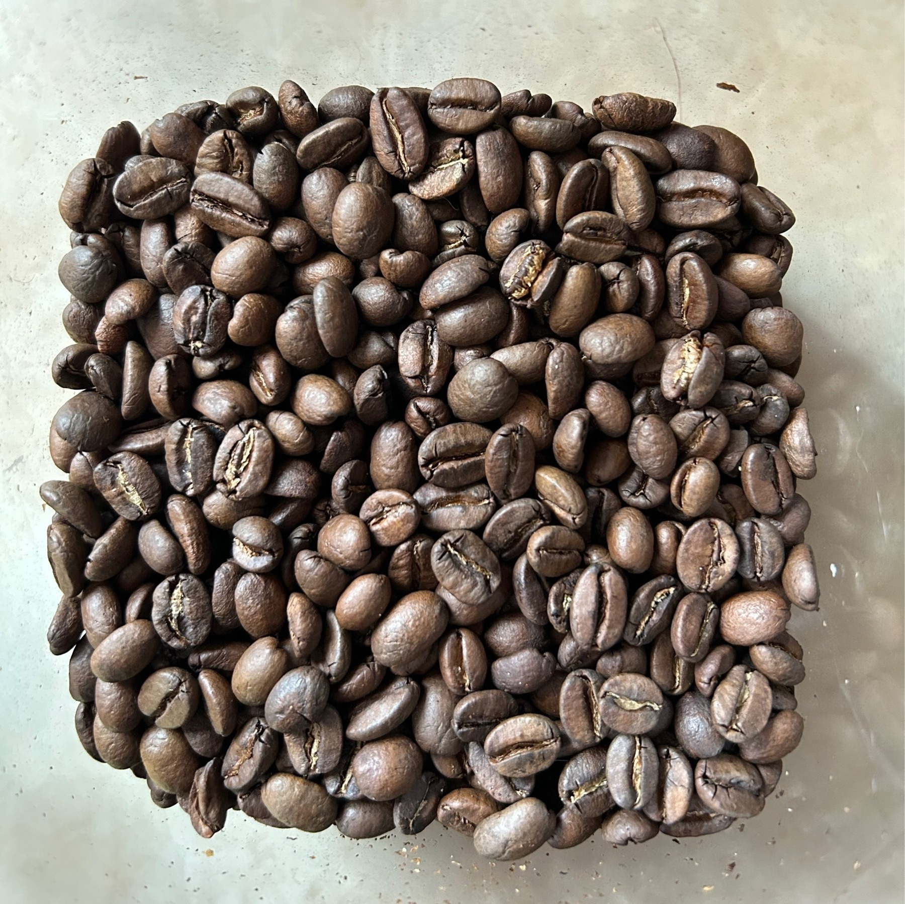
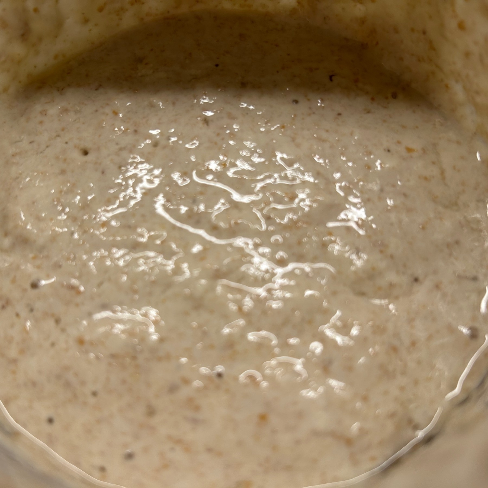
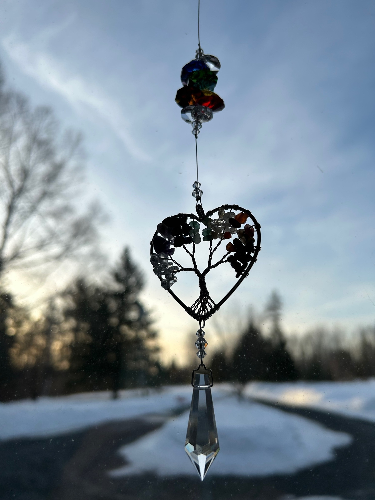
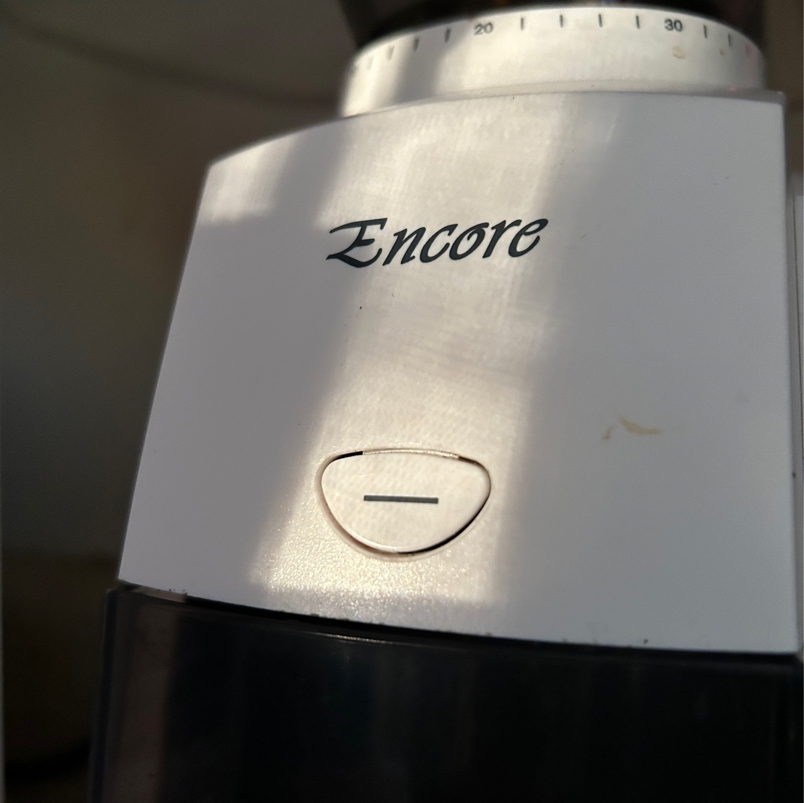
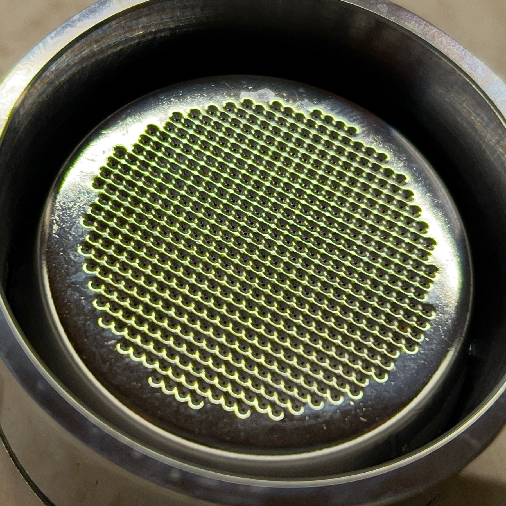

A panorama of a ship with parts of wind turbine bases on it. Day 7 of the September Photoblogging Challenge.
Watching â€the 2022 documentary Desperate Souls, Dark City and the Legend of Midnight Cowboy directed by Nancy Buirski. 🎥
A well at the Port-Royal National Historic Site in the Annapolis Valley of Nova Scotia where European settlers arrived in 1605. Day 6 of the September Photoblogging Challenge.
Watching Nida Manzoor’s 2023 film â€Polite Society. 🎥
Cherry tomatoes. Day 1 of the ]September Photoblogging Challenge](https://challenges.micro.blog/2023/08/30/september-photoblogging-challenge.html).
Watching â€the 2014 film What We Do in the Shadows directed by Taika Waititi and Jemaine Clement yet again. 🎥
Watching â€the 1980 film Hopscotch directed by Ronald Neame on The Criterion Channel. 🎥
Starting my semi-elaborate preparation for the Atlantic Film Festival which begins in a few weeks by making some Letterboxd lists of the films that are screening. Then I will start to rough out my schedule. There are a lot of films that are on my watchlist that I will hopefully get to see.
Watching â€Susan Seidelman’s 1987 film Making Mr. Right in the Criterion Collection’s AI collection. 🎥
About to watch Oppenheimer directed by Christopher Nolan in IMAX. 🎥
Watching â€the 1970 film Colossus: The Forbin Project directed by Joseph Sargent in The Criterion Channel’s AI Collection. 🎥
Getting the dough kneaded for some loaves of sourdough bread in the bread machine on a sunny morning. ğŸ
Watching â€the 2023 documentary Being Mary Tyler Moore directed by James Adolphus. 🎥
Watching â€the 2018 documentary Westwood: Punk, Icon, Activist directed by Lorna Tucker. 🎥
Now I’m listening to the remastered Tom Waits album Frank’s Wild Years.
Up next is the perfect Tom Waits album, Rain Dogs.
Listening to some remastered Tom Waits and starting with Swordfishtrombones.
Watching â€the 1962 film All Night Long directed by Basil Dearden on The Criterion Channel. 🎥
Watching â€the 2018 documentary Hal directed by Amy Scott. 🎥
Watching â€Kay Francis starring in the 1934 film Mandalay directed by Michael Curtiz. 🎥
Watching â€Quentin Dupieux’s 2022 film Incredible But True on MUBI. 🎥
Watching Hal Ashby’s 1979 film â€Being There again after many years. 🎥
Remembering director William Friedkin by watching his great 1977 film Sorcerer. 🎥
Saw Greta Getwig’s 2023 film â€Barbie in the theatre today and really enjoyed it. There is a lot going on in it and Gerwig threads the needle perfectly. 🎥
Loved the “Subspace Rhapsody†episode of Star Trek: Strange New Worlds. So much fun and did something new with Star Trek. The series feels like a band playing songs that are both familiar and new.🖖ğŸ¼ğŸ¶
Watching â€the 2022 film Pinball: The Man Who Saved the Game directed by Austin Bragg and Meredith Bragg. 🎥
Watching â€the 1932 film Jewel Robbery directed by William Dieterle in The Criterion Channel’s Kay Francis collection. 🎥
Watching â€Prano Bailey-Bond’s 2021 film Censor on MUBI. 🎥
Best new-to-me films for July 2023:
Paris Frills,
Showing Up,
The Potemkinists,
Ninjababy,
El Planeta,
PlayTime,
Crime Wave,
Everybody Loves Jeanne,
The Beanie Bubble,
and,
The Pee-wee Herman Show.
Watching â€the 1935 MGM musical Naughty Marietta directed by W.S. Van Dyke and Robert Z. Leonard on TCM. 🎥
Watching â€the 2023 film The Beanie Bubble directed by Kristin Gore and Damian Kulash on Apple TV+. 🎥
Watching â€the 2022 French film Everybody Loves Jeanne directed by Céline Devaux on MUBI. 🎥
Watching â€the 1940 film The Philadelphia Story directed by George Cukor on TCM with an introduction by Ben Mankiewicz and Greta Gerwig. 🎥
Watching â€the 1953 film noir Crime Wave directed by André de Toth on TCM. 🎥
Watching â€Jacques Tati’s 1967 film PlayTime on The Criterion Channel. 🎥
Watching â€Jacques Tati’s 1967 film PlayTime on The Criterion Channel. 🎥
Watching â€Steven Soderbergh’s new online project Command Z directed by Steven Soderbergh. 🎥
Listening to Sparks’ latest album, The Girl is Crying in Her Latte as I make some veggie burritos for supper.
Watching â€the 2021 Spanish film El Planeta directed by Amalia Ulman on MUBI. 🎥
Watching â€Agnès Varda’s 1981 documentary Mur Murs again on The Criterion Channel. 🎥
Watching â€The Film Foundation’s restoration of the 1946 film noir, The Killers directed by Robert Siodmak. 🎥
Watching â€the 2014 K-Pop documentary Nine Muses of Star Empire directed by Lee Hark-joon on MUBI. 🎥
Watching â€the 2022 French film One Fine Morning directed by Mia Hansen-Løve again. 🎥
Listening to Palomino Deluxe (Child of Summer Edition) by First Aid Kit as I cook some veggie burgers and potato wedges for supper.
Watching â€the 2021 Norwegian film Ninjababy directed by Yngvild Sve Flikke on MUBI. 🎥
Watching â€Kelly Reichardt’s 2022 film Showing Up. 🎥
Watching â€Stanley Kubrick’s 1957 masterpiece Paths of Glory again. 🎥
Watching â€the 1945 French film Paris Frills directed by Jacques Becker. 🎥
Favourite new-to-me films watched in June 2023:
Three Identical Strangers,
Enlightenment Guaranteed,
Judy Blume Forever,
Alice Doesn’t Live Here Anymore,
The Great Hip Hop Hoax,
The Loved One,
Three Ages,
Our Hospitality,
Mrs. Harris Goes to Paris,
Are You There God? It’s Me, Margaret.
Figuring out a more consistent way to be more micro.blog-centric with posts and use formatting more when I refer to film titles. I was using all caps for film titles because that works for Twitter, but now that there isn’t cross-posting, I think I’ll move to italics.
Watching â€the 2023 adaptation ARE YOU THERE GOD? IT’S ME, MARGARET. directed by Kelly Fremon Craig. 🎥
Watching â€the 1923 silent film THREE AGES directed by Buster Keaton and Edward F. Cline on The Criterion Channel. 🎥
Currently reading: An Editor’s Burial by Wes Anderson 📚
In the theatre and ready to see Wes Anderson’s latest, Asteroid City! 🎥
Watching â€the 1965 film THE LOVED ONE directed by Tony Richardson on TCM. 🎥
So sad about the cuts to TCM. One of the great ways to watch films in context. Hopefully things turn around. Who would have thought that as technology advances it would become more difficult to find places to watch films.
Watching â€the 1964 comedy SEX AND THE SINGLE GIRL directed by Richard Quine. 🎥
Watching â€the 1964 film SEANCE ON A WET AFTERNOON directed by Bryan Forbes on The Criterion Channel. 🎥
Watching â€Anton Corbijn’s sad and beautiful 2007 film CONTROL. 🎥
Watching â€the 2011 vinyl store documentary SOUND IT OUT directed by Jeanie Finlay. 🎥
Watching â€the 2013 music documentary THE GREAT HIP HOP HOAX directed by Jeanie Finlay on The Criterion Channel. 🎥
Watching â€the 1958 film THE GODDESS directed by John Cromwell in The Criterion Channel’s Method Acting collection. 🎥
Catching up with Wes Anderson’s 2007 film â€THE DARJEELING LIMITED. 🎥
Watching â€Peter Medak’s 1993 neo-noir ROMEO IS BLEEDING again for the first time in years. 🎥
Time to start watching season 2 of Star Trek: Strange New Worlds or, as Captain Pike would put it, “Hit it!â€
Attended my 20th Nova Scotia Community College Convocation as Screen Arts filmmakers walked across the stage along with many others. It’s a day that makes me proud and happy. The Valedictorian gave a great speech and ended it with a Vulcan salute and said, “Live long and prosper.†🖖ğŸ¼
Watching â€William Friedkin’s 1971 film THE FRENCH CONNECTION on The Criterion Channel. 🎥
Very excited to watch the new new season of Star Trek: Strange New Worlds starting tomorrow. 🖖🏼
Watching â€Ali Kaurismäki’s 1989 film LENINGRAD COWBOYS GO AMERICA on The Criterion Channel. 🎥
Enjoying a glass of Double Orange Ale from Unfiltered Brewing. The latest batch is yet another delicious SMaSH double IPA.

Watching â€Martin Scorsese’s 1974 film ALICE DOESN’T LIVE HERE ANYMORE for the first time on the Criterion Channel. 🎥
Watching â€Martin Scorsese’s 1999 film BRINGING OUT THE DEAD again for the first time in many years. 🎥
Watching â€the 2023 documentary JUDY BLUME FOREVER directed by Davina Pardo and Leah Wolchok. 🎥
Watching â€the 1938 screwball comedy THE MAD MISS MANTON directed by Leigh Jason and starring Barbara Stanwyck and Henry Fonda on The Criterion Channel. 🎥
Watching â€the 2000 German film ENLIGHTENMENT GUARANTEED directed by Doris Dörrie. 🎥
Watching the 2018 documentary â€THREE IDENTICAL STRANGERS directed by Tim Wardle on MUBI. 🎥
Watching â€the 1938 screwball comedy BRINGING UP BABY directed by Howard Hawks. 🎥
Watching â€the 1934 screwball comedy SING AND LIKE IT directed by William A. Seiter on the Criterion Channel. 🎥
Best new-to-me films for May 2023: Letter From a Filmmaker: Chantal Akerman, Forty Guns, The Janes, The Anniversary Party, Still: A Michael J. Fox Movie, The Five Devils, It is Night in America, The Wages of Fear, BlackBerry, You Hurt My Feelings, Feels Good Man, Reality.
Watching â€the 2023 docudrama REALITY directed by Tina Satter. 🎥
This is one of my favourite times of the year as classes have just ended and I am deep in planning the upcoming year. I’m trying to think of better ways of doing things and am considering using Craft to organize assignments for some of my courses.
Watching the 2020 documentary â€FEELS GOOD MAN directed by Arthur Jones on MUBI. 🎥
Revisiting one of the strange and beautiful films of the Greek Weird Wave and watching ATTENBERG directed by Athina Rachel Tsangari from 2010. 🎥
Now going to the theatre to watch Nicole Holofcener’s new film YOU HURT MY FEELINGS. 🎥
In the theatre to see the 2023 film BLACKBERRY. 🎥
Getting my morning writing done by reviewing the films I watched yesterday as I sip some coffee on a beautiful and breezy morning.
Watching â€Henri-Georges Clouzot’s 1953 film THE WAGES OF FEAR on The Criterion Channel. I’ve seen William Friedkin’s 1977 remake, but not the original until now. 🎥
Listening to Soft Sounds From Another Planet by Japanese Breakfast as I get my morning writing done before getting some loaves of sourdough ready to rise.
Watching the 2022 Brazilian experimental documentary â€IT IS NIGHT IN AMERICA directed by Ana Vaz on MUBI. 🎥
Watching â€the 2022 film THE FIVE DEVILS directed by Léa Mysius on MUBI. 🎥
Enjoying The Norwegian, a Saison from Lazy Bear Brewing made with Kveik from Norway. It’s so delicious and complex.
Watching â€the 2014 documentary FILMED IN SUPERMARIONATION directed by Stephen La Rivière. 🥠I loved Captain Scarlet and Thunderbirds when I was young.
Watching â€David Lynch’s sad and beautiful 1980 film THE ELEPHANT MAN again on The Criterion Channel. 🎥
Thanks to everyone who helped make Micro @camp such a fun event over the past two days. It was a lot of work and it’s encouraging to see the energy and be able to connect with people.
Links for Navigating the Online Age of Entertainment: How to Find Films to Watch and People to Share Them With
On May 20, 2023 I gave a presentation as part of Micro Camp 2023 and here are some links to things I mentioned in the presentation.
Landscape of Grand PréUNESCO World Heritage Site where I filmed the opening segment.
I watch many films on The Criterion Channel and MUBI.
The film sharing site Letterboxd and my profile on Letterboxd.
Wim Wenders’ film Until the End of the World and the idea of a Micro Film Club to discuss it.
What Allconsuming looked like in 2006.
The Internet Movie Database (IMDb).
Filmmaker Steven Soderberg’s Soderblog.
I log films by starting in Drafts and then appending the name of the film to a note in Bear.
I also log films and tv shows in a larger monthly note that I keep updated with Obsidian.
My diary of reviews on Letterboxd.
The Brittanica entry on Auteur Theory.
Portrait of a Lady on Fire was directed by Celine Sciamma with cinematography by Claire Mathon.
Director Martin Scorsese.
Women in Film 52 Films by Women.
My list of Films Directed by Women Viewed in 2023.
Lise’s March Around the World 2023 challenge.
Marya E. Gates started Noirvember.
The American Film Institute list of the 100 Greatest Movies of All Time.
The Sight and Sound poll of The Greatest Films of All Time.
Director Chantal Akerman’s film Jeanne Dielman, 23, quai du Commerce, 1080 Bruxelles.
The photos behind me are of a puffin taken by my friend Brigitte Noel and a junkyard taken by my daughter Emily.
Listening to Multitudes as I make some walnut and burritos for lunch before Micro Camp starts off today.
Watching â€Stanley Donen’s 1974 musical adaptation of THE LITTLE PRINCE. 🎥
Listening to the amazing soundtrack album from Until the End of the World as I make lunch.
I’m looking forward to Micro Camp starting today in a few hours. It is a great chance to find out what is happening in the community and to learn and connect with a group of interesting and supportive people from around the world.
Watching â€the 1982 film THEY CALL ME BRUCE? directed by Elliott Hong in the Asian American ‘80s collection on The Criterion Channel. 🎥
Listening to Kid Koala’s Creatures of the Late Afternoon as I make an udon noodle stir fry. album.link/i/1643791…
Listening to Kid Koala’s Creatures of the Late Afternoon as I make an udon noodle stir fry.
Watching â€the 2023 documentary STILL: A MICHAEL J. FOX MOVIE directed by Davis Guggenheim. 🎥
Listening to Kid Koala’s 12-bit Blues while I get supper ready.
Watching â€the 2001 film THE ANNIVERSARY PARTY directed by Jennifer Jason Leigh and Alan Cumming. 🎥
Watching â€Renuka Jeyapalan’s 2022 film STAY THE NIGHT again. 🎥
I’m very excited to be part of Micro Camp for 2023 and I’m looking forward to all the presentations.
Took a fun 36 km ride on the trail with my partner with both of us on our Swytch assisted bikes. The batteries lasted most of the time but we switched batteries part way through as I was using less battery. The important part for assistance is on the hill back to the house. 🚲 🪫
Watching â€the 2022 documentary THE JANES directed by Tia Lessin and Emma Pildes. 🎥
Watching â€Hirokazu Kore-eda’s beautiful 2022 film BROKER again. One of my favourite films of last year. 🎥
Watching â€Samuel Fuller’s 1957 Western FORTY GUNS on The Criterion Channel. 🎥
Watching â€the 1997 self-portrait CHANTAL AKERMAN BY CHANTAL AKERMAN again. 🎥
Watching FRANCES HA yet again.

Favourite new-to-me films viewed in April 2023: WILL SUCCESS SPOIL ROCK HUNTER?, HESTER STREET, RYUICHI SAKAMOTO: CODA, POLY STYRENE: I AM CLICHE, SAINT OMER, A FILM ABOUT A FATHER WHO, FLAMING EARS, A FISH IN THE BATHTUB, WOMEN TALKING, URGH! A MUSIC WAR. 🎥
Watching â€Joan Micklin Silver’s 1998 film A FISH IN THE BATHTUB on MUBI. 🎥
Watching â€the stunning 4K restoration of Akira Kurosawa’s beautiful reworking of King Lear, the 1985 film RAN. 🎥
Time to revisit one of the masterpieces of the 20th century – Chantal Akerman’s 1975 film â€JEANNE DIELMAN, 23, QUAI DU COMMERCE, 1080 BRUXELLES. 🎥
Listening to Kid Koala’s album Creatures of the Late Afternoon as I think about making supper and then watching a film.
Took my first real ride with my Swytch wheel installed. On the lowest level of assist it was a good workout. On the challenging part of going up a hill to the house (an ascent of about 50 metres) it was a lot easier and I wasn’t covered in sweat when I got home. 🚲
Really happy with my Swytch bike wheel. The electric assist is kind of magical and it makes riding my bike more fun and a bit easier too. Haven’t taken a longer ride yet, but I’m looking forward to it. 🚲
Watching â€the gorgeous transfer of Claire Denis’ enigmatic and haunting 2004 film THE INTRUDER again on The Criterion Channel. 🎥
Watching the odd and funny 2004 musical shirt film â€AD/BC: A ROCK OPERA directed by Richard Ayoade again. 🎥
Watching â€Alice Diop’s 2022 film SAINT OMER. 🎥
Finally watching Todd Field’s 2022 film Watching â€TÃR. 🎥
Listening to the wonderful new album from Feist – Multitudes – and sautéing some local mushrooms to put on top of a veggie burger along with making some potato wedges too.
Watching â€the 2021 documentary POLY STYRENE: I AM A CLICHÉ directed by Paul Sng and Celeste Bell. 🎥
Watching â€Joan Micklin Silver’s 1975 debit feature HESTER STREET on MUBI. 🎥
Watching â€the restored version of David Lynch’s strange and unsettling 2006 film INLAND EMPIRE again. Every time I watch it it seems like a different film. 🎥
Watching â€the 2023 film TETRIS directed by Jon S. Baird on Apple TV+. 🎥
The sourdough starter that is an important part of my bread making practice. Day 31 of the March Photoblogging Challenge.

Going to Sweden in my March Around the World and watching â€the 2015 film A MAN CALLED OVE directed by Hannes Holm. 🎥🇸🇪
A loaf of sourdough bread with a slice that allowed it to expand while baking. Day 29 of the March Photoblogging Challenge.

Continuing March Around the World and revisiting a strange and beautiful 2020 film from Greece – â€APPLES directed by Christos Nikou. 🎥🇬🇷
Watching â€a film from Egypt – the selected country for March Around the World 2023 – the 2020 documentary LIFT LIKE A GIRL directed by Mayye Zayed. 🎥🇪🇬
The wooden standing desk that provides support for my laptop when I work from home. Day 27 of the March Photoblogging Challenge.

Watching â€Rian Johnson’s brilliant 2016 debut BRICK yet again. 🎥
On the penultimate episode of Poker Face and I’ve loved every episode for the fantastic blend of crime show, fun, and amazing casting. Rian Johnson and Natasha Lyonne have made something wonderful that is both nostalgic and new.
Stopping in Australia tonight in my March Around the World and watching â€the 2022 film THE STRANGER directed by Thomas M. Wright. 🎥🇦🇺
Revisiting a 1994 documentary from Finland as I continue to March Around the World – â€TIGRERO: A FILM THAT WAS NEVER MADE directed by Mika Kaurismäki. 🎥🇫🇮
Next up in my March Around the World is a stop in Canada for the experimental 2022 documentary â€SELF-PORTRAIT directed by Joële Walinga. 🎥🇨🇦
Taking a stop in Norway in my March Around the World and watching â€the 2006 film REPRISE directed by Joachim Trier. 🎥🇳🇴
Continuing my March Around the World by watching â€the 2012 documentary from BRAZIL ELENA directed by Petra Costa. 🎥🇧🇷

Currently reading: Nadiya Bakes by Nadiya Hussain and finding all sorts of delicious recipes. 📚
Watching â€Steven Soderbergh’s fun 2020 film LET THEM ALL TALK again. 🎥
Coffe beans are the key to a successful early start to the day. Day 17 of the March Photoblogging Challenge.

Working with sourdough starter teaches you patience. Day 15 of the March Photoblogging Challenge.

Looking at the connection between some ornaments in a window. Day 13 of the March Photoblogging Challenge.

The grinder that is a key part of my morning ritual. Day10 of the March Photoblogging Challenge.


Continuing my March Around the World by watching â€the 2019 film THE PERFECT CANDIDATE directed by Haifaa al-Mansour from Saudi Arabia. 🎥🇸🇦
Next stop in my March Around the World is Japan the 1989 film â€TETSUO: THE IRON MAN directed by Shinya Tsukamoto on The Criterion Channel. 🎥🇯🇵
Continuing my March Around the World by watching â€a film from Hungary in 1975 – ADOPTION directed by Márta Mészáros on The Criterion Channel. ğŸ¥ğŸ‡ğŸ‡º
The whole bottom of the filter in my new bottomless portafilter. March Photoblogging Challenge Day 7.

Up next in my March Around the World is the film â€MAN IS NOT A BIRD from Yugoslavia in 1965 and directed by Dušan Makavejev. 🎥
The next film in my March around the world is a documentary from Ukraine – â€THE EARTH IS BLUE AS AN ORANGE from 2020 directed by Iryna Tsilyk. 🇺🇦🎥
The next film in my March Around the World is from Bhutan and is the 1999 drama â€THE CUP directed by Khyentse Norbu on The Criterion Channel. 🇧🇹🎥
Watching â€the 1932 film NIGHT AFTER NIGHT directed by Archie Mayo in the Criterion Channel’s “Pre-Code Paramount” collection. 🎥
For my 3rd March Around the World film I’m watching â€the 1986 Hong Kong film ROYAL WARRIORS directed by David Chung in the “Michelle Yeoh Kicks Ass” collection. ğŸ‡ğŸ‡°ğŸ¥
Watching â€the 1970 film from Czechoslovakia KILLING THE DEVIL directed by Ester Krumbachová on The Criterion Channel as the second film in my March Around the World. 🇨🇿🎥
Film number 1 in March Around the World 2023 is the Austrian film MUTZENBACHER directed by Ruth Beckermann. 🇦🇹
Lock that keeps my mail secure. Day1 of the March 2023 Photoblogging Challenge.
Listening to some newly released Neutral Milk Hotel tracks and dancing around the kitchen as I cook supper.
Watching â€the 1963 film BILLY LIAR directed by John Schlesinger in The Criterion Channel’s British New Wave collection. 🎥
Working from home on a snowy Friday afternoon as I sip on an espresso.
I am very happy that I have a small espresso machine.
Watching â€Chantal Akerman’s fun and complex 1986 musical GOLDEN EIGHTIES again on The Criterion Channel. 🎥
Watching â€the 1957 film THIS COULD BE THE NIGHT directed by Robert Wise on TCM. 🎥
Baking a Blueberry French Toast Casserole for brunch and waiting for it to finish as I sip an espresso.
Watching â€the 1962 Japanese film AN AUTUMN AFTERNOON directed by Yasujirō Ozu. 🎥
Watching â€David Lean’s 1955 film SUMMERTIME on The Criterion Channel. 🎥
Watching â€Todd Stephens’ 2021 film SWAN SONG on MUBI. 🎥
Watching â€the 2022 documentary IN THE COURT OF THE CRIMSON KING: KING CRIMSON AT 50 directed by Toby Amies. 🎥
Watching â€Claire Denis’ unsettling and melancholy 2018 science fiction film HIGH LIFE again. 🎥
Watching â€The Film Foundation’s free online screening Jean Renoir’s restored 1951 film THE RIVER. 🎥
Watching â€Mia Hansen-Love’s complicated and beautiful 2021 film BERGMAN ISLAND. It’s intellectual but personal and has a brilliant structure filled with ambiguity. 🎥
One of the nice things about the days that I can work from home is being able to bake a loaf of bread in the bread machine while I work.
Watching â€the 1949 film noir TENSION directed by John Berry on TCM’s Noir Alley.
As a fan of Columbo starting from the opening credits I know that I’m going to love watching Rian Johnson’s Poker Face with Natasha Lyonne.
Watching â€the 2022 documentary FREE CHOL SOO LEE directed by Eugene Yi and Julie Ha on MUBI. 🎥
Watching â€the 1946 film noir DECOY directed by Jack Bernhard in Noir Alley. 🎥
Listening to First Aid Kit and baking some Japanese Milk Bread rolls to go with a Leek and Potato Chowder I’m cooking.
Watching â€the 1973 film The Last of Sheila directed by Herbert Ross. 🎥
Watching â€the 2021 French film The Braves directed by Anaïs Volpé on MUBI. 🎥
Making some lasagna stew while listening to We’ve Been Going About This All Wrong by Sharon Van Etten.
Watching â€the 2022 documentary DOUG AND THE SLUGS AND ME directed by Teresa Alfed. 🎥
Listening to Blondie as I dance around the kitchen as I start to prepare some baked macaroni and cheese for supper.
Working my way through Star Trek: Discovery for the first time and really enjoying it. I weirdly started with Strange New Worlds which I loved so much that I thought I’d catch up with the series it spun off from.
Watching â€the 2021 Romanian film ÃNTREGALDE directed by Radu Muntean on MUBI. 🎥
Taking it easy on an icy Sunday morning as I sip a cappuccino and listen to the bread machine knead some sourdough.
Watching â€the 1951 screwball comedy RHUBARB directed by Arthur Lubin on The Criterion Channel. 🎥
Ten years ago I wrote on my blog about how wonderful Twitterrific 5 was.
Sitting down on a snowy morning as I eat my oatmeal and sip an espresso and thinking about the wonderful Twitterrific app which made Twitter a pleasure to use over the past 15 years.
Watching â€The Film Foundation’s gorgeous restoration of the 1956 film GIANT directed by George Stevens. 🎥
Watching â€Fritz Lang’s 1941 film MAN HUNT on The Criterion Channel. 🎥
Watching â€Joanna Hogg’s 2022 film THE ETERNAL DAUGHTER. 🎥
Watching â€the 1995 film PARTY GIRL directed by Daisy von Scherler Mayer on The Criterion Channel. 🎥
Watching â€Mike Mills’ 2005 film THUMBSUCKER on The Criterion Channel. 🎥
Sharing my FAVOURITE FILMS OF 2022 which had some great films. I’ll narrow it down a bit but why not share 21 films I loved. 🎥
Final film of the year will be Charlotte Wells’ beautiful and impressionistic and precise film â€AFTERSUN. 🎥
Watching â€GUILLERMO DEL TORO’S PINOCCHIO directed by Guillermo del Toro and Mark Gustafson. 🎥
Spending New Years Eve at home with Nick, Nora, and Asta and enjoying a cocktail and watching the 1934 classic THE THIN MAN. 🎥
Really loved Baumbach’s WHITE NOISE which was strange and funny and a bit of a blend of Lanthimos and Spielberg in a great way.
Watching Noah Baumbach’s 2022 film WHITE NOISE. 🎥
Watching â€one of my favourite films of the year again – GOD’S CREATURES directed by Anna Rose Holmer and Saela Davis. 🎥
Watching â€the 1943 screwball comedy THE MORE THE MERRIER directed by George Stevens on The Criterion Channel. 🎥
Watching â€Claire Denis’ wonderful and odd 2017 romantic comedy LET THE SUNSHINE IN again. 🎥
Thinking that I finally have to get my blog post of my favourite films of 2021 up before I get started on my favourite films of 2022 blog post started.
I’d finished writing it, but then in the process of revising and adding links and photos it just didn’t get posted.
Watching â€the restored version of Mai Zetterling’s bold 1964 film LOVING COUPLES on The Criterion Channel. 🎥
Time for some Friday night screwball comedy with the 1937 film â€LOVE IS NEWS directed by Tay Garnett. 🎥
Watching â€Preston Sturges’ 1944 screwball comedy THE MIRACLE OF MORGAN’S CREEK on The Criterion Channel. 🎥
Watching â€Marguerite Duras’ 1977 film BAXTER, VERA BAXTER on The Criterion Channel. 🎥
Watching â€Antonioni’s 1960 film L’AVVENTURA for the first time and thinking that it may be good to watch it now before I finish watching certain season of a TV show set in Italy that I will finish very soon. 🎥
Watching â€Park Chan-wook’s twisty 2022 neo-noir DECISION TO LEAVE directed by Park Chan-wook again on MUBI. 🎥
Watching â€Mai Zetterling’s 1982 film SCRUBBERS on The Criterion Channel. 🎥
Watching â€a screwball comedy from 1937 – EASY LIVING directed by Mitchell Leisen on The Criterion Channel. 🎥
Watching â€Mai Zetterling’s 1968 film THE GIRLS on The Criterion Channel. 🎥
Watching â€Mai Zetterling’s 1966 Swedish film NIGHT GAMES on The Criterion Channel. 🎥
Watching â€the 1939 screwball comedy MIDNIGHT directed by Mitchell Leisen on The Criterion Channel. 🎥
Watching â€the screwball comedy from 1938 – BLUEBEARD’S EIGHTH WIFE directed by Ernst Lubitsch. 🎥
Watching â€the screwball comedy from 1938 – BLUEBEARD’S EIGHTH WIFE directed by Ernst Lubitsch. 🎥
My final #Noirvember film is the 1947 UK film â€IT ALWAYS RAINS ON SUNDAY directed by Robert Hamer. 🎥
Time for some British #Noirvember viewing with the 1951 film â€POOL OF LONDON directed by Basil Dearden. 🎥
Back to my #Noirvember viewing and watching â€the 1964 Japanese film BLACK SUN directed by Koreyoshi Kurahara. 🎥
HOLD ME TIGHT is one of my favourite films of the year. Amalric has always been a great actor and a strong director but his crafting of this film is transcendent and perfect. So many loving touches throughout and Vicky Krieps is remarkable again.
Watching â€the 2021 film HOLD ME TIGHT directed by Mathieu Amalric and starring Vicky Krieps. 🎥
My next #Noirvember pick is the 2007 film â€NIGHT TRAIN directed by Diao Yi’nan on MUBI. 🎥
Tonight for #Noirvember I’m watching â€a 1958 noir featuring Robert Mitchum – THUNDER ROAD directed by Arthur Ripley. 🎥
Going back to Japan for #Noirvember and revisiting Kioshi Kurosawa’s brilliant 1997 film â€CURE. 🎥
Tonight’s #Noirvember choice is the 1947 â€film THE UNFAITHFUL directed by Vincent Sherman in Noir Alley on TCM. 🎥
After a cold and clear morning where there was time to go for a nice walk and restock my coffee beans and have some lunch, now the ground is covered with a blanket of snow as I am snuggled down in the house about to bake some bread.
Starting to make some pizza and listening to Matt Berry’s album “Opium†while cooking and dancing from time to time.
Starting to make some coffee as I look out at the light dusting of snow on the ground and feeling good that I got my snow tires on yesterday.
Still enjoying The Peripheral and seeing characters brought to life and the way that the series feels new and different and strangely familiar.
Such a strange feeling on Twitter tonight as everyone is saying goodbye and remembering the connections they made. The longer you’ve been around you realize how you stay connected in different ways. Some things stay and some things go. This is life.
Michael Curtiz’s 1950 noir â€THE BREAKING POINT is my #Noirvember film for today. 🎥
Tonight’s #Noirvember film is the 1949 noir â€THIEVES’ HIGHWAY directed by Jules Dassin. 🎥
Tonight’s #Noirvember film is the haunting and enigmaticac 2020 Hungarian film â€PREPARATIONS TO BE TOGETHER FOR AN UNKNOWN PERIOD OF TIME directed by Lili Horvát. 🎥
Watching â€the restored version of John Huston’s 1952 film MOULIN ROUGE in The Film Foundation Restoration Screening Room. 🎥
One of the wonderful things about #Noirvember is finding unseen films from unexpected directors and my next noir is a silent film from Yasujirō Ozu, the 1933 Japanese film â€DRAGNET GIRL on The Criterion Channel. 🎥
Watching â€some noir from France for #Noirvember with the 1946 film PANIC directed by Julien Duvivier on The Criterion Channel. 🎥
My #Noirvember viewing tonight is the 1948 film â€CRY OF THE CITY directed by Robert Siodmak. 🎥
Watching â€the 1966 film GEORGY GIRL (1966) directed by Silvio Narizzano on TCM. 🎥
Making a puttanesca sauce while dancing around the kitchen listening to Against the Odds: 1974 – 1982 by Blondie.
My next #Noirvember film is â€PLUNDER ROAD directed by Hubert Cornfield from 1957. 🎥
Tonight’s #Noirvember film is the 1995 tech noir â€JOHNNY MNEMONIC directed by Robert Longo. 🎥
Tonight’s #Noirvember film is the 1956 film â€CRIME OF PASSION directed by Gerd Oswald and starring Barbara Stanwyck and Sterling Hayden. 🎥
Going to the UK for #Noirvember with the 1948 film â€GREEN FOR DANGER directed by Sidney Gilliat. 🎥
Just confirmed my Swytch electric conversion kit preorder. I won’t get it until next year and will have to wait until the snow is gone but I’m looking forward to an electrically assisted ride.
For my tenth noir of #Noirvember I’m going to Denmark for the 2000 film â€FLICKERING LIGHTS directed by Anders Thomas Jensen. 🎥
The ninth film of my #Noirvember is the 1934 film â€THE WOMAN CONDEMNED directed by Dorothy Davenport. 🎥
My eighth noir of #Noirvember and first of #Deneuvember is the 1986 French film â€SCENE OF THE CRIME directed by André Téchiné and starring Catherine Deneuve. 🎥
On day 7 of Microblogvember I’m thinking of the insight that I have from being on social media for a few years and being part of communities that have began and changed and ended.
Sunday night noir with my seventh film for #Noirvember and the 1951 noir â€ON DANGEROUS GROUND directed by Nicholas Ray and Ida Lupino. 🎥
What seems to be happening now with social media sites feels like an echo of the geekier exodus around 2018 from sites as some APIs were shutting down. It’s when the standards-based indie web started to blossom. Day 6 of Microblogvember.
Currently reading: Dark City by Eddie Muller 📚
Such a lovely sunny morning as I bake some bread in the bread machine and start to figure out a better way to almost seamlessly use Mastodon with micro.blog.
One of the great things about micro.blog and the open web is how things can work together in the background in ways that you may not even realize. I vaguely remembered Mastodon support and was able to easily get it working.
Noir number five for #Noirvember is the 1948 film CALL NORTHSIDE 777 starring James Stewart directed by Henry Hathaway as part of the Fox Noir collection on The Criterion Channel. 🎥
I think that I may have to exempt myself from Microblogvember as I keep forgetting to check the prompt and post something. #mbnov
Noir number 5 for #Noirvember is Otto Preminger’s 1945 film â€FALLEN ANGEL on The Criterion Channel. 🎥
My fourth film for #Noirvember is the 1946 film â€THE DARK CORNER directed by Henry Hathaway and starring Lucille Ball. 🎥
Noir number 3 for #Noirvember is the 1942 film â€THIS GUN FOR HIRE directed by Frank Tuttle. 🎥
On day 2 of Microblogvember I’m thinking about how cinematically there is always a great feast of films after the festival season as we go into autumn.
While I remembered that it was Noirvember I forgot that it also was Microblogvember but one day late I was able to figure it out. Hopefully I haven’t fallen out of the challenge before I started.
Second #Noirvember film is the 1941 film â€OUT OF THE FOG directed by Anatole Litvak and shot by James Wong Hong. 🎥
Best new-to-me films watched in October 2022: THE LADY, NOTHING COMPARES, THIS SPORTING LIFE, STARS AT NOON, APPLES, SWEET CHARITY, CONFESS, FLETCH, GOD’S CREATURES, MISSISSIPPI TRIANGLE, LA NAVIRE NUIT.
The first film for me in #Noirvember is the 1951 noir â€HE RAN ALL THE WAY directed by John Berry. 🎥
Watching â€the 1988 film VAMPIRE’S KISS directed by Robert Bierman on The Criterion Channel. 🎥
Watching â€the 1984 documentary MISSISSIPPI TRIANGLE directed by Christine Choy, Allan Siegel, and Worth Long on The Criterion Channel. 🎥
Watching the 2022 film â€CONFESS, FLETCH directed by Greg Mottola and it’s quite delightful. 🎥
Watching â€the 2020 Greek film APPLES directed by Christos Nikou. 🎥
Enjoyed the first two episodes of the adaptation of THE PERIPHERAL which is recognizable but different from the novel. Looking forward to seeing how it all turns out.
Getting an early start on the Criterion Movie Club tonight and watching â€THE HIDDEN again for the second time since I watched it on VHS in the 80s. 🎥
What a strange film distribution environment we are in. Films are quietly added to services and taken away. Sometimes I randomly discover a film has been released. While searching for Claire Denis films I discovered that STARS AT NOON is available to rent in iTunes in Canada.
BAD SISTERS was perfect. Sharon Horgan is so great in how she writes and constructs fantastic shows.
Ice cream in Halifax, Nova Scotia in A day in the life of micro.blog at 3:28 pm on October 14, 2022.
Making some pizza with a new recipe while listening to the latest Sharon Van Etten album and then watching the final films streaming as part of the Podernone Silent Film Festival.
Watching â€the 1929 silent film The Runaway Princess directed by Anthony Asquith as part of the streaming program of the Pordenone Silent Film Festival. #GCN41 #PordernoneSilent 🎥
I’m glad that I’m part of micro.blog which is a supportive and lovely social network that isn’t for sale and is ok to just be what it is.
Best new-to-me films watched in September 2022: BOTH SIDES OF THE BLADE, MISSISSIPPI MASALA, A TASTE OF HONEY, BROKER, TRIANGLE OF SADNESS, DECISION TO LEAVE, ENYS MEN, AFTERSUN, ONE FINE MORNING, METRONOM, BEVERLY OF GRAUSTARK.
Celebrating silent movie day by watching â€the 1926 Marion Davies film BEVERLY OF GRAUSTARK directed by Sidney Franklin. 🎥
Watching Agnès Varda’s 1962 masterpiece â€CLÉO FROM 5 TO 7 yet again on The Criterion Channel. 🎥
My second film of the Atlantic International Film Festival for 2022 is Hirokazu Kore-eda’s BROKER. I saw AFTER LIFE and loved the gentle and precise approach in all his films as they slowly assemble the pieces in beautiful ways. #AIFF22 🎥
Watching â€more British New Wave on The Criterion Channel with the 1960 film THE ENTERTAINER directed by Tony Richardson. 🎥
Watching â€Derek Jarman’s 1978 film JUBILEE on The Criterion Channel. 🎥
Watching â€Claire Denis’ 2022 film BOTH SIDES OF THE BLADE. 🎥
Watching â€some more British New Wave on The Criterion Channel with the 1959 film LOOK BACK IN ANGER directed by Tony Richardson. 🎥
Diving into the British New Wave collection on The Criterion Channel and watching â€the 1959 film ROOM AT THE TOP directed by Jack Clayton. 🎥
Really loving BAD SISTERS on Apple TV+. Sharon Horgan has such a great dark sense of humour and the casting of the series is impeccable
At the FIN Atlantic International Film Festival Program Launch and looking forward to seeing what will be screening this year. #AIFF22 🎥
Amazing day at the Keji Seaside Adjunct hiking and hanging out on the beach and watching seals pop their heads out of the water.
The conclusion of Better Call Saul was absolutely perfect. Such a great series from the first episode to the last.
Watching the 1938 film â€TEST PILOT directed by Victor Fleming in the Myrna Loy program on the Criterion Channel. 🎥
Watching â€the 1941 film LOVE CRAZY directed by Jack Conway on The Criterion Channel. 🎥
Watching â€Francis Ford Coppola’s 1974 masterpiece THE CONVERSATION again. 🎥
Watching â€Martha Coolidge’s 1983 film VALLEY GIRL directed by Martha Coolidge on The Criterion Channel. 🎥
So happy to see that the 1939 film â€AFTER THE THIN MAN directed by W.S. Van Dyke is streaming on The Criterion Channel in Canada. 🎥
Still thinking about last night’s penultimate episode of Better Call Saul. It’s always surprising but inevitable with everyone doing their best work.
Watching the 1961 musical â€FLOWER DRUM SONG directed by Henry Koster in The Criterion Channel’s Hollywood Chinese program. 🎥
Watching â€the 2007 documentary HOLLYWOOD CHINESE directed by Arthur Dong on The Criterion Channel. 🎥
Watching â€Stanley Donen’s 1966 film ARABESQUE on The Criterion Channel in their Swinging Soundtracks of Henry Mancini collection. 🎥
Finally watching â€Denis Villeneuve’s 2021 film DUNE. 🎥
Took advantage of the back to school educational discount and upgraded my older iPad Air to the latest iPad Air which I love. I also got the Magic Keyboard which is a great keyboard. Such a great design and so easy to use.
Finally watching Paul Thomas Anderson’s 2021 film â€LICORICE PIZZA. 🎥
Making some hamburger buns for some tofu burgers I’ll be making tomorrow which gives me a chance to use my new tofu press.
Watching â€Charlotte Gainsbourg’s 2021 documentary JANE BY CHARLOTTE. 🎥
Watching â€the 1981 neo-noir BODY HEAT directed by Lawrence Kasdan on The Criterion Channel. 🎥
NOPE was a lot of fun with an interesting story that had some surprises and not a wasted moment with just the right amount of ambiguity. A great summer movie.
Looking forward to seeing Jordan Peele’s latest film NOPE in the theatre this afternoon. 🎥
Watching Almodóvar’s 1988 film â€WOMEN ON THE VERGE OF A NERVOUS BREAKDOWN again for the first time in decades. 🎥
Watching â€the 1933 German film VICTOR AND VICTORIA directed by Reinhold Schünzel on The Criterion Channel. 🎥
Watched the first episode of Nathan Fielder’s new show **The Rehearsal ** and it’s one of the strangest and brilliant comedy documentary hybrid shows I’ve seen. It’s unsettling and profound.
Watching â€the 1958 Metrocolor film noir PARTY GIRL directed by Nicholas Ray on The Criterion Channel. 🎥
Watching the noir in colour 1945 film â€LEAVE HER TO HEAVEN directed by John M. Stahl on The Criterion Channel. 🎥
Watching â€Alex Cox’s 1984 film REPO MAN again for the first time in a long time. 🎥
Watching â€Samuel Fuller’s 1955 film noir HOUSE OF BAMBOO in the Criterion Channel’s “Noir in Color” series. 🎥
Watching â€the 1953 musical GENTLEMEN PREFER BLONDES directed by Howard Hawks on The Criterion Channel. 🎥
Watching â€the 1958 film THE HORSE’S MOUTH directed by Ronald Neame on The Criterion Channel. 🎥
Trying something different and making some yogurt based on the recipe in: Adventures in Bubbles and Brine by Philip Moscovitch 📚
Watching â€the 2022 film THE UNBEARABLE WEIGHT OF MASSIVE TALENT directed by Tom Gormican. 🎥
Celebrating the great Billy Wilder’s birthday by watching â€his 1950 masterpiece SUNSET BOULEVARD. 🎥
Watching â€the 1999 comedy DICK directed by Andrew Fleming to commemorate the 50th anniversary of the Watergate scandal. 🎥
Watching â€the 2018 documentary THE GOSPEL OF EUREKA directed by Michael Palmieri and Donal Mosher on The Criterion Channel. 🎥
I think it’s time to choose some music to listen to and dance around the kitchen as I start to make a pizza for supper as I think about what to watch tonight.
Watching â€the 1989 film CHAMELEON STREET directed by Wendell B. Harris Jr. on The Criterion Channel. 🎥
Really enjoying the IRMA VEP series so far. Interesting and fun riffing and expanding on the ideas of the film.
Finally watching the Daniels’ â€EVERYTHING EVERYWHERE ALL AT ONCE. 🎥
Watching â€Ulrike Ottinger’s 1979 film TICKET OF NO RETURN on The Criterion Channel. 🎥
It’s Chantal Akerman’s birthday and a great way to celebrate is to watch one of her remarkable films.
I wrote about The Time and Space of Chantal Akerman a few years ago. 🎥
Watching â€Agnès Varda’s beautiful and loving 1995 documentary THE WORLD OF JACQUES DEMY again. 🎥
Japanese Milk Bread Rolls cooling.
Celebrating the birthday of the great Jacques Demy by watching â€his 1963 film BAY OF ANGELS for the first time. 🎥
A casual Friday night making some pizza while listening to the new Andrew Bird album and remembering happy times with friends.
Watching â€Billy Wilder’s 1943 film FIVE GRAVES TO CAIRO on The Criterion Channel. 🎥
Best new-to-me films for May 2022: IT’S ALWAYS FAIR WEATHER, TOVE, THE PARALLAX VIEW, LITTLE MAN, WHAT NOW, DAMN YANKEES, THE KIDS IN THE HALL: COMEDY PUNKS, SOMETHING WILD, FRENCH CANCAN, and, ANTONIO GAUDI.
Diving into the Criterion Channel’s Billy Wilder’s 1940s collection by watching the 1948 film â€A FOREIGN AFFAIR. 🎥
Celebrating the birthday of the singular Agnès Varda by watching her fun and colourful 1967 short UNCLE YANCO again. It is crammed with a remarkable amount of history and self-awareness. 🎥
Watching â€Jean Renoir’s 1955 Technicolor musical FRENCH CANCAN on The Criterion Channel. 🎥
Remembering Ray Liotta by watching Martin Scorsese’s masterful 1990 film â€GOODFELLAS again. 🎥
Watching Jonathan Demme’s 1986 film â€SOMETHING WILD for the first time on The Criterion Channel. 🎥
Mountain - Day 25 of the May 2022 Microblogging Challenge - on top of Mount Carleton a few years ago.

Watching Prehistoric Planet on Apple TV+ and it is quite delightful. It’s a speculative and beautiful version of Planet Earth complete with David Attenborough narrating.
Watching â€the 1958 musical DAMN YANKEES directed by George Abbott and Stanley Donen. 🎥
Beverage - Day 19 of the May 2022 Photoblogging Challenge - Double Orange Ale from Unfiltered Brewing.
One of my all-time favourite albums was released 25 years ago tomorrow. OK Computer by Radiohead is still amazing. Going to listen to a show about it later. 🎵
Watching â€Ingmar Bergman’s 1955 film SMILES OF A SUMMER NIGHT on The Criterion Channel. 🎥
Indulgence - Day 19 of the May 2022 Photoblogging Challenge - some breakfast poutine from brunch a few weeks ago.
Watching â€the brilliant 2016 thriller 10 CLOVERFIELD LANE again. 🎥
Watched the Eurovision Song Contest Final for the first time and really enjoyed it. Kind of amazing with Ukraine winning and the song is catchy too.
Thanks to Roman Mars appearing on the Blank Check podcast I’m now watching â€the 1995 Sam Raimi film THE QUICK AND THE DEAD again. 🎥
Watching â€the 1934 film LITTLE MAN, WHAT NOW? directed by Frank Borzage on The Criterion Channel. 🎥

Watching â€the 1933 pre-Code film TORCH SINGER directed by Alexander Hall and George Somnes on The Criterion Channel . 🎥
Union - Day 8 of the May 2022 Photoblogging Challenge. The union of spices for a blend to go with pasta and rice.
Was very surprised and enjoyed the Pentaverate which features Mike Meyers in many roles. It’s goofy and filled with immature jokes and some social commentary, and there is a wonderful nostalgia for Canadian TV as well as nods to The Prisoner. Just 6 episodes that zip by.

Watching â€Pedro Almodóvar’s brilliant, complex, and moving 2021 film PARALLEL MOTHERS again. 🎥
Watching â€Agnès Varda’s remarkable 1977 film ONE SINGS, THE OTHER DOESN’T which is about female friendship and reproductive rights and a whole lot more. 🎥
Experimental - Day 3 May 2022 Photoblogging Challenge - My Rocketbook notebook experiment is going well.
Watching â€Richard Linklater’s 2006 animated adaptation of the Philip K. Dick novel A SCANNER DARKLY on The Criterion Channel. 🎥
Switch - May 2022 Photoblogging Challenge Day 1. 📷
Best new-to-film films watched in April 2022:
ZERO FUCKS GIVEN (2021), NIGHTMARE ALLEY (2021), LATE SPRING (1949), THE FEMALE CLOSET (1998), ALL IN THIS TEA (2007), FUTURA (2021), A BROTHER’S LOVE (2019), COLMA: THE MUSICAL (2006).
Growing with a Click and Grow System
I love having fresh produce that I grow myself, but I haven’t had great luck as a gardener. Last year I bought a Click and Grow system to make growing smaller things easier.
Several times a year there are sales and during one of the sales I purchased three 9 pod systems and a shelving unit. This allows me to have 27 plants growing at a time.
The system is built around pods that are filled with a mix of soil, fertilizer, and seeds. You purchase the pods and put them in the sytem and then add water. As you start growing you put a small plastic dome over the top of the pod until it sprouts and the plant starts to touch the dome. Then you just have keep watering and doing some trimming depending on the plant.
The LED lights on the system that I have stay on for 16 hours after you plug the unit in. So I made sure to plug it in first thing in the morning when I got up and now it’s synchronized with my day. With the mix of light that it provides it may provide some of the benefits of a SAD lamp during the darker winter months and in the morning I usually don’t need to turn the lights on in the kitchen as the units provide a lot of light.
There is an app that lets you keep track of progress and gives you tips as the plants grow. You can order more pods or subscribe (at a discount) and have pods shipped to you regularly. You can change the mix of what you get for each shipment, so that allows you to try out different things.
I love having fresh herbs (especially basil) so now I’m mainly growing herbs and salad greens. The plants range in growing time from just over a month for lettuce to 3 months for things like tomatoes or peppers.
The key is to try to get the balance right for when things are growing and when they can be harvested to make sure that you always have things that you want.
The water reservoir has a simple floating cover that lets you know how much water is in each unit, so it’s very easy to see if you need to add water. If you don’t want to use the pods they sell there are “Grow Anything” pods that have the soil and fertilizer and you add your own seeds.
I try to make sure that there is always some basil and lettuce ready to harvest with other herbs and some flowers growing to provide a bit of variety. It’s no substitute for a full outdoor garden with larger plants, but for some greens and herbs it is wonderful for me.  🌱

Watching â€Nicholas Ray’s dark and disturbing 1956 film Bigger Than Life on TCM. 🎥
Loved the second season of Russian Doll. Great writing and acting and a sense of humour and humanity. Seven perfect episodes expanding the ideas of the first season.
Watching â€Monia Chokri’s 2019 film A BROTHER’S LOVE on Netflix. 🎥
Watching â€Věra Chytilová’s anarchic, subversive, and surreal 1966 film DAISIES again on The Criterion Channel. 🎥
Watching â€Angela Schanelec’s extraordinary and intricately-composed 2010 film ORLY on MUBI. 🎥
Had a nice start to the Spring term today. During the next 5 weeks the year 1 students of Screen Arts at NSCC will be divided into 3 crews with each making 2 films. It’s a lot of work and I really enjoy helping them create stuff.
So glad to have the warm and supportive community that is built around micro.blog. For those who feel that the large short form communication site isn’t for them any more, you should check out micro.blog to see if it is for you.
Making some Vegan Burritos for supper (they’re filled with walnuts, black beans, and rice).
Watching â€the 2021 Italian documentary Futura directed by Pietro Marcello, Francesco Munzi, and Alice Rohrwacher on MUBI. 🎥🇮🇹
Watching â€the 2007 documentary film ALL IN THIS TEA directed by the great Les Blank. 🎥🫖
Really enjoying the new season of Better Call Saul and it’s been so fascinating to watch knowing generally where things end up but it’s filled with suspense and great characters and surprises.
Watching â€the 2017 documentary about the late Gilbert Gottfried – GILBERT directed by Neil Berkeley. 🎥
Watching â€Chantal Akerman’s brilliant 1978 film THE MEETINGS OF ANNA on The Criterion Channel. 🎥
Absolutely loved the first season of Severance. Great television that feels relevant, exciting, and new. So impressed with it on every level. Wow.
Enjoying the experience of using my new Rocketbook Fusion after hearing @rosemaryorchard talk about using one.
Finally watching Guillermo del Toro’s†NIGHTMARE ALLEY. 🎥
Watching â€the 2021 Belgian film ZERO FUCKS GIVEN directed by Emmanuel Marre and Julie Lecoustre on MUBI.🎥
Watching Richard Linklater’s 2022 animated film â€APOLLO 10½: A SPACE AGE CHILDHOOD on Netflix. 🎥
Jalepeno-Cheddar Bread and Buns from a King Arthur Baking recipe.
Best new-to-me films for March of 2022: THE SOUVENIR: PART II, THE METAMORPHOSIS OF BIRDS, THE MURDERER LIVES AT NUMBER 21, LUCY AND DESI, THE PINK CLOUD, THE WORST PERSON IN THE WORLD, FAYA DAYI, THE HAPPIEST GIRL IN THE WORLD, STE. ANNE, THE MATRIX RESURRECTIONS.
Finally watching â€THE MATRIX RESURRECTIONS directed by Lana Wachowski. 🎥
Watching â€a film from Canada on my March Around the World with Rhayne Vermette’s 2021 film STE. ANNE. 🎥🇨🇦 #30Countries2022 #Canada
Next stop on my March Around the World is in Romania for Radu Jude’s 2009 film â€THE HAPPIEST GIRL IN THE WORLD. 🇷🇴 🎥
The next film in my March Around the World is a 2002 film from Chad – â€ABOUNA directed by Mahamat-Saleh Haroun. 🎥🇹🇩 #30Countries2022 #Chad
Next stop in March Around the World is Ethiopia with the 2021 film â€Faya Dayi directed by Jessica Beshir on The Criterion Channel. 🎥🇪🇹 #30Countries2022 #Ethiopia
Stopping in Germany on my March Around the World and watching â€Rainer Werner Fassbinder’s 1970 German film THE AMERICAN SOLDIER on The Criterion Channel. 🎥🇩🇪 #30Countries2022 #Germany
Watching â€Steven Soderbergh’s OCEAN’S ELEVEN again for the first time in years and it’s a whole bunch of fun. 🎥
Going to Norway on my March Around the World and watching the 2021 film â€The Worst Person in the World directed by Joachim Trier. 🇳🇴🥠#30Countries2022 #Norway
Making a stop in Japan on my March Around the World to celebrate Akira Kurosawa’s birthday by watching his 1947 film â€ONE WONDERFUL SUNDAY. 🇯🇵🥠#30Countries2022 #Japan
Watching the 2015 Ukrainian film â€THE RUSSIAN WOODPECKER directed by Chad Gracia as part of my March Around the World. 🎥🇺🇦 #30Countries2022 #Ukraine
Going to Lebanon for my next stop on March Around the World with the 1957 Lebanese film â€WHERE TO? directed by Georges Nasser. 🎥🇱🇧 #30Countries2022 #Lebanon
Going to Brazil on my March Around the World and watching â€the 2021 film THE PINK CLOUD directed by Iuli Gerbase. 🎥🇧🇷 #30Countries2022 #Brazil
Catching up on my March Around the World with a stop in Switzerland and watching the 2020 film â€MY LITTLE SISTER directed by Véronique Reymond and Stéphanie Chuat. ğŸ¥ğŸ‡¨ğŸ‡#30Countries2022 #Switzerland
Watching â€the 1932 pre-Code film THIS IS THE NIGHT directed by Frank Tuttle. 🎥
Time for yet another visit to â€THE GRAND BUDAPEST HOTEL directed by Wes Anderson. 🎥
Made some Georgian Cheese Bread for brunch today.
Watching â€Steven Spielberg’s masterful remake of WEST SIDE STORY again. 🎥
The Micro Camp wrapup Zoom reminded me why I love micro.blog in how it is laid back and relaxed and filled with wonderful and supportive people. It’s the way the social part of social media should always be.
I became a vegetarian 30 years ago today and I’m still enjoying my plant-based diet that also includes some cheese and eggs.
Film number 8 for March Around the World is from France in 1942 – â€THE MURDERER LIVES AT NUMBER 21 directed by Henri-Georges Clouzot on The Criterion Channel. 🥠🇫🇷 #30Countries2022 #France
My seventh film of March Around the World is from Cameroon (and Belgium) – â€THE TWO FACES OF A BAMILEKE WOMAN directed by Rosine Mftego Mbakam on The Criterion Channel. 🇨🇲🥠#30Countries2022 #Cameroon
The sixth film in my March Around the World 2022 is from Angola – â€AIR CONDITIONER from 2020 directed by Fradique on MUBI. 🇦🇴🥠#30Countries2022 #Angola
Filled Wool Roll cooling. From a King Arthur Baking recipe where I substituted cinnamon sugar for the raspberries in the recipe. ğŸ
My fifth film for March Around the World this year is from Portugal – â€THE METAMORPHOSIS OF BIRDS directed by Catarina Vasconcelos on The Criterion Channel. #30Countries2022 #Portugal 🇵🇹🎥
Going to make some cauliflower tacos and roasted potatoes for supper as I dance around the kitchen on a bright winter Saturday afternoon.
Going to Croatia for my 4th film of March Around the World 2022 and watching â€the 2020 film ACCIDENTAL LUXURIANCE OF THE TRANSLUCENT WATERY REBUS directed by Dalibor Barić on MUBI. #30Countries2022 #Croatia ğŸ‡ğŸ‡·ğŸ¥
Film number 3 for March Around the World 2022 is â€HIVE directed by Blerta Basholli from Kosovo on The Criterion Channel. 🇽🇰🥠#30Countries2022 #Kosovo
Second film of March Around the World 2022 is Joanna Hogg’s 2021 UK film â€THE SOUVENIR: PART II. #30Countries2022 #UK 🇬🇧🎥
My first film in March Around the World 2022 is Carl Theodor Dreyer’s 1955 Danish film â€ORDET. 🇩🇰🥠#30Countries2022 #Denmark
Starting off the March Around the World for 2022 whose country of focus is Denmark with Dreyer’s 1955 Danish film ORDET. 🎥🇩🇰 (And I noticed that the brilliant Danish Dogme 95 film THE CELEBRATION is on The Criterion Channel now too).
Favourite new-to-me films for February 2022: I KNOW WHERE I’M GOING, SISTERS WITH TRANSISTORS, WIFE OF A SPY, ATTICA, KIMI, MAKING WAVES: THE ART OF CINEMATIC SOUND, PARALLEL MOTHERS, THE MAN WITH THE GRAY ELEVATED HAIR, KARAOKE GIRL, AMOUR FOU.
Watching â€Jessica Hausner’s 2014 film AMOUR FOU on MUBI. 🎥
Dough is kneading in the bread machine as I get ready to bake some sourdough loaves this afternoon. ğŸ
Watching â€the 1978 film ROCKERS directed by Ted Bafaloukos and Monty Diamond on the Criterion Channel. 🎥
So much new stuff to watch and listen to today: new Fishing With John, new Marvellous Mrs. Maisel, the new show Severance, and a new Beach House album.
Watching â€Steven Soderbergh’s latest film KIMI on Crave. 🎥
Looking forward to reading Comedy Comedy Comedy Drama by Bob Odenkirk which I’ve pre-ordered. 📚
Found out that Murderville on Netflix is based on a BBC series called Murder in Successville which I’m now working my way through.
Watching the 2020 documentary â€SISTERS WITH TRANSISTORS directed by Lisa Rovner. 🎥
Watching â€the 1945 film I KNOW WHERE I’M GOING! directed by Emeric Pressburger and Michael Powell on The Criterion Channel. 🎥
Celebrating Lunar New Year by rewatching â€the 1990 film DAYS OF BEING WILD directed by Wong Kar-wai on The Criterion Channel. 🥠🧧ğŸ…
Best new-to-me films for January 2022: ALI IN WONDERLAND, A LETTER TO THREE WIVES, THE THIN MAN, THE TRAGEDY OF MACBETH, THE HOUSE, SIMONE BARBES OR VIRTUE, BAD LUCK BANGING OR LOONY PORN, RADIO ON, SPENCER, I DON’T BELONG ANYWHERE THE CINEMA OF CHANTAL AKERMAN.
Watching â€the 2015 documentary film I DON’T BELONG ANYWHERE: THE CINEMA OF CHANTAL AKERMAN directed by Marianne Lambert. 🎥
Celebrating the birthday of one of the great directors by watching the 1919 silent film â€THE DOLL directed by Ernst Lubitsch on Kanopy. 🎥
Watching â€Pierre Étaix’s 1965 French comedy YOYO on The Criterion Channel. 🎥
Watching â€the 3 Strip Technicolor comedy THE DIVORCE OF LADY X from 1938 directed by Tim Whelan on The Criterion Channel. 🎥
Celebrating the birthday of Jim Jarmusch by watching his 2003 film COFFEE AND CIGARETTES on The Criterion Channel. 🎥
Listening to the new Beach House album and heating up some perogies for supper before settling down to watch the TIFF Secret Movie Club film tonight.
Watching â€the 1979 film RADIO ON directed by Chris Petit on the Criterion Channel. 🎥
Catching up on films I wanted to see last year and watching Radu Jude’s 2021 Romanian film â€Bad Luck Banging or Loony Porn in the TIFF Digital Lightbox. 🎥
Crispy Cheesy Pan Pizza cooling.
On this windy and rainy night it feels appropriate to be watching â€the 1943 film STORMY WEATHER directed by Andrew L. Stone on The Criterion Channel. 🎥
Watching â€the 2022 film THE HOUSE directed by Niki Lindroth von Bahr, Emma De Swaef, Marc James Roels, and Paloma Baeza on Netflix. 🎥
Watching Martin Scorsese’s 1997 film â€KUNDUN again. 🎥
Currently reading: Dark City by Eddie Muller 📚
Watching the 2000 film THE GLEANERS AND I directed by Agnès Varda again on The Criterion Channel. 🎥
Watching â€the 1947 film THE GHOST AND MRS. MUIR directed by Joseph L. Mankiewicz on The Criterion Channel. 🎥
Watching â€Claire Denis’ startlingly beautiful 1999 masterpiece BEAU TRAVAIL on The Criterion Channel. 🎥
Watching â€Rachel Amodeo’s 1993 film WHAT ABOUT ME? on The Criterion Channel. 🎥
My Favourite 25 Films of 2021 list arranged in the order that I viewed the films and added them during the year. 🎥
Final film of the year is â€THE LOST DAUGHTER DIRECTED BY MAGGIE GYLLENHAAL ON NETFLIX. 🎥
Watching â€the underseen gem ESTHER KAHN from 2000 directed by Arnaud Desplechin on MUBI. 🎥
Best new-to-me films for December 2021: THE POWER OF THE DOG, THE MAD WOMAN’S BALL, C’MON C’MON, AZOR, LYDIA LUNCH: THE WAR IS NEVER OVER, LISTENING TO KENNY G, WEST SIDE STORY, A DOG BARKING AT THE MOON.
Watching â€Mike Mills’ transcendent and beautiful C’MON C’MON again. 🎥
Just finished watching LANDSCAPERS and it’s great. Ed Sinclair and Will Sharpe have crafted something remarkably sad and beautiful.
Remembering a great writer by watching Griffin Dunne’s 2017 documentary JOAN DIDION: THE CENTER WILL NOT HOLD again. 🎥
Just took a walk around the town on this beautiful and sunny day as I took a break from grading assignments. Focussing on the positive today as I celebrate getting another year older.
Relaxing by watching one of the great films, Michael Curtiz’s 1942 â€CASABLANCA. 🎥
Celebrating Jane Birkin’s birthday by watching Agnès Varda’s 1988 documentary â€JANE B. BY AGNÈS V. on The Criterion Channel. 🎥
Watching â€Aki Kaurismäki’s 1996 film DRIFTING CLOUDS on the Criterion Channel. 🎥
Watching â€Penny Lane’s 2021 documentary LISTENING TO KENNY G. 🎥
Watching â€Beth B’s 2019 documentary LYDIA LUNCH: THE WAR IS NEVER OVER on The Criterion Channel. 🎥
Starting to watch (and loving) the miniseries Landscapers starring Olivia Colman and David Thewlis. It’s boldly directed by Will Sharpe who also made the remarkable series Flowers and the quirky film The Electrical Life of Louis Wain. 📺
Watching Andreas Fontana’s 2021 film AZOR on MUBI. 🎥
Watching â€Mélanie Laurent’s 2021 film THE MAD WOMEN’S BALL. 🎥
Excited to have the chance to finally watch Jane Campion’s latest film THE POWER OF THE DOG on Netflix. 🎥
Best new-to-me films watched in November 2021: Devil in a Blue Dress, Zero Focus, The Electrical Life of Louis Wain, Passing, Titane, Nightmare Alley, No Way Out, Drunken Angel, Quai des Orfevres, The Big Risk.
Wrapping up #Noirvember with the new-to-me French noir â€THE BIG RISK from 1960 directed by Claude Sautet on The Criterion Channel. 🎥
Completing my viewing of the Fox Noir collection for #Noirvember tonight by watching â€the 1950 film WHERE THE SIDEWALK ENDS directed by Otto Preminger. 🎥
Part way through watching Quai des Orfèvres and I thought Mathieu Amalric could play the police inspector in a remake. Then I remembered that Wes Anderson modelled Amalric’s character in The French Dispatch on Louis Jouvet’s character and it all made sense.
Some French noir on the final weekend of #Noirvember with Henri-Georges Clouzot’s 1947 film â€QUAI DES ORFÈVRES on MUBI. 🎥
For tonight’s #Noirvember viewing I’m watching â€Fritz Lang’s 1953 film THE BLUE GARDENIA for the first time. 🎥
My #Noirvember viewing tonight is the 1954 film â€BLACK WIDOW directed by Nunnally Johnson on The Criterion Channel. 🎥
Watching the fascinating miniseries THE MIDDLEMAN, starring Mathieu Amalric on The Criterion Channel. 📺
Some new-to-me Kurosawa for #Noirvember with his 1947 film â€DRUNKEN ANGEL on The Criterion Channel. 🎥
Watching â€one more #Noirvember film tonight with the 1952 film SCANDAL SHEET directed by Phil Karlson. 🎥
Time for some colourful Japanese noir for #Noirvember viewing with Seijun Suzuki’s 1963 film Youth of the Beast on The Criterion Channel. 🎥
A bit of Noir Alley viewing on Sunday night for #Noirvember with the 1947 film â€JOHNNY O’CLOCK directed by Robert Rossen. 🎥
Some more new-to-me noir tonight with the 1950 film â€NO WAY OUT directed by Joseph L. Mankiewicz and starring Sidney Poitier and Richard Widmark. 🎥
Watching â€Chantal Akerman’s 1986 musical GOLDEN EIGHTIES again on The Criterion Channel. One of the few musicals that feature people singing about Labrador. 🎥
Some new-to-me #Noirvember viewing with the 1947 film â€ODD MAN OUT directed by Carol Reed. 🎥
Celebrating a great director’s birthday by watching â€the delightful 2011 film HUGO directed by Martin Scorsese. 🎥
Another #Noirvember film tonight from the Fox Noir collection on The Criterion Channel, the 1947 film â€NIGHTMARE ALLEY directed by Edmund Goulding. 🎥
Finally watching â€Julia Ducournau’s 2021 film TITANE. Counting it as a #Noirvember watch based on my vague knowledge about the film. 🎥
Japanese noir tonight for #Noirvember with the 1957 film â€I AM WAITING directed by Koreyoshi Kurahara on The Criterion Channel. 🎥
Sunday night #Noirvember viewing from Noir Alley with the 1958 film â€THE LINEUP directed by Don Siegel. 🎥
Watching â€Rebecca Hall’s 2021 film PASSING on Netflix. 🎥
Watching Steven Spielberg’s 1971 feature debut â€DUEL on the 50th anniversary of its debut on TV. 🎥
Weekend #Noirvember viewing starting with a shot of whisky and watching â€the 1956 noir 5 Steps to Danger directed by Henry S. Kesler in Noir Alley. 🎥
Watching â€the 2021 film THE ELECTRICAL LIFE OF LOUIS WAIN directed by Will Sharpe. 🎥
Tonight’s #Noirvember film is the 1953 film â€NIAGARA directed by Henry Hathaway and starring Marilyn Monroe. 🎥
Another Mitchum noir for #Noirvember with the 1953 film â€ANGEL FACE directed by Otto Preminger. 🎥
Watching â€the 1950 noir WHERE DANGER LIVES directed by John Farrow for my #Noirvember film tonight. 🎥
My second #Noirvember film of the day is the Japanese noir â€CRUEL GUN STORY from 1964 directed by Takumi Furukawa on The Criterion Channel. 🎥
First up for my #Noirvember viewing is the 1949 film â€THE BIG STEAL directed by Don Siegel. 🎥
Watching some Japanese noir tonight on The Criterion Channel with the 1961 film â€ZERO FOCUS directed by Yoshitaro Nomura. #Noirvember 🎥
My #Noirvember viewing tonight is from the Fox Noir collection on The Criterion Channel with the 1946 film SOMEWHERE IN THE NIGHT directed by Joseph L. Mankiewicz. 🎥
My #Noirvember pick tonight is from TCM’s Noir Alley with the restored 1952 noir â€THE BEAST MUST DIE directed by Román Viñoly Barreto. 🎥
My next #Noirvember film is the brilliant examination of ethics from the Coen Brothers – â€MILLER’S CROSSING. 🎥
Kicking off a #Noirvember weekend by watching â€HANGOVER SQUARE directed by John Brahm. 🎥
Watching some neo-noir for #Noirvember with the new-to-me 1995 film â€DEVIL IN A BLUE DRESS directed by Carl Franklin on The Criterion Channel. 🎥
In the theatre about to watch â€LAST NIGHT IN SOHO directed by Edgar Wright. 🎥
Want to read: Dark City by Eddie Mueller 📚
Second #Noirvember film is a rewatch of the 1944 film â€LAURA directed by Otto Preminger. 🎥
Kicking off #Noirvember by watching â€the 1941 film I WAKE UP SCREAMING directed by H. Bruce Humberstone. 🎥
Best New-to-Me films for October 2021
TRALALA ONE HOUR WITH YOU THE VELVET UNDERGROUND COMPARTMENT NO. 6 I’M YOUR MAN THE FRENCH DISPATCH
Wrapping up October and getting ready for Noirvember by watching the 1943 film â€THE LEOPARD MAN directed by Jacques Tourneur on TCM. 🎥
I thoroughly enjoyed THE FRENCH DISPATCH in the theatre. So much going on all with loving attention to detail.
The only sundae I got to have from Dairy Bar this year and it was great. Pumpkin spice soft serve with gingerbread and caramel.
Relaxing on a fine Friday night by watching â€PEE-WEE’S BIG ADVENTURE again. 🎥
Updated my iPhone and Apple Watch to iOS 15.1 and now have my vaccination QR code on my phone and watch.
Watching â€the 1948 film BRIGHTON ROCK directed by John Boulting on TCM in Noir Alley on TCM. 🎥
Watching â€the 2021 German film I’M YOUR MAN directed by Maria Schrader in iTunes. 🎥
Watching â€COMPARTMENT NO. 6 directed by Juho Kuosmanen as I continue to watch films from the Festival du Nouveau Cinéma streaming selections. #FNC2021 🎥
Watching â€the 2021 Ukrainian film REFLECTION directed by Valentyn Vasyanovych as part of the streaming selection of the Festival du Nouveau Cinéma. 🥠#fnc2021
Watching â€Todd Haynes’ 2021 music documentary THE VELVET UNDERGROUND on AppleTV+. 🎥🎵

Starting my Festival du Nouveau Cinéma by watching â€Mathieu Amalric in the musical comedy TRALALA directed by Arnaud Larrieu and Jean-Marie Larrieu. #FNC2021 🎥
Watching â€the 1928 silent film MORAL directed by Willi Wolff streaming as part of the #PordenoneSilent Film Festival. #GCM40 🎥
Watching â€the 1919 silent film PHIL-FOR-SHORT directed by Oscar Apfel as part of the #PordenoneSilent streaming films this year. #GCM40 🎥
Watching â€the 1921 silent film FOOL’S PARADISE directed by Cecil B. DeMille as part of the Pordenone Silent Film Festival. #PordenoneSilent #GCM40 🎥
Watching the 1920 silent film AN OLD FASHIONED BOY directed by Jerome Storm as part of the Pordenone Silent Film Festival streaming selection. #PordenoneSilent #GCM40
Watching Janicza Bravo‒s 2020 tweet-based film ZOLA on Hoopla. 🎥
Watching the 1928 silent film â€JOKEREN directed by Georg Jacoby as part of the online films of the 40th Pordenone Silent Film Festival. #GCM40 #PordenoneSilent 🎥
I’m so happy that Hirokazu Kore-eda’s extraordinary 1998 film AFTER LIFE has a Criterion Collection edition and that it’s streaming now on the Criterion Channel. A wonderful love letter to life and cinema.
Watching â€Marie Clements’ 2017 musical documentary THE ROAD FORWARD on the NFB app. 🎥
Watching â€the 2021 documentary RITA MORENO: JUST A GIRL WHO DECIDED TO GO FOR IT directed by Mariem Pérez Riera on Kanopy. 🎥
Watching Sarah Polley’s remarkable 2012 documentary â€STORIES WE TELL again. 🎥
Watching â€Mia Hansen-Løve’s 2021 film BERGMAN ISLAND as part of #TIFF21. 🎥
Watching Luà na Bajrami‒s 2021 film THE HILL WHERE LIONESSES ROAR as part of #TIFF21. 🎥
Very much looking forward to starting my #TIFF21 online viewing tonight with Céline Sciamma’s PETIT MAMAN. 🎥
Watching â€Ernst Lubitsch’s 1946 comedy CLUNY BROWN on The Criterion Channel. 🎥
Watching â€the 1936 film SUZY directed by George Fitzmaurice and starring Jean Harlow, Franchot Tone, and Cary Grant. 🎥
Watching â€Norman Jewison’s 1987 comedy MOONSTRUCK on The Criterion Channel. 🎥
Watching â€Agnès Varda’s 1962 masterpiece CLÉO FROM 5 TO 7 again. 🎥
Watching â€Arthur Penn’s 1975 neo noir NIGHT MOVES on The Criterion Channel. 🎥
Watching â€Kiyoshi Kurosawa’s 2019 film TO THE ENDS OF THE EARTH on The Criterion Channel. 🎥
Watching â€Leos Carax’s 2021 musical ANNETTE. 🎥
Watching â€the behind the scenes documentary @IN THE MOOD FOR LOVE on The Criterion Channel to find out more about one of my favourite films and the most romantic onscreen couple ever - Tony Leung Chiu-wai and Maggie Cheung. 🎥
Watching â€the 2021 documentary VAL directed by Leo Scott and Ting Poo. 🎥
Watching â€Jackie Raynal’s 1984 film HOTEL NEW YORK on MUBI. 🎥
Watching â€the 2006 film GAME 6 written by Don DeLillo and directed by Michael Hoffman in iTunes. 🎥
Watching â€the 1970 documentary LANGLOIS directed by Eila Hershon and Roberto Guerra on The Criterion Channel. 🎥
Watching â€Lynn Hershman-Leeson’s 1997 film CONCEIVING ADA on the Criterion Channel. 🎥
Watching â€Jill Sprecher’s 1997 film CLOCKWATCHERS on The Criterion Channel. 🎥
Watching the 2019 documentary â€BEYOND THE VISIBLE - HILMA AF KLINT directed by Halina Dyrschka on The Criterion Channel. 🎥
Sad to hear of the passing of Jerry Granelli who was one of the most gentle, fun, and inspirational people I ever have met. So glad to have had chances to see him play and hear him speak.
Watching â€the restored 1956 Argentinian film noir THE BITTER STEMS directed by Fernando Ayala on Noir Alley on TCM. 🎥
Time to watch Steven Soderbergh’s new film â€NO SUDDEN MOVE. 🎥
Feeling great that I’ve got two shots and looking forward to more things opening up safely and seeing more people and doing more things.
Received my second vaccination today (Moderna after AstraZeneca) and a few hours later my arm feels like someone punched me where the shot was.
Currently reading: The Anthropocene Reviewed by John Green 📚
Watching â€Delphine Seyrig’s 1981 film BE PRETTY AND SHUT UP! on MUBI. 🎥
Currently reading: Antkind by Charlie Kaufman 📚
Finished reading: Agency by William Gibson 📚
Kicking off HIFF (Halifax Independent Filmmakers Festival) 2021 at home by watching â€THE CLOUD IN HER ROOM directed by Zheng Lu Xinyuan. 🥠#HIFF2021
Making some strawberry jam in the bread machine with strawberries my sister and her family picked earlier today. 🍓
Currently reading: The Anthropocene Reviewed by John Green 📚
Celebrating Chantal Akerman’s birthday by watching â€her 1986 film LETTERS HOME for the first time on MUBI. 🎥
Watching Zeinabu irene Davis’ 1999 film â€Compensation on The Criterion Channel. 🎥
Watching â€the 1936 film MY MAN GODFREY directed by Gregory La Cava on The Criterion Channel. 🎥
Favourite new-to-me films for May 2021:
DOWN WITH LOVE, REMEMBER THE NIGHT, THE PALM BEACH STORY, THE HUMAN VOICE, THE FLORESTINE COLLECTION, FOUR ROADS, RIDERS OF JUSTICE.
🎥
Watching the 2013 colourful and strange comedy â€I’M SO EXCITED! directed by Pedro Almodóvar on MUBI. 🎥
Watching â€Anders Thomas Jensen’s 2020 film RIDERS OF JUSTICE in iTunes. 🎥
Watching â€Tom Tykwer’s 1998 film RUN LOLA RUN again. 🎥
Listening to Matt Berry’s psychedelic album “The Blue Elephant†while I cook supper and really enjoying it. 🎵
Starting to watch the music documentary series 1971: THE YEAR THAT MUSIC CHANGED EVERYTHING on Apple TV+.
Watching â€Grant Gee’s brilliant 2007 music documentary JOY DIVISION again. 🎥
Watching â€Mike Leigh’s gorgeous 2014 film MR. TURNER on MUBI. 🎥
Watching â€the 2021 documentary STREET GANG: HOW WE GOT TO SESAME STREET directed by Marilyn Agrelo in the TIFF Digital Lightbox. 🎥
Watching â€King Vidor’s delightful 1928 silent comedy THE PATSY. 🎥
Watching â€George Cukor’s 1935 film SYLVIA SCARLETT with Katharine Hepburn and Cary Grant on TCM. 🎥
One lovely little highlight of the day when I went for a walk was a little kid who said, “hi†and then “your beard looks like Santa.â€
Diving into the wonderful collection of films that is part of the Animation Festival of Halifax which is now streaming.
Favourite new-to-me films for April 2021: THE IN-LAWS, CODED BIAS, HE’S THE ONE, THE DELIAN MODE, TAMPOPO, GIRLS AT 12, SMOOTH TALK.
Tomato soup cooked in a bread machine.
As a 2 week shutdown begins in Nova Scotia I’m glad I baked bread yesterday and tomato soup is cooking in the bread machine so I can have a comforting supper of a grilled cheese and tomato soup.
Watching â€Joyce Chopra’s 1985 film SMOOTH TALK on The Criterion Channel. 🎥
It’s National Canadian Film Day and there are great films streaming for free and to rent. Here are some I would recommend: STORIES WE TELL, WEREWOLF, MURMUR, NINTH FLOOR, A COLONY, WINDOW HORSES, THE BODY REMEMBERS WHEN THE WORLD BROKE OPEN, ANTIGONE, and so much more. 🇨🇦🎥
Watching â€Claire Denis’ 1996 film NENETTE ET BONI again on The Criterion Channel. 🎥
Fired up the Apple TV at the end of a long week and I see there is a new episode of Mythic Quest, For All Mankind, and the final film of TIFF Secret Movie Club.
Watching Věra Chytilová’s 1987 teen horror film WOLF’S HOLE on The Criterion Channel. 🍿
Watching â€the 1968 documentary THE QUEEN directed by Frank Simon on Netflix. 🎥
Watching â€Agnès Varda’s colourful and brilliant LE BONHEUR from 1965 again on The Criterion Channel. 🎥🌻
Watching the 1985 Japanese film â€TAMPOPO directed by Juzo Itami for the first time and feeling a bit hungry. 🎥🍜
Watching â€Nelly Kaplan’s 1991 film THE PLEASURE OF LOVE on The Criterion Channel. 🎥
Best new-to-me March 2021: 24 CITY, FOGO, THE 39 STEPS, BEGINNING, CORPUS CHRISTI, THE TREE HOUSE, PITY, ROSE PLAYS JULIE, ECHO, SHIVA BABY, AGAIN ONCE AGAIN.
My final film for March Around the World is â€AGAIN ONCE AGAIN directed by Romina Paula from Argentina on MUBI. 🥠🇦🇷
Today continuing my March Around â€the World by stopping in Kenya with the 2018 film RAFIKI directed by Wanuri Kahiu. 🥠🇰🇪
Continuing my March Around the World by watching â€the 2005 film THE BLOODETTES from Cameroon directed by Jean-Pierre Bekolo on The Criterion Channel. 🥠🇨🇲
Watching â€SHIVA BABY directed by Emma Seligman as part of the programming for Women Making Waves this year. #WMW2021
Watching â€a film from Afghanistan from 2019 on my March Around the World – THE ORPHANAGE directed by Shahrbanoo Sadat on MUBI. 🥠🇦🇫
Making a stop in Finland as I March Around the World with Aki Kaurismäki’s 1994 musical documentary â€LENINGRAD COWBOYS: TOTAL BALALAIKA SHOW on the Criterion Channel. 🥠🇫🇮
Going to Iceland on my March Around the World today with â€ECHO directed by Rúnar Rúnarsson. 🥠🇮🇸
Watching the 2010 film â€DISSOLUTION directed by Nina Menkes on my March Around the World with a stop in Israel. 🥠🇮🇱
Looking forward to watching â€ROSE PLAYS JULIE directed by Joe Lawlor and Christine Molloy through Carbon Arc’s online screening. Lawlor and Molloy always make thought provoking films that stay with me. 🎥
Watching â€a film from Guatemala on my March Around the World with the 2015 film IXCANUL directed by Jayro Bustamante. 🎥🇬🇹
Today I’m watching â€the 2008 film TREELESS MOUNTAIN directed by So Yong Kim from South Korea on my March Around the World. 🎥🇰🇷
Watching a film from Romanian director Cristi Puiu from 2020 – MALMKROG on my March Around the World today. 🎥🇷🇴
Watching â€the Bolivian documentary film WOMEN OF THE MINE from 2014 directed by Malena Bystrowicz and Loreley Unamuno as part of March Around the World. 🥠🇧🇴
Continuing my March Around the World and celebrating Isabelle Huppert’s birthday with the 1991 German film â€MALINA directed by Werner Schroeter on MUBI. 🥠🇩🇪
Khachapuri (Georgian Cheese Bread) from a King Arthur Baking recipe. ğŸ

The next stop in my March Around the World is in Greece as I watch the 2018 film â€PITY directed by Babis Makridis on MUBI. 🥠🇬🇷
Today my March Around the World film is from Vietnam with the 2019 film THE TREE HOUSE directed by Truong Minh Quy on MUBI. 🥠🇻🇳
My next March Around the World film is from France, directed by Nelly Kaplan in 1969 – A VERY CURIOUS GIRL on The Criterion Channel. 🎥🇫🇷
Continuing to March Around the World by stopping in Ireland to watch the 2020 film â€TO THE MOON directed by Tadhg O’Sullivan as part of Montréal’s Festival du nouveau cinéma’s Nuit Blanche celebration. 🎥🇮🇪🌕
Zojirushi Bread Machine
One of the most useful things I have is my Zojirushi Virtuoso Plus Breadmaker. I’ve had it for more than a year now and I use it a few times a week. I still make sourdough bread and I knead the dough in the bread machine which saves a lot of time.
When I’m pressed for time I can make a loaf of bread in the machine in a few hours without having to do much after everything gets put into the machine. It’s also great for making pasta dough or any other stuff that needs to be kneaded. Using the recipes from King Arthur Baking has made a big difference and I even occasionally make some tomato soup using the “Jam” setting on the bread machine.
It’s large enough to make a full-sized 2 pound loaf of bread. Following the guidance of King Arthur Baking, when I make bread in the machine I take the dough out just before the final rise and remove the paddles, and form the loaf before putting it back into the machine. This reduces the dents in the bread the paddles will cause, and it also makes the bread slip more easily out of the bucket when the bread finishes baking.
Lately, my favourite bread machine bread is the Back-of-the-Bag Oatmeal Bread and my other regular recipe is the Bread Machine Bread - Easy As Can Be recipe. One of the benefits of working from home during the pandemic is that there now is always fresh, homemade bread in the house. It’s great to be able to get up in the morning and put the ingredients into the machine and then have a fresh loaf of bread ready at lunchtime.
Watching â€DEATH OF A LADIES’ MAN directed by Matt Bissonnette because of Leonard Cohen music, Gabriel Byrne, and a bunch of Québécois actors. 🎥
Sipping a delicious Double Orange Ale from Unfiltered and thinking that my last day at the school before everything changed was exactly a year ago.
Watching â€the sublime and beautiful THE GRAND BUDAPEST HOTEL yet again. 🎥
Watching â€a film from Japan in my March Around The World with Naomi Kawase’s 2020 film TRUE MOTHERS. 🥠🇯🇵
Watching â€a 1953 film from Spain for my next stop in my March Around World – SEGUNDO LÓPEZ, URBAN ADVENTURER directed by Ana Mariscal thanks to the Instituto Cervantes. 🥠🇪🇸
Film #12 in my March Around the World is from Poland – the 2019 film â€CORPUS CHRISTI directed by Jan Komasa on the Criterion Channel. 🥠🇵🇱
Watching â€film #11 in my March Around the World with a 2020 film from Georgia – BEGINNING directed by Dea Kulumbegashvili on MUBI. 🎥🇬🇪
For those in the US and Canada, Mark Cousins’ WOMEN MAKE FILM is on The Criterion Channel along with a great selection of films directed by women.
Today in March Around the World I’m watching a film from Armenia from 2006 – â€THE LIGHTHOUSE directed by Mariya Saakyan on MUBI. 🎥🇦🇲
Watching â€a Hitchcock that I haven’t seen in my March Around the World with his UK film –THE 39 STEPS from 1935 on TCM. 🥠🇬🇧

Film #8 in my March Around the World is a 2006 film from Chad – DRY SEASON directed by Mahamat-Saleh Haroun on The Criterion Channel. 🥠🇹🇩
Watching â€a film from Mexico set in Newfoundland as stop #7 in March Around The World with Yulene Olaizola’s 2012 film FOGO on MUBI. 🥠🇲🇽
Watching a film from Morocco as #6 in my March Around the World – â€ABOUT SOME MEANINGLESS EVENTS from 1974 directed by Mostafa Derkaoui on MUBI. 🥠🇲🇦
March Around the World film #5 is the Norwegian film â€THE WAYWARD GIRL directed by Edith Carlmar from 1959 on MUBI. 🥠🇳🇴
Continuing my March Around the World with the Chinese film â€24 CITY from 2007 directed by Jia Zhangke 🎥

Watching â€Elaine May’s darkly funny 1971 film A NEW LEAF again on The Criterion Channel. 🎥
Film #3 of March Around the World is from Czechoslovakia in 1970 – â€FRUIT OF PARADISE directed by Věra Chytilová on The Criterion Channel. 🎥
Film #2 in my March Around the World 2021 from Senegal is Ousmane Sembène’s 1968 film â€MANDABI on The Criterion Channel. 🎥
Starting March Around the World 2021 with Aotera / New Zealand and the 2017 film â€WARU directed by Briar Grace Smith, Casey Kaa, Ainsley Gardiner, Katie Wolfe, Chelsea Cohen, Renae Maihi, Awanui Simich-Pene, and Paula Whetu Jones.
Looking forward to the March Around the World Challenge this year. The goal is to watch 30 feature films you haven’t seen from 30 different countries. You need to watch 1 film from a featured country which is New Zealand / Aotearoa this year.
It’s been exactly a year since I’ve seen a film in a movie theatre. The last (and only) film I watched in a theatre in 2020 was PORTRAIT OF A LADY ON FIRE on February 29.
Looking up at a crow in a tree. Day 28: Up of the February Photoblogging Challenge.

Best new-to-me films for February 2021: A TRIBUTE TO MALCOLM X, PREPARATIONS TO BE TOGETHER FOR AN UNKNOWN PERIOD OF TIME, NATIONTIME, A COLONY, CROSSING DELANCEY, ZAMA, MY SALINGER YEAR.
Watching â€Robin Campillo’s brilliant 2017 film BPM again. 🎥
These Ethiopian Berbere spices are really showing off. Day 27: Pompasetting of the February Photoblogging Challenge.

Finally uploaded the blog post about my Favourite Films of 2020 to my blog. Most of them are available through various streaming services now.
One of my favourite things to do on Friday is to bake a pizza. Day 26: Favourite of the February Photoblogging Challenge.

A book from the days when I was working more with code. Day 25: Code of the February Photoblogging Challenge.
Watching â€Amber Sealey’s 2016 film NO LIGHT AND NO LAND ANYWHERE on MUBI. 🎥
Orecchiette pasta which looks like little baby ears. Day 24: Baby of the February Photoblogging Challenge.
Banana tree. Day 23: Banana of the February Photoblogging Challenge.
Keyboard that I use to spell words. Day 22: Spell of the February Photoblogging Challenge.
Colours of heritage carrots and other veggies chopped up for a stew. Day 21: Colours of the February Photoblogging Challenge.

Finished reading: The 99% Invisible City: A Field Guide to the Hidden World of Everyday Design by Roman Mars and Kurt Kohlstedt 📚
Snow on cedar branches. Day 20: Weather of the February Photoblogging Challenge.
My sourdough starter which is alive. Day 19: Alive of the February Photoblogging.

My setup as I work at home. Day 18: At Home of the February Photoblogging Challenge.

Fluffy cat staying still on a cushion. Day 17: Still of the February Photoblogging Challenge.

Some of the books on my shelf. Day 16: Erudite of the February Photoblogging Challenge.
Watching â€Olivier Assayas’ 1996 film IRMA VEP on The Criterion Channel. 🎥
Reflection of a rooster ornament in coffee mug. Day 15: Reflection of the February Photoblogging Challenge.

Watching â€Wong Kar-wai’s 2000 masterpiece IN THE MOOD FOR LOVE again on The Criterion Channel. ❤️🎥
On a day filled with love and compassion I’m enjoying a delicious Brett Saison as I make supper. Day14: Compassion of the February Photoblogging Challenge.

I decided to make Lemon Thyme oil today. Day 13: Make of the February 2021 Photoblogging Challenge.

Watching â€Cathy Yan’s 2018 debut feature DEAD PIGS on MUBI. 🎥🐂
My SPOon ORGanization for Day 12: Sporg of the February 2021 Photoblogging Challenge.

My bread machine. Day11: Machine of the February Photoblogging Challenge

Watching â€the 1932 film BLONDE VENUS directed by Josef von Sternberg on the Criterion Channel. 🎥
Coffee beans provide me with energy. Day 10: Energy of the February Photoblogging Challenge.

Watching â€William Greaves’ 1972 newly-restored documentary NATIONTIME on the Criterion Channel. 🎥
The muddy water of the Minas Basin beside Waterfront Park in Wolfville. Day 9: Muddy of the February Photoblogging Challenge..
Watching â€Jacqueline Audry’s 1951 film OLIVIA. 🎥
Every time I bake some bread I change the mix of flours and as I wait for it to rise and bake it fills me with hope. Day 8: Hope of the February Photoblogging Challenge.
Grilled cheese. Day 7: Craving of the February Photoblogging Challenge

Watching â€the 1950 film noir / epidemic film THE KILLER THAT STALKED NEW YORK directed by Earl McEvoy on Noir Alley on TCM. 💉🍿
Out for a walk. Day 6 of the February Photoblogging Challenge: Sport.

Breakfast pizza modified slightly from a King Arthur Baking recipe.
Roxy Music the cat. Day 5: Pets of the February 2021 Photoblogging Challenge.

Watching â€the 2020 Hungarian film PREPARATIONS TO BE TOGETHER FOR AN UNKNOWN PERIOD OF TIME directed by Lili Horvát in the TIFF Digital Lightbox. 🎥
Layers of rock to make a gate. Day 4: Layers in the February Photoblogging Challenge.

Day 3: Comfort - February Photoblogging Challenge.

Watching â€the new Criterion edition of Jim Jarmusch’s 1999 film GHOST DOG: THE WAY OF THE SAMURAI on The Criterion Channel. 🎥
Morning beverage: Day 2 of the February Photoblogging Challenge.

Best new-to-me films for January 2021: MY SISTER’S GOOD FORTUNE, SHIRLEY, THE SMILING LIEUTENANT, MINARI, BLACK LEGION, UNMASKED, THE DIG, THE KILLERS.
Currently reading: Vegetable Kingdom by Bryant Terry 📚
Gently winding down from the week by watching â€Agnès Varda’s 1955 film LA POINTE-COURTE again on The Criterion Channel. 🎥
“It’s a sad and beautiful world.”
Celebrating Jim Jarmusch’s birthday by watching â€DOWN BY LAW again. 🎥
It was a good film year and, once again, Agnes Varda was my most-watched director. I logged 795 films during the year.

It’s TIFF Secret Movie Club day! I won’t know what film it is until I hit “play†and I really love that.
Watching â€Chantal Akerman’s 1974 film JE, TU, IL, ELLE again on The Criterion Channel. 🎥
I really enjoy my working-from-home routine. After my breakfast of coffee and oatmeal I get dressed and go in to my office, put on a sweater and comfortable shoes and start to work. It feels like Mr. Rogers routine and it’s a nice and positive start to the day.
Time for some of the Lubitsch touch with the 1931 film â€THE SMILING LIEUTENANT on TCM. 🎥
Finally watching â€SHIRLEY directed by Josephine Decker on Prime. 🎥
Sad to hear of the passing of Michael Apted. While he directed many great films, the UP series is one of the most remarkable achievements in documentary filmmaking.
My 10 most watched actors for 2020 were: Agnès Varda, Cary Grant, Juliette Binoche, Chantal Akerman, Keanu Reeves, Cheryl Dunye, Steve Buscemi, Rita Hayworth, Sidney Poitier, and Tilda Swinton.
All of my top 20 watched directors for 2020 were women with the top 10: Agnès Varda, Chantal Akerman, Shirley Clarke, Cheryl Dunye, Claire Denis, Janicza Bravo, Céline Sciamma, Mati Diop, Penny Lane, and Miranda July.


The list of my top 20 favourite films of 2020.

Watching â€David Lean’s 1949 film THE PASSIONATE FRIENDS on The Criterion Channel. 🎥
My favourite films 1-10 of 2020: FIRST COW, NOMADLAND, NEVER RARELY SOMETIMES ALWAYS, ANOTHER ROUND, KAJILLIONAIRE, I’M THINKING OF ENDING THINGS, DA 5 BLOODS, BEANPOLE, LET THEM ALL TALK, THE ASSISTANT.
My favourite films 11-20 for 2020: BAIT, FAMILY ROMANCE LLC, NO ORDINARY MAN, UNDINE, DICK JOHNSON IS DEAD, WORLD OF TOMORROW EPISODE 3, LAST AND FIRST MEN, COLLECTIVE, I’M YOUR WOMAN, WHAT DID JACK DO?
Best new-to-me films December 2020: WHITE RIOT, THE ROYAL ROAD, DAVID BYRNE’S AMERICAN UTOPIA, HOW TO BE AT HOME, HERSELF, THE QUEEN’S GAMBIT, WOMAN IN THE MOON, COLLECTIVE.
Watching â€the 2019 Romanian documentary film COLLECTIVE directed by Alexander Nanau on iTunes. 🎥
Catching up on the 1929 Fritz Lang silent film WOMAN IN THE MOON. 🎥

Watching â€IT’S A WONDERFUL LIFE yet again. 🎥
Watching â€the 1980 film XANADU for the first time and kind of like the goofy blending of classic musicals and the 80s in a quirky remake of the Rita Hayworth musical DOWN TO EARTH. 🍿
Blasting off into the Criterion Channel’s Afrofuturism program with the 1974 film â€SPACE IS THE PLACE directed by John Coney. 🎥
Watching â€the 2020 music documentary THE BEE GEES: HOW CAN YOU MEND A BROKEN HEART. 🎥
Remembering John Le Carré by watching â€the brilliant 2011 adaptation of TINKER TAILOR SOLDIER SPY. 🎥
Watching â€Steven Soderbergh’s new film LET THEM ALL TALK. 🎥
Watching â€DAVID BYRNE’S AMERICAN UTOPIA directed by Spike Lee. 🥠ğŸ¶

Watching â€Jenni Olson’s 2015 film THE ROYAL ROAD on The Criterion Channel. 🎥
Watching â€the Coen Brothers’ 1994 screwball comedy THE HUDSUCKER PROXY after watching a bunch of films from the 30s. 🎥

Time to watch David Fincher’s â€MANK. 🎥
Watching â€Jane Campion’s brilliant and beautiful 2009 film BRIGHT STAR again. 🎥
Watching â€the 2019 documentary WHITE RIOT directed by Rubika Shah. 🎥
Watching â€the documentary OLIVER SACKS: HIS OWN LIFE. 🎥
Watching â€the 1989 Hungarian film MY TWENTIETH CENTURY directed by Ildikó Enyedi on The Criterion Channel. 🎥
On the final day of #Noirvember I watched â€DRIVE directed by Nicolas Winding Refn so I ended the month strong. 🎥
Best new-to-me films November 2020: THE AMERICAN FRIEND, L.A. TEA TIME, BAIT, ANY NUMBER CAN WIN, THE PERSONAL HISTORY OF DAVID COPPERFIELD, I’M YOUR WOMAN, ZAPPA.
Farmhouse Buttermilk Cake cooling.
While I didn’t need something to reinforce my love of the micro.blog community, the Microblogvember challenge showed what a creative and supportive community can do. #mbnov
Watching â€the figure skating film noir SUSPENSE from 1946 directed by Frank Tuttle on TCM in Noir Alley for my #noirvember film today.
It’s great to be a pedestrian in my small town and I try to get out for a walk every day. Day 29: Pedestrian of Microblogvember. #mbnov
When I go out I always have at least one mask with me now. Day 28: Mask of Microblogvember. #mbnov
More new-to-me noir tonight for #Noirvember is â€the 1950 film THE MAN WHO CHEATED HIMSELF directed by Felix E. Feist. 🍿
My daily dilemma is choosing which film to watch. Usually there is a theme or a thread based on genre, gender, actor, or director. So I choose and watch and choose again. Day 27: dilemma of Microblogvember. #mbnov
Watching â€INSOMNIA (1997) directed by Erik Skjoldbjærg on The Criterion Channel for some Nordic noir. #Noirvember 🎥
For some new-to-me-noir tonight I’m watching â€Ida Lupino’s 1953 film THE BIGAMIST on The Criterion Channel. 🍿
I’ve had to adjust my expectations for the holidays to make sure that everyone stays safe. I don’t mind keeping things simpler and smaller. Day 26: Adjust of Microblogvember. #mbnov
Every time I make a phone call I usually walk around the house while talking. Day 25: Call of Microblogvember. #mbnov
Time for some new-to-me noir with the 1947 film â€BRUTE FORCE directed by Jules Dassin and starring Burt Lancaster. #Noirvember 🎥
Just before the spike in cases today I was able to provision for my baking by ordering some bread flour. Day 24: Provision of Microblogvember. #mbnov
Time for some Nikkatsu noir for #Noirvember with the 1958 film RUSTY KNIFE directed by Toshio Masuda on The Criterion Channel. 🍿
It great to capture moments in time through taking pictures. Day 23: Capture of Microblogvember. #mbnov
More French film noir tonight with Truffaut’s 1960 film â€SHOOT THE PIANO PLAYER on The Criterion Channel. 🎥
Watching â€some French neo-noir tonight with Claire Denis’ 1990 film NO FEAR, NO DIE on The Criterion Channel. 🥠#Noirvember
I think it will be a while before I cross any border as the pandemic continues. Staying safe and close to home. Day 22: Border of the Microblogvember challenge. #mbnov
Watching â€KISS ME DEADLY from 1955 directed by Robert Aldrich for my #Noirvember film for today. 🍿
Watching â€Corneliu Porumboiu’s brilliant and fun neo-noir THE WHISTLERS again for #Noirvember today. 🎥

It’s going to be a long winter and I’m lucky to live in a place that has good local food, produce, beer, flour, and kind and gentle people around me. Day 21: Winter of Microblogvember. #mbnov
It’s a wonderful moment when the lights fade and a movie starts in a theatre. Day 20: Fade of Microblogvember. #mbnnov
For #Noirvember tonight I’m watching â€the 1946 version of THE POSTMAN ALWAYS RINGS TWICE directed by Tay Garnett. 🍿
Watching â€THE PERSONAL HISTORY OF DAVID COPPERFIELD directed by Armando Iannucci which is quite delightful. 🎥
In the morning when the sun is shining it feels like anything is possible. Day 19: Possible of Microblogvember. #mbnov

Over the last few years of practice I’ve been able to eliminate my dependence on store-bought bread by baking my own which is something I’m quite proud of. Day 18: dependence of Microblogvember. #mbnov
Time for some new-to-me French film noir with Jean Gabin and Alain Delon starring in â€ANY NUMBER CAN WIN directed by Henri Verneuil and written by Michel Audiard 🥠#noirvember
Watching â€the stylish Japanese film noir PALE FLOWER from 1964 directed by Masahiro Shinoda on the Criterion Channel. 🥠#noirvember
The sound of a train in the distance is reassuring and calming to me. Day 17: Train of Microblogvember. #mbnov
Time for some arty Hungarian noir for #noirvember as I watch the newly-restored 1988 film â€DAMNATION directed by Béla Tarr on TIFF’s Digital Lightbox.
An early memory I have is of watching the moon landing on TV. Day 16: Memory of Microblogvember. #mbnov
In the new world we are in I rarely travel far from home as I minimize the contact I have with other people. Day 15: Far of Microblogvember. #mbnov
One of the nice discoveries within Jim Jarmusch’s Only Lovers Left Alive for me was discovering the concept of spooky action at a distance. Day 14: spooky of #microblogvember.
Watching â€more #HIFF2020 films tonight with SO PRETTY directed by Jessica Dunn Rovinelli. 🎥
I guess Friday night pizza is becoming a bit of a tradition. Day 13: guess of #microblogvember.
Tonight’s #Noirvember film is â€NORA PRENTISS from 1947 directed by Vincent Sherman. 🍿

Watching â€the #HIFF2020 presentation of Mark Jenkin’s hand-crafted 2019 film BAIT. 🎥
It’s #HIFF2020 time and the Halifax Independent Filmmakers Festival begins with â€L.A. TEA TIME directed by Sophie Bédard Marcotte. 🎥
Continuing with Tom Ripley during #Noirvember by watching â€Wim Wenders’ 1977 film THE AMERICAN FRIEND on The Criterion Channel. 🎥
While I am teaching from home four days a week I wear a sweater to be a bit more well-dressed and divide the work day from the home day, kind of like Mr. Rogers. Day 12: Wear of #microblogvember.
Two of my favourite words that I have learned to say are acetylsalicylic and the name of the experimental film directed by William Greaves, Symbiopsychotaxiplasm. Day 11 of Microblogvember: Say.
Another new 1960 noir for me today during #Noirvember with PURPLE NOON directed by René Clément on The Criterion Channel. 🎥

Watching â€some noir from Japan in the afternoon for #noirvember with the 1960 film INTIMIDATION directed by Koreyoshi Kurahara on The Criterion Channel. 🎥
While I wouldn’t say that I am elderly I realized that I am older when I was buying vitamins and the 50+ vitamins were for me as I thought they were for older people but I’ve been in my 50s for 4 years now. Day 10: Elderly of #microblogvember.
Watching Claire Denis’ newly-restored 1999 masterpiece BEAU TRAVAIL on The Criterion Channel. 🎥
Cinema is a force for good in my life and I try to watch at least one film every day for perspective and inspiration. Day 9: Force of #microblogvember .
For #Noirvember tonight I’m watching the 1956 film â€NIGHTFALL directed by Jacques Tourneur. 🍿
Whenever I’m in a bind about what to cook I look through my recipes to find something new and different to cook. Day 8: Bind of #Microblogvember.
I enjoy the way the dough inflates when bread rests and rises and bakes. Day 7: Inflate of #Microblogvember.

Sometimes it’s puzzling to me how quickly the week goes by, but as the week ends it’s nice to relax as I contemplate the weekend. Day 6: Puzzling of #microblogvember.
I try not to stoop when I stand, but it’s a challenge sometimes to remember to straighten up and stand tall. Day 5: Stoop of #microblogvember.
Time for some melodramatic noir for #Noirvember with the 1945 Michael Curtiz film â€MILDRED PIERCE starring Joan Crawford. 🎥
Today for #Noirvember I am rewatching â€Nuri Bilge Ceylan’s visually stunning 2011 Turkish noir, ONCE UPON A TIME IN ANATOLIA. 🎥
I really enjoy working from home most of the week now and being near to where I live every day. #mbnov Microblogvember Day 4: Near.

For #Noirvember tonight I’m watching Bong Joon-ho’s newly restored 2003 â€MEMORIES OF MURDER again. 🎥
I am hoping my American friends will astonish me and choose hope over fear today. #mbnov Microblogvember Day 3: Astonish.
Watching â€another film for #Noirvember with BLIND ALLEY from 1939 directed by Charles Vidor. 🍿
My third noir of #Noirvember is â€the 1946 film THE CHASE directed by Arthur Ripley on The Criterion Channel. 🍿
Finding it a bit challenging to concentrate today as I’m picking up a new car this afternoon which is quite exciting. #mbnov Microblogvember Day 2: Concentrate.
Kicking off #Noirvember by watching â€Humphrey Bogart in the 1945 film CONFLICT directed by Curtis Bernhardt. 🍿
As the weather starts to become dreary on this Sunday afternoon I’m baking bread and making some white bean and carrot pot pies. 🍞🥧#mbnov Microblogvember Day 1: Dreary
Best new-to-me for October 2020: UNDINE, WORLD OF TOMORROW EPISODE 3, DICK JOHNSON IS DEAD, THE FORTY-YEAR-OLD VERSION, UPPERCASE PRINT, INTO OUR OWN HANDS, 575 CASTRO STREET, KAJILLIONAIRE, POINT AND LINE TO PLANE, LAST AND FIRST MEN, KHAMSIN, ATLANTIS.
One of the kids who came to the door saw the orange and green light patterns inside as she took candy on the table outside and said, “whoa, are you having a party?†and then said, “we just have a green light outside. Just green.â€


A great lineup of films coming to The Criterion Channel for November including Claire Denis’ brilliant BEAU TRAVAIL (and other hard-to-find films from her), Steven Soderbergh’s KING OF THE HILL, and Ashley McKenzie’s brilliant WEREWOLF. 🎥
Watching â€the Italian film MARTIN EDEN directed by Pietro Marcello in Carbon Arc’s virtual cinema. 🎥
Watching the Ukrainian film â€ATLANTIS directed by Valentyn Vasyanovych as part of the Festival du Nouveau Cinéma online. 🥠#FNC2020
Taking advantage of the Festival du Nouveau Cinéma’s discounted packages by renting the award winning features. Yesterday I watched JUDY VERSUS CAPITALISM and LAST AND FIRST MEN and tonight I’m watching KHAMSIN. 🥠#FNC2020
Just finished a lovely cool 21 km bike ride which just put me over 1000 km of biking for the year so far. 🚲
Watching â€Sofia Coppola’s ON THE ROCKS on AppleTV+. 🍿

Watching â€Miranda July’s 2020 film KAJILLIONAIRE. 🎥


Watching â€Radu Jude’s 2020 Romanian film UPPERCASE PRINT as part of #FNC2020. 🎥
Basket of yarn at Gaspereau Valley Fibres in the Gaspereau Valley of Nova Scotia, Canada at 11:37 AM ADT. #adayinthelife micro.welltempered.net/2020/09/2…


Watching the final program of #GCM39 as #PoderoneSilent screens the collection of shorts LAUREL OR HARDY. 🎥
Watching â€the 1913 silent film UNJUSTLY ACCUSED directed by Holger-Madsen on the final day of #PordenoneSilent. 🎥
Currently reading: The 99% Invisible City: A Field Guide to the Hidden World of Everyday Design by Roman Mars and Kurt Kohlstedt 📚
Watching â€A ROMANCE OF THE REDWOODS from 1917 directed by Cecil B. DeMille and starring Mary Pickford as part of #PordenoneSilent. 🎥
Just rented WORLD OF TOMORROW EPISODE THREE: THE ABSENT DESTINATIONS OF DAVID PRIME from Don Hertzfeldt. 🎥
With perfect timing the book and challenge coin for The 99% Invisible City arrived in the mail today.

Time for some silent cinema from #PordenoneSilent as I start to watch â€the 1928 THE DEVIOUS PATH directed by G.W. Pabst and starring Birgitte Helm. 🎥
Just immersed myself in UNDINE directed by Christian Petzold as part of the Festival du Nouveau Cinema and it wasn’t what I expected but it resonated with me after the credits finished. #FNC2020
Time for more #PordenoneSilent films as I watch the 1921 Italian film â€LA TEMPESTA IN UN CRANIO directed by Carlo Campogalliani. 🎥

Watching the 1935 Chinese silent film â€NATIONAL CUSTOMS directed by Zhu Shi-Lin and Lo Ming-Yau as part of #PordenoneSilent. 🎥
Watching â€PENROD AND SAM from 1931 directed by William Beaudine as part of #PordenoneSilent this year. 🎥
Starting to watch the films of #PordenoneSilent with the program “The Urge to Travelâ€. www.giornatedelcinemamuto.it/en/
Watching â€Albert Brooks’ 1979 debut feature REAL LIFE on The Criterion Channel. 🎥

Watching Steven Soderbergh’s strange 1996 film†SCHIZOPOLIS again on the Criterion Channel. 🎥

Taking advantage of the extended screening times of FIN Atlantic International Film Festival #FINstream and watching â€a film from Lesotho – THIS IS NOT A BURIAL, IT’S A RESURRECTION directed by Lemohang Jeremiah Mosese. 🥠🇱🇸
It’s time for ANOTHER ROUND, the Closing Gala for the FIN Atlantic International Film Festival #FINstream. It’s directed by Thomas Vinterberg and stars Mads Mikkelsen. 🎥
Watching â€the FIN Atlantic International Film Festival Gala presentation of the French film How to Be a Good Wife directed by Martin Provost and starring Juliette Binoche. 🥠#FINstream
Watching â€Mira Burt-Wintonick’s documentary WINTOPIA on this stormy afternoon with lots of FIN Atlantic International Film Festival #FINstream films to see. 🎥
Watching â€the Gala presentation of Ariel Nasr’s documentary THE FORBIDDEN REEL about the Afghan Films that were saved from destruction as part of the FIN Atlantic International Film Festival #FINstream. 🎥
Watched the impressive and intense BONE CAGE and now time for some Greek weird wave with Georgis Grigorakis’ DIGGER on this fine #FINStream afternoon.
Wrapping up my FIN Atlantic International Film Festival today by watching â€Clark Johnson’s 2020 drama PERCY starring Christopher Walken. 🥠#FINstream
Watching the 2020 documentary â€CURED directed by Bennett Singer and Patrick Sammon as part of #FINstream. 🎥
Watching Jillian Acreman’s feature directing debut, QUEEN OF THE ANDES as part of the FIN Atlantic International Film Festival #FINstream. 🎥
Starting my #FINstream day watching Nathan Grossman’s inspirational documentary I AM GRETA. 🎥
After a lovely q&a after the great UNDER THE WEATHER I’m wrapping up the FIN day with the documentary NO ORDINARY MAN directed by Chase Joynt and Aisling Chin-Yee. 🥠#FINstream
Watching the second Newfoundland-based FIN Atlantic International Film Festival Gala tonight with UNDER THE WEATHER directed by William D. MacGillivray. 🥠#FINstream
One of the things I’m enjoying about streaming film festival films is being able to cook supper and have flexibility when films can start and end.
Watching film number 5 as part of FIN Atlantic International Film Festival with the documentary JIMMY CARTER: ROCK & ROLL PRESIDENT. #FINstream 🎥
Opening Gala time with FALLING as FIN Atlantic International Film Festival is fully underway. 🎥
Starting early and squeezing in THE TASTE OF PHO by Mariko Bobrick as the FIN Atlantic International Film Festival begins streaming today. #FINstream 🎥
Watching the 2016 musical documentary CONTEMPORARY COLOR directed by Turner Ross and Bill Ross IV on the Criterion Channel. 🎥

Starting to watch Chloé Zhao’s 2020 film NOMADLAND as part of #TIFF20 and really looking forward to it. 🎥
Highlighting some of the non-Gala films playing this year at the FIN Atlantic International Film Festival. So much to choose from and all streaming across Atlantic Canada beginning next week.
Starting to watch some #TIFF20 films with the documentary FIREBALL: VISITORS FROM DARKER WORLDS directed by Werner Herzog and Clive Oppenheimer. 🎥
We are a week away from the start of the FIN Atlantic International Film Festival and I’m previewing the Gala program for this year.
Rewatching Thomas Vinterberg’s challenging 2012 film THE HUNT starring Mads Mikkelsen as I anticipate their newest collaboration playing soon at FIN. 🎥
Catching up on FIN Atlantic International Film Festival films and watching the 2018 documentary JOHN MCENROE: IN THE REALM OF PERFECTION on The Criterion Channel. 🎥


Starting to watch Pre-Code films of Joan Blondell with the 1931 film â€BLONDE CRAZY directed by Roy Del Ruth on The Criterion Channel. 🍿

Watching Dorothy Arzner’s 1932 film MERRILY WE GO TO HELL on The Criterion Channel. 🍿

I’M THINKING OF ENDING THINGS is strange and sad and beautiful with Charlie Kaufman doing something similar to his other work, but different in some exciting ways. Filled with great performances, craft, and lovely details, it’s moving around inside my heart.
Watching one of my most anticipated films of the year, Charlie Kaufman’s â€I’M THINKING OF ENDING THINGS on Netflix. 🎥

Watching Agnès Varda’s 1962 masterpiece CLÉO FROM 5 TO 7 again on The Criterion Channel. 🎥


Catching up on some of the short films of Agnès Varda that I can now see on The Criterion Channel. 🎥
Best new-to-me films August 2020: SPINSTER, LADY MACBETH, SHE DIES TOMORROW, BEANPOLE, IF ONLY, INFINITE FOOTBALL, FOSSE/VERDON, EPICENTRO, and BILL & TED FACE THE MUSIC.
Watching the 2020 film BILL & TED FACE THE MUSIC directed by Dean Parisot in iTunes. 🍿
One of the things I love is sitting by a fire at night. Day 31: Love of the August Photoblogging Challenge. 📷 #mbaug

So glad that The Criterion Channel is adding even more films and supplemental material from their Agnès Varda collection next month. 🎥
Not sure what happened with BILL & TED’S BOGUS JOURNEY as it’s not very good, but MY OWN PRIVATE IDAHO and POINT BREAK were released in the same year, so on balance that’s a solid year for Keanu.

One of my favourite recent discoveries is making pizza in a cast iron pan. Day 30: Discovery of the August Photoblogging Challenge.📷 #mbaug
Watching BILL & TED’S EXCELLENT ADVENTURE for the first time. 🍿
Watching Hubert Sauper’s 2020 documentary EPICENTRO on KInoMarquee and supporting Halifax’s Carbon Arc as well. 🎥
Homemade soup, grilled cheese on my own bread, and coleslaw provide a happy lunch. Day 28: Emotions of the August Photoblogging Challenge. 📷 #mbaug
Restarting a Friday tradition as I get some tomato soup cooking in the bread machine so I can have a grilled cheese sandwich and tomato soup for lunch.
I was overcome with a sugar rush when I had this lovely donut. Day 27: Overcome of the August Photoblogging Challenge. 📷 #mbaug
Watching Kathleen Collins 1982 film LOSING GROUND before it leaves the Criterion Channel in a few days. 🎥
Dandelions are a relentless and cheerful presence on the lawn. Day 26: Relentless of the August Photoblogging Challenge. 📷 #mbaug

Revisiting a film from the “Extreme” program of 2019 FIN Film Festival, the timely Brazilian film BACURAU directed by Kleber Mendonça Filho and Juliano Dornelles on The Criterion Channel. 🎥
A view of the sun at Mount Carleton Provincial Park where I hope to return to some day. Day 25: Hope of the August Photoblogging Challenge. 📷 #mbaug


A tree gracefully balanced over a trail. Day 23: Graceful of the August Photoblogging Challenge. 📷 #mbaug
My parents house in rural New Brunswick. Day 22: Home of the August Photoblogging Challenge. 📷 #mbaug


Watching Lake Bell’s 2013 film IN A WORLD… again. 🍿
The list of films in the Features program of the FIN Atlantic International Film Festival 2020. boxd.it/7JhdK
The list of the seven films in the Special Presentations program of the FIN Atlantic International Film Festival 2020 #FINStream. boxd.it/7JgMu
Getting ready for the FIN Atlantic International Film Festival by creating lists on Letterboxd. The first one is the list of the galas that are part of #FINStream. boxd.it/7JfcU
As film festivals move online in this strange time I will miss the casual conversations with fellow festival goers, filmmakers, and festival programmers about the films in an immersive, exhausting, and exhilarating environment.
Squeezed in a nice bike ride to run some errands and I just went past the 800 km mark for the year. 🚴🏼‍♂️
The cat named Leonard Cohen cuddles with me. Day 17: Cuddly of the August Photoblogging Challenge. 📷 #mbaug

Chair and desk where I stay still for a while each day. Day 16: Stationary of the August Photoblogging Challenge. 📷 #mbaug
Watching Chantal Akerman’s 1986 film GOLDEN EIGHTIES again and it has got to be one of the few French musicals that feature a musical number mentioning Labrador and going to Canada to make it rich. 🎥
Roxy Music relaxing by the window. Day 15: Silhouette in the August Photoblogging Challenge. #mbaug 📷

Watching Jesse Moss & Amanda McBaine’s 2020 documentary â€BOYS STATE on Apple TV+. 🎥
Coffee filter in my Metallisk coffee maker. Day 13: Filter in the August Photoblogging Challenge. 📷 #mbaug

Watching Amy Seimetz’s latest film, SHE DIES TOMORROW in iTunes. 🎥
Looking over the handlebars of my bike. Day 11: Transport - August 2020 Photoblogging Challenge. 📷 #mbaug


Dry moat with Fort Anne in the distance. Day 9: Black and White of the August Photoblogging Challenge. 📷 #mbaug
Time to watch Andrea Dorfman’s latest film SPINSTER in iTunes. 🿠#nsfilmjobs
Pond and willow tree at Grand Pré National Historic Site. Day 7: Daytripping of the August Photoblogging Challenge. 📷 #mbaug


Watching FRANCES HA. Again. 🎥


While I love the entire process of making sourdough bread from scratch, it’s nice to use the bread machine sometimes to bake bread faster with less work. ğŸ


Favourite new-to-me films July 2020:
FIRST COW, THE TRUTH, THE ASSISTANT, JOHN LEWIS: GOOD TROUBLE, ISMAEL’S GHOSTS, THE LOVE WITCH.
Watching Jamie Babbit’s 1999 film BUT I’M A CHEERLEADER again on The Criterion Channel again. 🎥


Watching Arnaud Desplechin’s 2017 film ISMAEL’S GHOSTS on Kanopy. 🎥
Watching Céline Sciamma’s 2019 masterpiece PORTRAIT OF A LADY ON FIRE again. 🎥
Watching Paul Thomas Anderson’s gorgeous and intense 2012 film THE MASTER again. 🎥

Celebrating Philip Seymour Hoffman’s birthday by watching Charlie Kaufman’s 2008 film SYNECDOCHE, NEW YORK again. 🎥
Watching Steven Spielberg’s great 2002 film MINORITY REPORT again. 🎥

Watching Dawn Porter’s documentary JOHN LEWIS: GOOD TROUBLE. 🎥

Watching Michel Gondry’s inventive, beautiful, and melancholy 2013 film MOOD INDIGO again. 🎥
Watching Samuel Fuller’s great 1953 noir PICKUP ON SOUTH STREET again. 🎥

Watching Kitty Green’s film THE ASSISTANT. 🎥
So glad that I got out for a 21 km bike ride earlier today as it’s a lot warmer now. Getting exercise in the morning always seems to make the day feel better.
Watching Kelly Reichardt’s latest film FIRST COW. 🎥
Watching Kore-eda’s 2019 film THE TRUTH in iTunes. 🎥

Watching Zacharias Kunuk’s brilliant 2016 film SEARCHERS again. It reworks John Ford’s western into a northern context. 🎥
Watching Sara Driver’s 1993 film WHEN PIGS FLY on The Criterion Channel. 🎥
Best new-to-me films June 2020: HISTOIRES D’AMÉRIQUE (Akerman), MS SLAVIC 7 (Campbell / Bohdanowicz), THE WATERMELON WOMAN (Dunye), DA 5 BLOODS (Lee), THE EYES OF ORSON WELLES (Cousins), FAMILY ROMANCE, LLC (Herzog), LOLA (Fassbinder).
Watching Lynn Shelton’s 2014 film LAGGIES again. 🍿

Watching Chantal Akerman’s 2006 film DOWN THERE on The Criterion Channel. 🎥
Watching D.W. Young’s 2019 documentary THE BOOKSELLERS and supporting Carbon Arc with the rental too. 🍿


Time for the new Spike Lee Joint, DA 5 BLOODS on Netflix. 🎥

Watching Billy Woodberry’s 1983 film BLESS THEIR LITTLE HEARTS on The Criterion Channel. 🎥

Watching Shola Lynch’s 2004 documentary â€CHISHOLM ‘72: UNBOUGHT & UNBOSSED on Kanopy. 🎥


Best new-to-me films for May 2020: MY FIRST FILM, PEPPERMINT SODA, PAPUSZA, SWORD OF TRUST, DIS-MOI, JOYCE AT 34.

Watching the #TIFFAtHome chat between Tantoo Cardinal and Cameron Bailey before watching â€Darlene Naponse’s 2018 film FALLS AROUND HER. 🎥
For art today in the Micro.blog challenge I’m posting one of Bong Joon Ho’s storyboards for his film PARASITE.
Watching Olivier Assayas’ intriguing and enigmatic 2014 film CLOUDS OF SILS MARIA again. 🎥
I can’t draw, so for the final week of the Micro.blog May challenge with art, I’ll post works by others.
I love this self-portrait mosaic by Agnès Varda from 1949.
My final Micro.blog book pick is THE WELL-FILLED TORTILLA COOKBOOK by Victoria Wise and Susanna Hoffman which has lots of great recipes for making food with tortillas. I love the ranchero sauce, fried potatoes, and black bean recipes.
Just watched MYTHIC QUEST: QUARANTINE which brilliantly works within the constraints of this new world all while staying within the world of the series. It also has the great combination of comedy with a small nugget of drama.


While I’m reading his latest novel now, for my Micro.blog book pick for today I’ll highlight William Gibson’s 2014 novel, THE PERIPHERAL, which is a mind-bending and compelling story about multiple futures. 📚

My Micro.blog book recommendation for today is Amy Sedaris’ unique I LIKE YOU: HOSPITALITY UNDER THE INFLUENCE which is a slightly demented cookbook and guide to entertaining almost anyone. 📚

My book pick for today is Michael Ondaatje’s THE CONVERSATIONS: WALTER MURCH AND THE ART OF EDITING FILM. It provides some great insight into editing, making films, and creativity. 📚
Many great films are available all the time on MUBI in their library, including LOS ANGELES PLAYS ITSELF, FURTHER BEYOND, works by Chris Marker, works by Angela Schanelec, Truffaut, Apichatpong Weerasethakul, and a lot more.
My Micro.blog book challenge sprint pick for the day is ARTISAN BREAD IN FIVE MINUTES A DAY by Jeff Hertzberg and Zoe Francois. It started me on my bread baking journey years ago in an easy way that made me fall in love with baking.
Watching Diane Kurys 1977 film PEPPERMINT SODA on The Criterion Channel. 🎥


Today my Micro.blog Book Recommendation Challenge Sprint I’ll recommend the nice little book PEDAL, STRETCH, BREATHE: THE YOGA OF BICYCLING by Kelli Refer. It’s a great guide to some yoga that you can do before, after, and during cycling. 📚

My book pick for the Micro.blog Book Recommendation Challenge Sprint for today is Flann O’Brien’s wonderfully complex and entertaining 1939 metafictional novel AT SWIM-TWO-BIRDS which is about an author, his characters and a lot more.
Had a wonderful 52 km bike ride mainly on the trails around Wolfville and it felt really great. 🚴🏼‍♂️
Watching Lynn Shelton’s 2013 film TOUCHY FEELY again. 🎥
So sad to hear of the passing of Lynn Shelton. Such a talented director who brought sensitivity and a spirit of generosity to all her work.
Watching Rachel Talalay’s 1995 film TANK GIRL for the first time. 🍿

Crispy Cheesy Pan Pizza which was quite delicious.

Cheddar Beer Bread Rolls cooling.
Watching Matt Wolf’s 2020 documentary SPACESHIP EARTH. 🎥

Watching Lynn Shelton’s 2019 film SWORD OF TRUST on Netflix. 🎥
“We mustn’t linger. It is easy to get lost in memories.”
– Emily in WORLD OF TOMORROW written by Don Hertzfeldt 💬
“you know how it is about those things, as though you do a film on your own. It’s a lie. You do what you can with what you have, but then everybody has a secret influence.”
– Mathieu Amalric 💬
“For me cinema is about time and space.”
– Chantal Akerman 💬
“if I can come home from working on a little film after doing it for 45 years and say, “I learned so much today,†that shows something about the cinema.”
– Francis Ford Coppola 💬
â€Sometimes it’s good to do what you’re supposed to do when you’re supposed to do it.”
– Frances Ha, written by Noah Baumbach and Greta Gerwig 💬
“I started thinking about why cinema is good for the soul, and what it gives us. In a nutshell, what it is for me is this amazingly humane opportunity to put yourselves in the shoes of someone else. It’s no more complicated and no less powerful than that. You go in, it all goes dark, and you put yourself in someone else’s shoes and see through their eyes.â€
– Tilda Swinton 💬


M. GUSTAVE You see? There are still faint glimmers of civilization left in this barbaric slaughterhouse that was once known as humanity.
– Wes Anderson, THE GRAND BUDAPEST HOTEL. 💬
#mbmay

Just about time to watch THE BIG LEBOWSKI again as part of TIFF Stay-at-Home Cinema. 🍿🎥

Lots of great films added to The Criterion Channel including Chantal Akerman’s hard-to-find 1980 tv documentary TELL ME. 🎥
Tonight I’m going to watch Pablo Larrain’s latest film EMA streaming for free on MUBI today. 🔗 mubi.com/films/ema…
So glad that the parks and trails are opening up in Nova Scotia. Getting outside is so nice when the sun is shining.

Really loving RUN which is fun and different. Merritt Weaver and Domhnall Gleason are two of my favourite actors and the chemistry is palpable.
Watching Laurie Lynd’s 2019 documentary film KILLING PATIENT ZERO. 🎥
Watching Samuel Fuller’s fascinating 1959 noir THE CRIMSON KIMONO on The Criterion Channel. 🎥

Watching Pamela B. Green’s 2018 documentary BE NATURAL: THE UNTOLD STORY OF ALICE GUY-BLACHÉ on Kanopy. 🎥
Watching John Ford’s 1935 film THE WHOLE TOWN’S TALKING in The Criterion Channel’s Jean Arthur collection. 🍿
Watching Eliza Hittman’s 2020 film NEVER RARELY SOMETIMES ALWAYS. 🎥

Watching Perry Henzell’s 1972 Jamaican film THE HARDER THEY COME on The Criterion Channel. 🍿
Watching John Hughes 1985 classic film THE BREAKFAST CLUB again as part of TIFF-at-Home. 🍿
Listening to the new Fiona Apple album which I’m enjoying a lot, especially, “Fetch The Bolt Cutters” which feels like it was made for this particular moment.
Watching Kiyoshi Kurosawa’s 2015 film JOURNEY TO THE SHORE on MUBI. 🎥

Very glad that I have a bread machine and I can pop in the ingredients and let it mix and knead everything for pizza dough as I do other things.
Maintaining a regular schedule and trying to balance out work and breaks at home can be a challenge as everything seems to blur together after a while.
Watching Sidney Poitier and Paul Newman in Martin Ritt’s 1961 film PARIS BLUES on The Criterion Channel. 🎥

Making a big batch of CHOW Veggie Burgers on this holiday afternoon. 🍔
Getting ready for #CriterionMovieClub and watching the 1958 film noir MURDER BY CONTRACT on The Criterion Channel. 🍿
Watching Douglas Sirk’s 1947 thriller LURED on The Criterion Channel. 🎥

Snow is starting to fall and it seems like a good day to make some soup or possibly soups. Tomato for lunch and Curried Chickpea for supper.
Watching Christian Petzold’s brilliant 2014 film PHOENIX again. 🎥
Watching Radiohead – Live From a Tent in Dublin streaming on YouTube now. I’ve always wanted to see Radiohead live but haven’t had the opportunity. #StayHome #WithMe

Watching Sophie Fiennes’ 2017 film GRACE JONES: BLOODLIGHT AND BAMI on Kanopy. 🎥
Watching Joan Tewkesbury’s 1979 film OLD BOYFRIENDS on Kanopy. 🎥
Watching Sophie Deraspe’s 2019 Québécois film ANTIGONE. 🎥
Just watched the delightful Maine noir BLOW THE MAN DOWN and it was quite fun.


Watching Rita Hayworth in Alexander Hall’s 1947 film DOWN TO EARTH on the Criterion Channel. 🍿
Watching Martin Ritt’s 1957 film EDGE OF THE CITY on The Criterion Channel. 🎥


Watching Anna Rose Holmer’s remarkable 2015 film THE FITS again on The Criterion Channel. 🎥

Watching Corneliu Porumboiu’s brilliantly constructed and dryly humorous 2019 Romanian neo-noir THE WHISTLERS again. One of my favourite films from 2019. 🥠🇷🇴

Watching Barbara Stanwyck and Gary Cooper in Howard Hawks’ 1941 comedy BALL OF FIRE on the Criterion Channel. 🍿
On what would have been his 100th birthday I’m watching the great Toshiro Mifune in Kurosawa’s brilliant 1957 adaptation of Macbeth, THRONE OF BLOOD on The Criterion Channel. 🥠🪑🩸 #Mifune100
Trying to balance everything out in working at home with working and taking breaks and not to constantly make more cups of coffee.
Watching the Aretha Franklin concert documentary Amazing Grace (2018) directed by Sydney Pollack and Alan Elliott. 🥠ğŸ¶
For my 30th film in March Around the World I’m watching the 2019 Icelandic film THE COUNTY. 🥠🇮🇸
Sunday night cooking as I make Sweet Potato Black Bean Enchiladas for supper tonight with a Minimalist Baker recipe. ğŸ
As the March Around the World challenge approaches the end of the month I’m watching the Norwegian film from 1987 PATHFINDER on The Criterion Channel. 🥠🇳🇴

Listening to Beach House and making a Black Pepper Tofu Pot for supper.
Watching the Instagram Live stream from TIFF with Cameron Bailey and Mandy Patinkin before watching THE PRINCESS BRIDE on Crave in Canada. 🎥

Was very lucky to get some AirPods Pro in a fundraising auction and they’re the best headphones I’ve had. Comfortable with great sound and Transparency mode is magical.

Enjoying working at home as the snow falls outside without worrying about needing to get the driveway cleared out and drive.
Tonight in my March Around the World viewing I’m watching the 1925 German film VARIETY on The Criterion Channel in their German Expressionism collection. 🥠🇩🇪
March Around the World continues with a film from the UK with IN FABRIC from 2018 directed by Peter Strickland. 🥠🇬🇧
As part of March Around the World 2020 I’m watching Roberto Rossellini’s 1952 Italian film â€THE MACHINE THAT KILLS BAD PEOPLE on The Criterion Channel. 🥠🇮🇹
Continuing to March Around the World with François Truffaut’s 1969 film â€MISSISSIPPI MERMAID on the Criterion Channel. 🥠🇫🇷
Watching Edward Yang’s 1985 Taiwanese film TAIPEI STORY on the Criterion Channel as part of March Around the World. 🥠🇹🇼
Maintaining my regular routine and making some tomato soup to go with a grilled cheese sandwich for lunch today.

Listening to Wolf Parade and dancing around the kitchen as I boil water for pasta and some cinnamon bun bread rises in the bread machine.
Continuing my March Around the World with Tomás Gutiérrez Alea’s 1968 Cuban film MEMORIES OF UNDERDEVELOPMENT on the Criterion Channel. 🥠🇨🇺

It’s in trying times like these that people reveal who they are. The small gestures of kindness and generosity that are being shown warm my heart and make me want to do more.
Watching Antonella Sudassassi’s 2019 Costa Rican film The Awakening of the Ants on MUBI as part of March Around the World. 🥠🇨🇷
Watching Greta Gerwig’s wonderful 2019 adaptation of LITTLE WOMEN again. 🎥
Watching Dominga Sotomayor’s 2018 Chilean film TOO LATE TO DIE YOUNG as part of my March Around the World 2020. 🎥
Had an inspiring time at the Women Making Waves conference yesterday. Women in Film and Television Atlantic always bring together a wonderful group of guests and local members of the film and television industry to celebrate and learn.
Tonight I continue the March Around the World challenge with Miloš Forman’s 1967 film THE FIREMEN’S BALL from Czechoslovakia. 🎥
Continuing my March Around the World challenge with Kenji Mizoguchi’s 1951 Japanese film MISS OYU. 🎥
Starting the March Around the World 2020 – Brazil challenge with the 1931 Brazilian silent film LIMITE. 🎥
Watching Jean Cocteau’s 1950 film ORPHEUS on The Criterion Channel. 🎥
About to watch Céline Sciamma’a brilliant and beautiful PORTRAIT OF A LADY ON FIRE again in the theatre. 🎥
Watching Todd Haynes’ bold and under appreciated 2017 film WONDERSTRUCK again. 🎥
Watching Jessica Hausner’s 2019 film LITTLE JOE in iTunes. 🎥

Watching Jean-Pierre Melville’s 1972 film â€UN FLIC on The Criterion Channel. 🎥
Just rewatched Ira Sachs’ beautiful and delicately constructed film FRANKIE again. 🎥


Watching Ernst Lubitsch’s 1940 film THE SHOP AROUND THE CORNER on The Criterion Channel. 🍿

Watching Madeleine Olnek’s 2018 film WILD NIGHTS WITH EMILY in iTunes. 🎥

Starting my #AltOscarParty by watching Mati Diop’s 2013 experimental documentary film â€A THOUSAND SUNS on The Criterion Channel. 🎥
Posted a bit about my favourite films of 2019 along with some stats about my viewing of films last year.
Part way through Mythic Quest: Raven’s Banquet on Apple TV+ and it’s a really great show blending comedy and commentary on the creative process, gaming, the online world, fandom, and many other things. Episode 5 is a great short film on its own.
Really enjoying PICARD and how it recontextualizes many of the themes and ideas of the other Star Trek series and films. Plus Patrick Stewart is always such a joy to watch and listen to.

Watching François Truffaut’s 1971 film TWO ENGLISH GIRLS on The Criterion Channel. I was intrigued by it as Greta Gerwig cites it as one of her influences for LITTLE WOMEN. 🎥

Watching Christian Petzold’s 2007 film YELLA on The Criterion Channel. 🎥
Watching Ruben Östlund great 2017 uncomfortable satire THE SQUARE again. 🎥


The overwhelmingly positive vibe on micro.blog is so encouraging and demonstrates how it’s still possible to have social media that is humane, supportive, and brings a smile to your face.
Watching Leslie Harris’ 1992 film JUST ANOTHER GIRL ON THE I.R.T. before it leaves The Criterion Channel. 🎥


Watching Stanley Kubrick’s 1964 satirical masterpiece DR. STRANGELOVE OR: HOW I LEARNED TO STOP WORRYING AND LOVE THE BOMB again. 🎥
Watching Lee Ok-seop’s 2018 South Korean film â€MAGGIE on MUBI. 🎥
FISHING WITH JOHN is on The Criterion Channel. Glad to be able to watch the strange and wonderful show again.
Watching Sidney Lumet’s brilliant 1976 satire NETWORK again. 🎥

Watched the first episode of Picard last night and I really enjoyed it. Patrick Stewart is such a comforting presence on screen.

Watching one of my favourite films from last year, Claire Denis’ melancholy and stylized science fiction film HIGH LIFE. 🎥
Watching Céline Sciamma’s naturalistic and beautiful 2011 film TOMBOY again on The Criterion Channel. 🎥


Watching Martin Scorsese’s brilliant 1993 adaptation of THE AGE OF INNOCENCE again. 🎥


Watching Bong Joon-ho’s rock-solid metaphorical masterpiece PARASITE again. 🎥

In lovely and unexpected film-related news, just got a notification that my pre-order of Bong Joon-ho’s PARASITE is now available in iTunes!

Watching Almodóvar’s beautiful 2019 film PAIN AND GLORY again in iTunes. 🎥
Watching Scott Z. Burns’ 2019 film THE REPORT on Prime. 🎥


Making Bread in a Bread Machine
Baking bread is one of my favourite things to cook and after years of practice I’ve finally figured out how to consistently make nice sourdough loaves. So why did I get a bread machine?
I had mixed feelings about getting a bread machine as it feels a bit like giving up, but it takes time to make bread properly and I love the time spent making bread, but it’s not possible to always do that. So a bread machine will make it possible to make a variety of loaves any time. That means there will always be fresh bread as it’s even possible to put things together before going to bed or after getting home from work.
Now I am trying to figure out the best recipes to use with the machine, which is a Zojirushi Home Bakery Virtuoso Plus bread machine which is quite fancy. So far I made the basic white bread recipe with it, which came out quite fluffy and good. Then I made some sourdough in the machine with my starter using the King Arthur Flour Bread Machine Sourdough Bread recipe which came out well, but I will adjust the recipe a bit as I think I need a bit more flour in it.
Today as freezing rain falls outside I’m going to stay in and make a loaf with the Bread Machine Bread As Easy As Can Be recipe to see how that works. Then I’m going to make some risotto in the bread machine from another King Arthur recipe that also has how to make peach cobbler and Sloppy Joes in the machine.
When I have the time I’ll use the bread machine to knead my dough and make the loaves in the traditional way, but having the option of quickly making a loaf of fresh bread at any time is very nice.
Thinking that I am sleepier than I thought this morning as it seems that I filled the aeropress with coffee grounds twice before adding the water. It was nice and strong when it came out though. ☕️


Watching Spike Jonze’s 2002 film ADAPTATION again. 🎥

Watching the strangely sweet 2018 Portuguese film DIAMANTINO on The Criterion Channel. 🍿
Snow days are delightfully productive for me as eliminating the commute and being at home means I’m getting stuff done before I usually would arrive at the office.
Watching Susan Seidelman’s 1989 film COOKIE on The Criterion Channel. 🍿
Watching some of the Criterion Collection’s ‘70s Science Fiction with Michael Anderson’s 1976 film LOGAN’S RUN. 🎥
Watching Penny Lane’s 2019 documentary HAIL SATAN? on Netflix. 🍿
Watched UNCLE BOONMEE WHO CAN RECALL HIS PAST LIVES again earlier today and probably going to fall asleep before midnight which is all and all a very good day.
Here are my top 20 favourite films of 2019. It was a very good year for films. 🎥
Made a list of my favourite 45 films from 2010-2019 in release order. 🎥
Letterboxd has made such a huge difference in how I keep track of the films that I watch and it makes compiling lists and discovering new films to see much easier. I love it.
A list of films I loved that I saw for the first time in 2019: KAILI BLUES, ISLAND OF HUNGRY GHOSTS, HONEYGIVER AMONG THE DOGS, HAROLD AND MAUDE, MANTA RAY, IN DOG YEARS, EL MAR LA MAR, and WASHINGTONIA. boxd.it/4snCK 🎥
Really loved LITTLE WOMEN. Greta Gerwig uses the whole spaghetti factory brilliantly with a delightful cast to create something that feels both modern and timeless. 🎥
Watching one of my favourite films of 2018 again, Alice Rohrwacher’s transcendently beautiful HAPPY AS LAZZARO on Netflix. 🎥


I’ve been a supporter of 99% Invisible since 2015. The diverse and fascinating podcasts of Radiotopia have expanded my mind and made me laugh and cry. Today I upped my support for the best podcasts in the world. Coin check!

LONG DAY’S JOURNEY INTO NIGHT is amazing and I wish I’d seen it in 3D. Kind of like a film noir that Tarkovsky would have made, but it’s more than that.
Watching Bi Gan’s 2018 film LONG DAY’S JOURNEY INTO NIGHT in iTunes. 🎥


Watching Noah Baumbach’s MARRIAGE STORY on Netflix. 🎥
Watching Nietzchka Keene’s 1990 film THE JUNIPER TREE on The Criterion Channel. 🎥
Watching Ruth Beckermann’s brilliant 2018 documentary THE WALDHEIM WALTZ again. 🎥
I saw some great films for the first time in November: THE WONDERS, I DO NOT CARE IF WE GO DOWN IN HISTORY AS BARBARIANS, HONEYGIVER AMONG THE DOGS, PAIN AND GLORY, KNIVES OUT, JOJO RABBIT, THE IRISHMAN, ATLANTICS. 🎥
Mati Diop’s 2019 film ATLANTICS is on Netflix now. An extraordinarily beautiful and moving love story unlike anything else. 🎥

THE IRISHMAN is some of Scorsese’s best work with a fantastic cast telling a story in a way that brings more of the contemplative later Scorsese to a crime story that doesn’t feel like what I’ve seen before. 🎥
Watching Alice Rohrwacher’s 2011 film â€CORPO CELESTE on The Criterion Channel. 🎥
Tonight’s #Noirvember film is Nicolas Ray’s 1948 THEY LIVE BY NIGHT on The Criterion Channel. 🎥
Disconnecting a Device From an IKEA Trådfri Remote
I love having smart lights in my home and keep adding more. I like the TrÃ¥dfri system from IKEA which takes a different approach from that of the Philips Hue and Apple HomeKit compatible devices which use codes to add things to your system. With the TrÃ¥dfri gateway you have to use a “steering device”, usually a wireless remote, to add things to the system by holding down a button. The light blinks a few times and the device is added to the system and the remote. That’s how I set up all of the lights I got from IKEA.
I just have one remote which I use in the kitchen to turn on the counter lights and ceiling light. I recently added a control outlet so I could plug in a string of lights and control them with my phone or Siri. I added it to the system, but it added it to the remote I use for the kitchen, so the string of lights in two room would come on when I turned on the lights with the switch in the kitchen. I searched and couldn’t figure out how to disconnect one device from the remote.
As I was talking with IKEA support on the phone and was waiting, I figured it out. You have to disconnect the remote from the system and then reconnect the remote to the room or lights that you want it to control. After you use the remote to add something to your gateway it will stay there whether the remote is connected or not. It’s not very intuitive, but in figuring it out it did make me realize more of how their system with remotes work.
With the smart lighting and switches from IKEA you don’t need to have a gateway if you have a remote. So you can control the lights with only a remote control. So if you want two or three lights to be controlled by the same remote you just hold the remote close to the device and press the pairing button until the light blinks and it’s paired. If you have a more complex system with a gateway as I do, the better way to pair the remote with multiple lights is to connect it to a room. So with the remote I use in the kitchen I connected the remote to the kitchen instead of the three separate lights in that room. Before I was connecting the remote to each of the lights until I had all three connected. But using the app and connecting devices that way can simplify the setup of a complicated system.
Watching Christian Petzold’s 2008 film JERICHOW on The Criterion Channel for my #Noirvember watching today. 🎥
Saw Almodóvar’s PAIN AND GLORY today and it’s such a beautiful film. One of his best. The only superhero origin story I’m interested in seeing this year. 🎥

For my #Noirvember film tonight it’s Byron Haskin’s 1949 film TOO LATE FOR TEARS. 🍿
Watching a film noir from Bhutan on MUBI for my #Noirvember film today with Dechen Roder’s 2016 film HONEYGIVER AMONG THE DOGS. 🎥
Watching Radu Jude’s 2018 Romanian film I DO NOT CARE IF WE GO DOWN IN HISTORY AS BARBARIANS on MUBI before it goes away. 🎥
Time for another film for #Noirvember with Mervyn LeRoy’s 1941 JOHNNY EAGER. 🍿
Looking forward to sharing Heather Young’s powerful debut feature MURMUR with an audience at the Closing Gala of the 19th Silver Wave Film Festival tonight. 🎥


The Silver Wave Film Festival kicks off tonight and I’ll be heading up to Fredericton tomorrow to spend the weekend. So proud to share the films we chose for the 19th edition of the festival. It is going to be fun.
Finally saw THE LIGHTHOUSE. Proud of the Nova Scotia crew who help craft it. It’s a fever dream of a film with a distinctive look and evocative production design. I admire the bold choices even though it didn’t always work for me. 🎥
Time for some Japanese film noir with A Colt Is My Passport directed by Takashi Nomura from 1967 on The Criterion Channel as I continue my #Noirvember viewing. 🍿


Favourite new-to-me films for October 2019: THE HOUSEMAID (1960) EL CAMINO (2019) THE LAUNDROMAT (2019) HOME (2008) DOLEMITE IS MY NAME (2019) GABY BABY DOLL (2014) THE AQUATIC EFFECT (2016).
Very excited to see that The Criterion Channel will be streaming Hu Bo’s amazing and heartbreaking AN ELEPHANT SITTING STILL next month. 🎥
Watching Sophie Letourneur ’s 2014 film GABY BABY DOLL on MUBI. 🍿
Watching Ursula Meier’s 2008 film HOME on MUBI. 🎥
Thinking of what I want to cook this weekend and just about everything starts with the letter “pâ€. Pesto, pizza, pumpkin soup, and if I call the bread “pain†and the cinnamon buns “pinwheels†it will keep everything starting with that letter.

Watching Craig Brewer’s film â€DOLEMITE IS MY NAME on Netflix. 🍿

Finished watching the first season of ON BECOMING A GOD IN CENTRAL FLORIDA last night and I really liked it. Glad that I went in knowing nothing and Kirsten Dunst was amazing with Mel Rodriguez giving an outstanding supporting performance too.


Watching Bong Joon Ho’s 2006 film THE HOST again on Hoopla. 🍿
Watching Vince Gilligan’s new film EL CAMINO on Netflix. 🍿
Really want to see PARASITE in a theatre again. Wish it was playing around here. Bong is amazing in how he blends genres and tells complex stories with humour and sensitivity.

Having a William Wellman double bill today after watching James Cagney in THE PUBLIC ENEMY this afternoon and now some Pre-Code Barbara Stanwyck in THE PURCHASE PRICE. 🍿
Watching the 1960 South Korean film THE HOUSEMAID on The Criterion Channel. 🎥
Catching up on films and watching Arnaud Desplechin’s 2017 film ISMAEL’S GHOSTS on Hoopla. 🍿

Watching Agnieszka Holland’s 2017 film â€SPOOR on MUBI. 🎥
Watching Shirley Clarke’s 1985 documentary ORNETTE: MADE IN AMERICA on The Criterion Channel. 🎥
Sourdough Beer Bread from a King Arthur Flour recipe.

Watching Shane Carruth’s strange, beautiful, and brilliant UPSTREAM COLOR again on The Criterion Channel. 🎥
With so many films from Shirley Clarke on The Criterion Channel now, we should maybe make Shirley Clarketober a thing.
I am going to celebrate it.
“Giving anything form gives you confidence in the universe.” – Robert Frost in Shirley Clarke’s documentary A LOVERS QUARREL WITH WORLD. 🎥

Watching the ByNWR presentation of EARS, EYES AND THROATS: RESTORED CLASSIC AND LOST PUNK FILMS 1976 – 1981 on MUBI. 🎥

I had a great time at the FIN Atlantic International Film Festival again this year and I wrote about my favourite films of the 39th edition of the festival. 🎥


Watching Claire Denis’ hauntingly beautiful â€White Material again on The Criterion Channel. 🎥


The FIN Atlantic International Film Festival is over. This year the theatres were a bit more full and the programming was great. I saw films from around the world and around the corner and was moved and inspired. Thanks to everybody who made it happen. #fin2019
Seated for what could be my 26th and final film of the 39th edition of the FIN Atlantic International Film Festival, Corneliu Porumboiu’s Romanian New Wave noir, THE WHISTLERS. 🎥

As the final day of a great FIN Atlantic International Film Festival begins I’ve watched 25 films – 18 fiction and 7 documentary features. 16 of the films were directed or co-directed by women. 🎥
At the beginning of day 7 of FIN Atlantic International Film Festival I’ve seen 21 films – 15 fiction and 6 non-fiction. 14 of the films seen were directed or co-directed by women. 🎥
As day 6 of the FIN Atlantic International Film Festival begins I’ve seen 17 films. 12 fiction and 5 non fiction. 11 of the films have been directed or co-directed by women. 🎥
Today the FIN Atlantic International Film Festival starts their Restored! series of 4 films from the great Agnès Varda. It was perfect to see her final film with an appreciative audience last night and you should see as many of her films as you can. 🎥
Waiting in line for my most anticipated film of the FIN Atlantic Film Festival, VARDA BY AGNÈS from the director who I have seen more films from than any other director. 🎥
Really looking forward to seeing the amazing Agnès Varda’s final film, VARDA by AGNÈS tonight at the FIN Atlantic International Film Festival. 🥠#vivavarda
At the end of the third day of the FIN Atlantic International Film Festival I’ve seen 9 films that were all very good. 6 of those films were directed or co-directed by women.
About to see PARASITE on Bong Joon-Ho’s birthday as my 9th film for the FIN Atlantic International Film Festival. 🍿

Day 2 of FIN Atlantic International Film Festival and I’ve watched 5 films so far and enjoyed them all. 3 dramas and 2 documentaries. 3 films directed or co-directed by women. 🎥
Settled in to my seat and ready for the Gala screening of PORTRAIT OF A LADY ON FIRE at the end of a wonderful FIN Atlantic International Film Festival day. 🎥

A preview of the fiction features screening at the FIN Atlantic International Film Festival later this week. 🎥


We’re a week away from the FIN Atlantic International Film Festival and I have a preview of the Gala presentations that start in Halifax on September 12. 🎥


Watching Claire Denis’ sublime and beautiful 2008 film 35 SHOTS OF RUM again on The Criterion Channel. 🎥

A big blog post on The Films of Agnès Varda as I remember of the greatest filmmakers. 🎥
Just watched Hal Ashby’s wonderful HAROLD AND MAUDE for the first time and following it up with rewatching Jim Jarmusch’s â€NIGHT ON EARTH after many years. 🎥

A double bill tonight with strong women with Almodovar’s ALL ABOUT MY MOTHER and Barbara Stanwyck in ILLICIT on The Criterion Channel. 🍿
Finally watching Joanna Hogg’s 2019 film â€THE SOUVENIR. 🎥


Watching the documentary AMERICAN FACTORY directed by Steven Bognar and Julia Reichert on Netflix. 🍿

A new blog post about archiving what you post online and where you post things.


Watching Seijun Suzuki’s 1960 film â€TAKE AIM AT THE POLICE VAN on The Criterion Channel. 🍿

Planning to Attend a Film Festival
The big film festival in Atlantic Canada is the FIN Atlantic International Film Festival which happens in the second week of September every year. I’ve been going for a couple of decades now, so it’s an important part of my filmgoing life. I love being able to track and plan things out and when you see a lot of films, it becomes important to have some sort of system to keep track of it all.
Over the years my preparation has evolved into a routine that I have been following for many years now. I track all of the films that I watch using Letterboxd, so the first step after the program launch is to go through the lineup and create some lists. I usually make two lists, one for the feature fiction films and one for the feature documentaries. It’s a good way to keep track of all of the films that are screening and when I construct the lists it also lets me know if all of the films are in the database that Letterboxd uses.
When I’m building the lists if there is a film that isn’t there I go to The Movie Database and enter the information about it. Then I can add it to the list and then the list will be complete. Then when I start attending the festival I know that I will easily be able to log that film and add it to the list of films that I watched at the festival.
Then I create a calendar (using in Google Calendar) and I’ll go through the schedule day by day and add every film to the calendar using Fantastical and copying and pasting information. After that calendar is created I can use that for planning on what I want to see and easily see any conflicts that there are in the schedule. When there is a film that I want to see I duplicate the entry in the film festival calendar that I created and add it to my personal calendar. Then I have all the films that I want to see on my own schedule.
After all that I dig into the films and write some blog post previews of the films screening at the festival. In digging through the schedule many times you can find films that you missed on first glance and try to figure out what will be hard to see after the festival or what will be relatively easy to see. It’s a balancing act to figure out what to see, but I’ll generally try to seek out the more obscure stuff as well as to take a few chances on films.
With my Letterboxd lists, a full schedule, and a notebook and pen, I’m ready to start seeing films and recording my impressions of them. This system has given me more than a decade of information about the films I’ve seen and has helped me discover many new directors and film movements from around the world.
Watching Frank Capra’s 1930 film â€LADIES OF LEISURE in the Criterion Channel’s “Pre-code Barbara Stanwyck” collection. 🍿

Watching Athina Rachel Tsangari’s strange and unique â€ATTENBERG again on The Criterion Channel. 🎥


Watching Athina Rachel Tsangari’s strange and playful science fictional 2000 film â€THE SLOW BUSINESS OF GOING on The Criterion Channel. It anticipates our social media lives in many ways. 🍿


Watching Jemaine Clement and Taika Waititi’s strange and wonderful â€WHAT WE DO IN THE SHADOWS yet again. 🍿


Found my copy of the TRUE STORIES book before watching the new Criterion edition of David Byrne’s strange and wonderful film on The Criterion Channel. 🎥

Packing up to leave Sackville after a truly wonderful Sappyfest. It’s the 14th edition of the music festival and the 13th time I’ve been here and I’m so thankful for everyone who makes it happen and who shares the love. #sappyforever


Taking it easy on a lovely summer afternoon before heading to Sackville tomorrow for my 13th Sappyfest music festival. Always such a great time and I’m so excited to be there again after taking a break from going last year.
Favourite new-to-me films for July 2019: ENOUGH WITH CATCALLING, LA VIE DE BOHEME, AFRONAUTS, CHERNOBYL, ALL IS FORGIVEN.


Just finished watching the two seasons of Will Sharpe’s Flowers on Netflix and it’s one of the most strange and sad and beautiful things I’ve seen.
Watching â€THE GREAT HACK directed by Karim Amer & Jehane Noujaim on Netflix. 🍿

Watching Rebecca Miller’s â€2002 film PERSONAL VELOCITY on The Criterion Channel. 🎥

Watching Henri-Georges Clouzot’s 1955 thriller DIABOLIQUE on The Criterion Channel. 🍿

Watching Paul Thomas Anderson’s 2007 masterpiece THERE WILL BE BLOOD again. 🎥

Southwest Sweet Potato Black Bean Dip from a Minimalist Baker recipe.


Watching Aki Kaurismäki’s 1992 film â€LA VIE DE BOHÈME on The Criterion Channel. 🎥
Peaceful morning meditation with the sun on my face, the wind gently moving the leaves in the trees, the birds singing in the distance as the oatmeal cooks and the water boils for the coffee.
Watching Chantal Akerman’s strange and brilliant â€1978 film THE MEETINGS OF ANNA again on The Criterion Channel. 🎥


Watching Sidney Lumet’s brilliant 1975 film â€DOG DAY AFTERNOON again in iTunes. 🍿
Watching Powell and Pressburger’s 1946 drama â€A MATTER OF LIFE AND DEATH again on The Criterion Channel. 🎥
Watching Ida Lupino’s 1966 film THE TROUBLE WITH ANGELS on The Criterion Channel. 🍿

Watching Scorsese’s under appreciated 1985 comedic masterpiece AFTER HOURS again in iTunes. 🍿
Flavour of Love sundae from Dairy Bar featuring passion fruit curd, coconut, and graham cracker on vanilla soft serve.

For some reason I think I like any film that has a moving shot of someone riding a bicycle. There is something that works so well with those shots. 🚲
Favourite Films of the First Half of 2019
As July begins, it’s a good time to look at the films that I have enjoyed in the first half of this year. Early in the year I start a private list in Letterboxd where I start adding favourite films for the year. At this point there are 7 films on the list: Claire Denis’ science fiction film High Life, Alex Ross Perry’s rock music character study Her Smell, Steven Soderbergh’s basketball drama High Flying Bird, Olivia Wilde’s winning comedy Booksmart, Jordan Peele’s unsettling Us, Jim Jarmusch’s zombie comedy The Dead Don’t Die, and Paul Thomas Anderson’s musical short Anima.
Looking at the Letterboxd statistics I have watched 268 different films so far this year. Of those films 140 were directed or co-directed by women, so I am sticking with my goal to watch films directed by women at least half of the time I watch films.
The top five directors so far are Agnès Varda (14 films), Lisa Jackson (9 films), Chantal Akerman (4 films), Ruth Beckermann (4 films), and David Lynch (4 films).
With the film releases coming in the fall and the festival season approaching, there will be a lot more films added to my list, so it’s good to pause and look back at the first part of the year before the rush of more prestigious releases later in the year.
Watching Gustaf Molander’s 1939 Swedish film â€INTERMEZZO on The Criterion Channel. 🍿
Watching Stig Björkman’s lovely 2015 documentary INGRID BERGMAN: IN HER OWN WORDS again on She Criterion Channel. 🎥
The eggs in the blue jay outside my bedroom window hatched this morning it seems. I took a peek this morning and saw a bunch of eager mouths opening when one of the jays returned to the nest.

Watching the “Deadly Domestics†double bill of THE MAIDS and LA CÉRÉMONIE on The Criterion Channel. 🍿


Watching Mia Hansen-Love’s subtle and beautiful â€Things to Come again and remembering actress Édith Scob. 🎥


Blue jays built a nest just above my bedroom window which explains why they were making so much noise when I was around that side of the house.


Watching Ali Abbasi’s 2018 Swedish film BORDER on Netflix. 🍿


Watching Jim Jarmusch’s brilliant 1984 film STRANGER THAN PARADISE again on The Criterion Channel. 🎥

Awaiting a clean install of the image for Fall on my laptop and looking forward to starting fresh instead of updating. It’s an easy way to declutter my MacBook Pro.

So proud and happy after Convocation as Screen Arts students crossed the stage. It’s such a privilege to teach and help people learn to do something they love.
Watching a double bill of THE WICKER MAN and DON’T LOOK NOW on The Criterion Channel. I’ve not seen DON’T LOOK NOW and I’m looking forward to seeing it. 🎥


Squeezing in some zombies on this fine afternoon via Jim Jarmusch with THE DEAD DON’T DIE before seeing some other shorts later.
Friday sourdough grilled cheese and tomato and basil soup with an orange cake bite for lunch at Birdies today.


Finally watching the 1973 Senegalese film TOUKI BOUKI directed by Djibril Diop Mambéti on The Criterion Channel. 🎥


Watching Penelope Spheeris’ 1981 music documentary â€THE DECLINE OF WESTERN CIVILIZATION on The Criterion Channel. 🎥


Watching Billy Wilder’s 1951 cynical masterpiece â€ACE IN THE HOLE on The Criterion Channel. 🎥

Watching the Dorothy Arzner features on The Criterion Channel and enjoying discovering her craft at directing. 🎥


Watching John Cameron Mitchell’s exuberant musical â€HEDWIG AND THE ANGRY INCH on The Criterion Channel. 🎥
Watching Agnès Varda’s brilliant 1976 portrait of the friendship of women, â€ONE SINGS, THE OTHER DOESN’T again on The Criterion Channel. 🎥

Watching Wong Kar-wai’s beautiful â€IN THE MOOD FOR LOVE again on The Criterion Channel. 🎥
Watching Nahnatchka Khan’s 2019 film â€ALWAYS BE MY MAYBE on Netflix. 🍿
Best new-to-me films watched in May 2019: HIGH LIFE, HER SMELL, BOOKSMART, JOHN WICK: CHAPTER 3 – PARABELLUM.
Watching Susan Seidelman’s grainy 1982 debut feature â€SMITHEREENS on The Criterion Channel. 🎥

Going to BOOKSMART again because it’s funny and we need more great films with strong characters and stories that don’t feature superheroes or remakes. 🍿

Watching Věra Chytilová’s brilliant debut feature, the 1963 documentary / drama hybrid SOMETHING DIFFERENT on The Criterion Channel. 🎥


Watching Jules Dassin’s 1968 film â€UPTIGHT on The Criterion Channel. 🎥
Watching Louis Malle’s 1958 debut feature â€ELEVATOR TO THE GALLOWS again on The Criterion Channel. 🎥


Watching Claudia Weill’s wonderful 1978 story of female friendship â€GIRLFRIENDS on The Criterion Channel. 🎥


Heading to the theatre for some JOHN WICK: CHAPTER 3 on this foggy day. 🍿

Watching Paul Dano’s â€subtle, quiet, and beautiful 2018 film WILDLIFE again on Netflix. 🎥

Watching Delmer Daves’ 1956 Western JUBAL on The Criterion Channel. 🍿

Penne, roasted tomatoes, Beyond Meat sausage, with a cream garlic sauce topped with pea shoots last night.


Watching the Coen Brothers’ BLOOD SIMPLE on The Criterion Channel. 🎥

At a promo screening for the 2018 farm documentary THE BIGGEST LITTLE FARM directed by John Chester. 🍿

Watching Elisabeth Moss in the 2019 film HER SMELL directed by Alex Ross Perry. 🎥
Watching Ken Loach’s 2012 film THE ANGELS’ SHARE again. 🎥


Watching the 2019 documentary KNOCK DOWN THE HOUSE from Rachel Lears on Netflix. 🍿

Time to watch the Czech New Wave anthology film â€PEARLS OF THE DEEP from 1966 on The Criterion Channel. 🎥

This week at work my film students are in three crews with each of the crews shooting a film a week for the next three weeks. A month from now there will be 9 new short films made. It is a busy and fun time of year.
For Micro Monday I’d recommend @grayareas for some interesting thoughts on cinema.


Watching Agnès Varda’s 1993 documentary THE YOUNG GIRLS TURN 25 on The Criterion Channel. 🎥
Finally watching Jacques Demy’s 1967 musical THE YOUNG GIRLS OF ROCHEFORT on The Criterion Channel. 🎥
Unsettling, strange, and bold, HIGH LIFE is Claire Denis working in her own cinematic way. A thought-provoking film in the tradition of Marker in exploring ideas, memory, and morality through a distorted lens that looks into our soul.
About to see my most-anticipated film of the year, Claire Denis’ strange sci-fi â€HIGH LIFE in the theatre. 🎥


Best new-to-me films for April 2019: Icelandic comedy BACK SOON, Danish animated short TORD AND TORD, poetic Chinese KAILI BLUES, and the stunning Russian THE ASCENT.

Watching the 1977 Russian film THE ASCENT directed by Larisa Shepitko on The Criterion Channel. 🎥


Had an interesting dream last night after watching Bi Gan’s film KAILI BLUES. I was on a film set outside a house trying to watch what was happening. I went inside the house and the house started moving through a city.
Watching Bi Gan’s 2015 film â€KAILI BLUES on The Criterion Channel. 🎥
Watching Larisa Shepitko’s 1966 Russian film â€WINGS on The Criterion Channel. 🎥

Watching the languid French musical biography EDEN directed by Mia Hansen-Løve. 🎥


Watching the strangely wonderful 1966 film â€DAISIES directed by Věra Chytilová on The Criterion Channel. 🎥
Watching Ali Kaurismaki’s funny and sad and beautiful THE OTHER SIDE OF HOPE again on The Criterion Channel. 🎥

Watching the 1946 Columbia film noir SO DARK THE NIGHT directed by Joseph H.Lewis and playing on The Criterion Channel. 🍿

Watching WITHNAIL & I again on The Criterion Channel. 🎥
Picked up my bike from the shop and rode it home. New chain and cassette and I’m ready for a lot of riding this year.


Watching Chantal Akerman’s 1974 deliberate and brilliant film JE, TU, IL, ELLE again on The Criterion Channel. 🎥
Since the prelaunch I’ve already watched 14 films on the Criterion Channel and it looks as though I won’t run out of things to watch there for a long time.

Watching Chantal Akerman’s strangely compelling silent 1972 feature HOTEL MONTEREY on The Criterion Channel. 🎥
The Criterion Channel is live now in Canada and the first thing I see is a collection of Agnès Varda films (5 shorts and 9 features). That’s just the beginning! So many great films there.


Watching the 2012 film QUEEN OF MONTREUIL directed by Sólveig Anspach on MUBI. 🍿
Time for a Criterion Channel double Bill with John Woo’s LAST HURRAH FOR CHIVALRY and Jacques Demy’s THE UMBRELLAS OF CHERBOURG. 🍿


Watching Sólveig Anspach’s 2008 Icelandic film BACK SOON on MUBI. 🍿
Watching Kore-eda’s beautiful SHOPLIFTERS again. 🍿
Buster Benson has launched a neat app called Pocket Biases that provides a great way to find out more about cognitive biases and how to work with them.

Watching Joanna Hogg’s 2010 film ARCHIPELAGO on Hoopla. 🍿
The best new-to-me films seen in March 2019: MOUTHPIECE, I AM WANDA, HALF-LIFE IN FUKUSHIMA, US, RAIN THE COLOR BLUE WITH A LITTLE RED IN IT. 🎥


So sad to hear of the loss of the amazing Agnès Varda and happy that she was able to share her remarkable gift for storytelling with us for so long. She redefined what filmmaking could be with a radical empathy and a delightful sense of humour.


Watching the 2015 Niger-based remake of a certain Prince film RAIN THE COLOR OF BLUE WITH A LITTLE RED IN IT directed by Christopher Kirkley on MUBI. 🍿

Catching up on African cinema and watching â€YEELEN from 1987 directed by Souleymane Cissé on MUBI.🎥
Bought my pass for Sappyfest 14. I was sad to miss the best music festival last year after being there for the previous 12, but I’ll be back and enjoying the music and people in Sackville again this summer. #sappyforever

Where I'm Watching Films Now
As the launch of The Criterion Channel approaches I’m thinking about where I watch films as I think about what I am subscribing to as I add another source to the range of viewing options. So it’s a good time to reflect on how I’m watching films now.
Looking at the stats I have for 2018 I only watched 15 films on DVD which is a strong indication of how my viewing now has shifted to mostly digital and streaming consumption.
- I watched 106 films using the Festival Scope Pro service which is a subscription service for film festival programmers.
- I watched 94 films streaming on MUBI.
- I watched 79 films using iTunes mainly on my 4K Apple TV with a combination of purchasing and renting films.
- There were 45 films I watched on Turner Classic Movies.
- I watched 38 films on Netflix.
- I watched 28 films at film festivals (mainly FIN Atlantic International Film Festival).
- There were 21 films I watched on YouTube.
- I saw 20 films shown in Cineplex theatres.
- There were 18 films I watched on Vimeo.
- I watched 13 films via the Hoopla service that the Halifax Public Libraries subscribe to.
I subscribe to MUBI where I get a selection of more obscure alternative films that they brilliantly share with one film being added every day and one taken away so there are 30 films available at a time. With MUBI limiting access it resulted in me watching more films there as there are some things that you will miss if you don’t watch them. I subscribe to Netflix for their range of films and original content. I pay for Festival Scope Pro to search for shorts and features that are interesting. There is also a free and paid Festival Scope that has some great films from festivals for everyone. I purchase films I like from iTunes or rent sometimes if I don’t think that I will rewatch the film. The Hoopla service that is free for library patrons has a great range of films with new ones added all the time.
I haven’t bought a DVD for a few years and I don’t have one connected to my TV. For DVDs that I do watch I have to attach an external DVD burner to my laptop to watch them, so it’s a viewing method of last resort. With my cable subscription I have Turner Classic Movies and I DVR lots of stuff there. Starting next month I predict I will be watching a whole lot of The Criterion Channel. I love seeing films in theatres and at festivals, so that will continue.

Watching Julie Dash’s beautiful 1991 film DAUGHTERS OF THE DUST again. 🎥
I moved my blog over to Blot and I wrote about Moving Hosts on the blog.
One of the reasons I love being on Micro.blog is the thought behind what they do.
It’s time for platforms to slow down, actively curate, and limit features that will spread hate. – Manton Reece
In the theatre ready to be scared by US directed by Jordan Peele. 🍿
Watching BLUE VELVET again. I was at the world premiere at the Montreal World Film Festival in August 1986. My first film festival with David Lynch & Dino De Laurentiis introducing the film and Pierre Trudeau in the audience. 🍿

Watching the gorgeous restoration of the 1945 film noir classic DETOUR on The Criterion Channel. 🍿
Moved my main blog over to Blot.im for hosting and I really love how it looks and works. Having things simpler really is better.


Fixing up old blog posts and finding typos that are 15 years old. But it’s fixed now so that is a good thing.

Moving my bitdepth.org blog over to @Blot and while importing I realized that some of my older posts had broken images for about a decade. Amazing to be able to move a site around so much. I went from Blosxom, to Typo, to Wordpress, to Squarespace, and soon Blot!

Watching Barbara Stanwyck in the pre-Code 1933 film BABY FACE directed by Alfred E. Green. 🍿

Watching Stanley Kubrick’s beautiful â€BARRY LYNDON again. 🍿

Watching THE BIG LEBOWSKI yet again. 🍿


Had a really wonderful time at the Women Making Waves conference with inspiring workshops and great conversations with friends old and new. Women in Film and Television – Atlantic has a vital role in expanding and sustaining the film and tv community here.

Looking forward to attending the Women Making Waves conference tonight and tomorrow. Tonight we get to see the film MOUTHPIECE, with a Q&A with director Patricia Rozema.
Five great films about women directed by women for #IWD2019:
JEANNE DIELMAN, 23, QUAI DU COMMERCE, 1080 BRUXELLES – Chantal Akerman
LET THE SUNSHINE IN – Claire Denis
WANDA – Barbara Loden
CERTAIN WOMEN – Kelly Reichardt
CLEO FROM 5 to 7 - Agnès Varda
🎥

Watching Barbara Loden’s brilliant and gritty 1970 film WANDA on The Criterion Channel. 🎥

Watching Wes Anderson’s â€ISLE OF DOGS again. 🍿
Watching the 2017 documentary â€THE TIGERS OF SCOTLAND directed by Leanne Gater. 🍿

Watching Steven Soderbergh’s brilliant 1999 film THE LIMEY yet again. 🍿

Settled in to the theatre to see some of the afternoon documentaries at the Halifax Black Film Festival today – ‘63 BOYCOTT and BLACK GIRL IN THE SUBURBS. #HBFF19 🍿


Watching Barbara Stanwyck in the 1930 pre-Code film NIGHT NURSE directed by William Wellman. 🍿

Best new-to-me films watched in February: THE MAN WITH THE SUITCASE, HIGH FLYING BIRD, SATURDAY NIGHT AND SUNDAY MORNING, THE BREAKER UPPERERS, SOMETIMES I THINK ABOUT DYING, and TO SLEEP WITH ANGER.
Watching Christian Petzold’s brilliant, timeless. and relevant TRANSIT again. 🎥
Watching Charles Burnett’s 1990 film TO SLEEP WITH ANGER for the first time. So glad that The Criterion Channel is sharing great films each week. 🎥
Watching Barry Jenkins’ transcendent MOONLIGHT again. 🍿
Watching Corneliu Porumboiu’s great 2009 Romanian New Wave film POLICE, ADJECTIVE again. 🍿

In the Al Whittle Theatre to watch the Fundy Cinema screening of Barry Jenkins’ beautiful IF BEALE STREET COULD TALK again.🍿
Summing up my favourite 20 films from 2018 in a blog post before the little gold man awards.

So glad that I started an Oscar tradition a few years ago of not watching the ceremony and focussing on remembering and watching great films around this time of year.
Remembering the great Stanley Donen by watching TWO FOR THE ROAD from 1967. 🍿

Watching the 1949 comedy ADAM’S RIB directed by George Cukor. 🍿

Watching the 2018 film THE BREAKER UPPERERS directed by Madeleine Sami and Jackie van Beek. 🍿

The latest episode of I Watch Movies is up and I introduce Sarah Polley’s brilliant 2012 documentary Stories We Tell.
Watching Marielle Heller’s 2018 film CAN YOU EVER FORGIVE ME? on my Apple TV. 🍿
Seeing the exquisite COLD WAR in a theatre again to savour the visuals, sound design, performances, story and direction by Paweł Pawlikowski. 🍿
Remembering Bruno Ganz and watching Wim Wenders’ 1987 WINGS OF DESIRE. 🍿

Time for that Lubitsch touch With the 1939 film NINOTCHKA. 🍿


Looking forward to seeing a couple of films with Albert Finney I haven’t seen as The Criterion Channel features a double bill of SATURDAY NIGHT AND SUNDAY MORNING and TOM JONES.

Just finished watching RUSSIAN DOLL on Netflix and really loved it. Lots of stuff going on with a neat mix of influences and a quirky and dark sense of humour.


Time to watch Steven Soderbergh’s latest film HIGH FLYING BIRD on Netflix. 🍿

Watching Wong Kar-wai’s 1994 stylish CHUNGKING EXPRESS on the Criterion Channel. 🍿
Watching Agnès Varda’s 1988 playful biography of Jane Birkin, JANE B. BY AGNÈS V. again. 🍿
Wong Kar-wai’s 1994 CHUNGKING EXPRESS is the Criterion Channel film of the week. I haven’t watched it for a while, so this week will be an excellent time to immerse myself in that stylish world again. 🎥

Starting to watch Steven Soderbergh’s MOSAIC. 🍿

Watching Sarah Polley’s 2006 film AWAY FROM HER again. 🍿


Watching Elaine May’s brilliant MIKEY AND NICKY again as I take advantage of my Criterion Channel charter membership. 🍿


Just signed up for the Criterion Channel and so excited for it being available in Canada. Curated and challenging films are great to watch.
Watching Agnès Varda’s lovely 1963 short SALUT LES CUBAINS again. A brilliant use of stills and music to create something more than the sun of the parts. 🎥

Watching the 1918 film THE DREAM LADY directed by Elsie Jane Wilson. 🍿
On the newest episode of my “I Watch Movies” microcast I introduce the 1997 film Contact.
The community of Micro.blog is warm and supportive and shows how it is still possible to build something that highlights the good things that are part of our connected world.


Time for a bit it Ernst Lubitsch on this Friday night with some TROUBLE IN PARADISE from 1932. 🍿


Tonight at 6:30pm at the Halifax Central Library I get to introduce a free screening of the film CONTACT as part of the Jodie Foster film series that the Halifax Public Libraries are running.


Some great film directing last year with YOU WERE NEVER REALLY HERE, LET THE SUNSHINE IN, HAPPY AS LAZZARO, THE TALE, PRIVATE LIFE, and THE MISEDUCATION OF CAMERON POST.
As the discussions begin of the films nominated for the golden male statue it will be good to talk about the films and work that you loved, especially the outstanding films written and directed by women from last year.
Heading to a promo screening of DESTROYER directed by Karyn Kusama. 🍿
Watching the strange and beautiful MAUVAIS SANG from 1986 directed by Leos Carax and featuring Denis Lavant, Juliette Binoche, Michel Piccoli, and Julie Delpy with transcendent cinematography by Jean-Yves Escoffier. 🍿
Watching the 2014 Siberian punk rock documentary â€I DON’T BELIEVE IN ANARCHY directed by Natalya Chumakova and Anna Tsyrlina. 🍿


Watching the wonderful BIG NIGHT again. 🍿

Listened to the great interview on The Weekly Review with @rosemaryorchard yesterday and bought Build Your OmniFocus Workflow today. Now I’m reading it and reorganizing my OmniFocus setup already!
Watching the beautiful and gentle LIKE FATHER, LIKE SON from 2013 directed by Hirokazu Kore-eda. 🍿


WILDLIFE is a great film with pitch perfect performances, a subtle and beautiful script, and confident direction in a story that moved me. Quite the debut feature for Paul Dano.
Watching Paul Dano’s 2018 film WILDLIFE. 🍿
Watching Ruth Beckermann’s 2001 documentary â€HOMEMAD(E) on MUBI. 🍿
Watching the 2017 documentary film ARCHIPELAGO directed by Giulio Squillacciotti and Camilla Insom on MUBI. 🍿

Watching AND BREATHE NORMALLY directed by Ãsold Uggadóttir on Netflix. 🍿


Watching the 1916 film THE OCEAN WAIF directed by Alice Guy-Blaché in the “Pioneers: First Women Filmmakers” series on Netflix. 🍿
Starting to go through the MacSparky Siri Shortcuts Field Guide so I can tweak and make my own to get a bit more efficient and productive on my iPhone.


Screened Bergman’s WILD STRAWBERRIES in class today and enjoyed it yet again. Putting films in context and thinking about the history of cinema outside of Hollywood is so important and it always makes me want to see out more films.
Watching Albert Brooks’ 1981 film MODERN ROMANCE for the first time. 🍿
Watching Agnès Varda’s 1981 documentary MUR MURS on MUBI. 🍿

My most watched directors for 2018: Agnès Varda (15), Claire Denis (8), Chantal Akerman (7), Mati Diop (7), Ruth Beckermann (7), Jim Jarmusch (7), Angela Schanelec (6), Michael Curtiz (5), Rebecca Daly (4), Lynne Ramsay (4).
Marie Kondo’s new series is on Netflix now and if I start watching it today I have a feeling that I’ll be refolding a bunch of my clothes.
Starting off the new year with some morning writing on 750 Words. I started daily writing there 3,209 days ago, completed the goal 2,784 days, and wrote a total of 2,156,067 words thanks to the site.
My best films of 2018 list is on Letterboxd. 🥠ANNIHILATION, YOU WERE NEVER REALLY HERE, BLACKKKLANSMAN, SHOPLIFTERS, COLD WAR, LET THE SUNSHINE IN, SORRY TO BOTHER YOU, HAPPY AS LAZZARO, THE TALE, MISSION: IMPOSSIBLE – FALLOUT.
Living it up in New Years Eve and watching MISSION: IMPOSSIBLE - FALLOUT again. 🍿
Watching Peter Bogdanovich’s PAPER MOON for the first time. 🍿
Continuing to catch up on films and watching THE OTHER SIDE OF THE WIND directed by Orson Welles. 🍿
A great collection of 17 early films directed by women is now on Netflix in the PIONEERS: FIRST WOMEN FILMMAKERS series. 🎥
Watching Bo Burnham’s 2018 film EIGHTH GRADE as I continue to catch up on films from last year. 🍿

Catching up on reviewing films that I’ve watched this year before I start to finalize my favourite films of the year list.
Had fun going through BLACK MIRROR: BANDERSNATCH. Some interesting moments and little touches throughout. A fascinating riff and expansion of the possibilities of Netflix.
Watching Mariana Rondón’s 2013 Venezuelan film â€BAD HAIR on MUBI. 🍿


The edge of the bar at the new Big Axe Brewery In Nackawic. The wood is approximately 309 years old.
Watching Tony Gilroy’s brilliant 2007 thriller MICHAEL CLAYTON yet again. 🍿
Just in time for the season, I introduce Arnaud Desplechin’s A Christmas Tale in the latest episode of the I Watch Movies microcast.
Watching the Coen Brothers love letter to classic Hollywood, HAIL, CAESAR! again. 🍿
Watching Susanne Bier’s new film â€BIRD BOX on Netflix. 🍿

THE FAVOURITE strangely is Yorgos Lanthimos’ gentlest and most mainstream film. It’s a darkly off-kilter historical drama that is beautifully shot as we watch horrible people struggle for dominance in a dirty and idiosyncratic world.
Seeing one of my most anticipated films of the year, THE FAVOURITE from Yorgos Lanthimos, really close to the end of the year. 🍿
So proud to be a Radiotopia supporter. This year I loved 99% Invisible, the 99pi spinoff Articles of Interest, Benjamen Walker’s “False Alarm” series, This Is Love, The Allusionist, Everything is Alive, Trump Con Law, and the incredible season of Ear Hustle.

Watching Apichatpong Weerasethakul’s strange and wonderful CEMETERY OF SPLENDOUR again. 🍿
Watching the 1937 screwball comedy BREAKFAST FOR TWO which stars Barbara Stanwyck. 🍿

Watching some stylish 70s crime drama with Walter Hill’s 1978 â€THE DRIVER tonight. 🍿

Watching Nuri Bilge Ceylan’s brilliant WINTER SLEEP again. 🍿
Watching Alfonso Cuarón’s ROMA on Netflix as I continue to catch up on films before the end of the year. 🍿
Thinking about the brilliance of Claire Denis using Neil Young’s “Safeway Cart†as the background music for Foreign Legion soldiers marching in BEAU TRAVAIL.

I introduce the Claire Denis film LET THE SUNSHINE IN for the latest episode in my “I Watch Movies†microcast. 🎥
Thinking that I may not get to see all of the films that I want to see before the end of the year. Really want to see ZAMA, IF BEALE STREET COULD TALK, BURNING, and THE FAVOURITE.


A few days later and HAPPY AS LAZZARO is sticking with me. What a strange and beautiful film it is. More people should see it.

Watching Stanley Donen’s 1963 thriller CHARADE on a snow-covered Friday night. 🍿

I’ve launched a new microcast on micro.blog where I do brief introductions to films. The first episode is about the documentary Faces Places from 2017 which was co-directed by Agnès Varda and JR.

Pizza with butternut squash sauce topped with some cauliflower and red onion and cheese and cilantro.
Watching â€MADELINE’S MADELINE directed by Josephine Decker as I catch up on films I want to see this year. 🍿

Catching up on films I want to see before the end of the year by going to Steve McQueen’s WIDOWS this afternoon. 🍿
Watching Sandi Tan’s 2018 documentary SHIRKERS on Netflix. 🍿
Received the Double Mega Flock badge yesterday on 750 Words, which means that I passed the 2 million word mark in writing there. I joined and started writing in March of 2010 and have tried to hit the goal of 750 words most days since then.

On the final day of #noirvember it is time for the 1963 film HIGH AND LOW directed by the great Akira Kurosawa. 🍿
Home due to a huge power outage in the province, but luckily the power came back at home so I can stay connected to the world.

On a rainy night it’s perfect for another #Noirvember film so I’m watching the 1948 noir HOLLOW TRIUMPH directed by Steve Sekely. 🍿

Watching another film noir for #Noirvember with Robert Parrish’s CRY DANGER from 1951. 🍿


Watching Molly Bernstein’s great 2012 documentary DECEPTIVE PRACTICE: THE MYSTERIES AND MENTORS OF RICKY JAY. 🍿

Watching Leos Carax’ strange and beautiful THE LOVERS ON THE BRIDGE again. 🍿
Watching some Pre-Code Michael Curtiz with the 1933 film THE KEYHOLE. 🍿

Watching Tamara Jenkins’ new film PRIVATE LIFE on Netflix. 🍿

Catching up on some Orson Welles by watching his 1962 film THE TRIAL. 🍿
Tagmoji Discovery
I saw the film tagmoji today for the first time! One of the things I love about micro.blog is how things evolve and I keep discovering things. The use of emojis as tags is a lot of fun. I’ve been using 🥠(movie camera) to tag things, but 🿠(popcorn) seems to be the more official one, but I’ve seen 📽 (film projector) too. I also like the slate 🎬. Luckily it looks like multiple tagmoji show up for films so people will be able to discover them.
I use the official apps on iOS and MacOS so I’ve just been clicking on Discover to see things appear, but I didn’t realize that the web version has a more comprehensive way to discover other categories.
I kind of like the idea of flexible tagmoji for movies, so maybe I’ll start changing up the use of them too.

Some film noir again tonight for #Noirvember with NO QUESTIONS ASKED from 1951 directed by Harold F. Kress. 🎥

Combining some of my favourite things for tonight’s #Noirvember†viewing with Stanley Kubrick’s 1956 film THE KILLING. 🎥
So glad I set my DVR to record lots of the Noir Alley presentations on TCM so now I can watch the 1948 film â€PITFALL directed by André De Toth for #Noirvember tonight. 🎥


Time for some cool, French noir as I watch Jean-Pierre Melville’s 1967 â€LE SAMOURAà for #Noirvember tonight. 🎥
For #Noirvember tonight I’m watching the 1951 film TOMORROW IS ANOTHER DAY directed by Felix E. Feist. 🎥
Saucy Moroccan-Spiced Lentils over rice from a Minimalist Baker recipe.

Tonight’s #Noirvember film for me is THE THREAT from 1949, directed by Felix E. Feist. 🎥


One more #Noirvember film today with THE BIG SHAKEDOWN from 1934 directed by John Francis Dillon. 🎥
Heading up to Fredericton tomorrow for the 18th Silver Wave Film Festival. Things get started tonight with the screening of the film BOUNDARIES. It will be nice to see my friends and talented NB filmmakers again.
For #Noirvember today I’m in the mood for the pre-code HEAT LIGHTNING from 1934 directed by Mervyn LeRoy. 🎥
Finally catching up with Desiree Akhavan’s 2018 film THE MISEDUCATION OF CAMERON POST (2018) on Hoopla. 🎥


Watching my favourite film noir, the Coen Brothers MILLER’S CROSSING as I squeeze in another #Noirvember film before watching the news tonight. 🎥

My #Noirvember film today is the 1942 film THE GLASS KEY directed by Stuart Heisler. 🎥
Time for some film noir with Edward Dmytryk’s 1952 film THE SNIPER on TCM as my #Noirvember continues. 🎥

Caramelized Shiitake Mushroom Risotto from a Minimalist Baker recipe. It was delicious.

Loving the new and subtle changes to the Letterboxd branding and the web site. It’s become an essential way for me to keep track of the films I watch and the films that I want to watch.
Up next for my #Noirvember is Elia Kazan’s 1950 PANIC IN THE STREETS on TCM. 🎥
Watching the 1916 film Where Are My Children? co-directed by Lois Weber as I catch up on female directors. 🎥
Watching Alfred Hitchcock’s 1950 thriller STAGE FRIGHT on TCM. #Noirvember
For #Noirvember today I’m watching Orson Welles’ 1958 TOUCH OF EVIL on Netflix. 🎥
My second #Noirvember â€is Howard Hawks’ classic noir THE BIG SLEEP. 🎥
Starting off â€#Noirvember by watching Fred MacMurray, Dorothy Malone, and Kim Novak in Richard Quine’s 1954 film PUSHOVER. 🎥

It’s the first day of #Noirvember and I can’t wait to start watching a whole bunch of film noir, especially noirs that I haven’t seen before. 🎬
It will be fun handing out treats to kids on Hallowe’en as the come through the neighbourhood. 🎃

The new iPad Pros look really great. I don’t think I need one, but they really are erasing the line between a tablet and a laptop.
Installed some more IKEA smart lights in the house last night and it’s an ingenious way that you use a remote to add them to the network. I love being able create HomeKit scenes and use Siri to turn lights on and off and adjust them.

Kelly Reichardt’s 2016 masterpiece CERTAIN WOMEN is now streaming on Netflix, so if you haven’t seen it yet, you can watch it. Great character-based drama that is comfortable with leaving gaps for the audience to fill in.
Watching Sara Driver’s 2017 film â€Boom for Real: The Late Teenage Years of Jean-Michel Basquiat in iTunes on my Apple TV. 🎥

{kind=link}
{kind=link}
{kind=link}
{kind=link}
{kind=link}
{kind=link}
{kind=link}
{kind=link}
{kind=link}
{kind=link}
{kind=link}
{kind=link}
{kind=link}
{kind=link}
{kind=link}
{kind=link}
{kind=link}
{kind=link}
{kind=link}
{kind=link}
{kind=link}
{kind=link}
{kind=link}
{kind=link}
{kind=link}
{kind=link}
{kind=link}
{kind=link}
{kind=link}
{kind=link}
{kind=link}
{kind=link}
{kind=link}
{kind=link}
{kind=link}
{kind=link}
{kind=link}
{kind=link}
{kind=link}
{kind=link}
{kind=link}
{kind=link}
{kind=link}
{kind=link}
{kind=link}
{kind=link}
{kind=link}
{kind=link}
{kind=link}
{kind=link}
{kind=link}
{kind=link}
{kind=link}
{kind=link}
{kind=link}
{kind=link}
{kind=link}
{kind=link}
{kind=link}
{kind=link}
{kind=link}
{kind=link}
{kind=link}
{kind=link}
{kind=link}
{kind=link}
{kind=link}
{kind=link}
{kind=link}
{kind=link}
{kind=link}
{kind=link}
{kind=link}
{kind=link}
{kind=link}
{kind=link}
{kind=link}
{kind=link}
{kind=link}
{kind=link}
{kind=link}
{kind=link}
{kind=link}
{kind=link}
{kind=link}
{kind=link}
{kind=link}
{kind=link}
{kind=link}
{kind=link}
{kind=link}
{kind=link}
{kind=link}
{kind=link}
{kind=link}
{kind=link}
{kind=link}
{kind=link}
{kind=link}
{kind=link}
{kind=link}
{kind=link}
{kind=link}
{kind=link}
{kind=link}
{kind=link}
{kind=link}
{kind=link}
{kind=link}
{kind=link}
{kind=link}
{kind=link}
{kind=link}
{kind=link}
{kind=link}
{kind=link}
{kind=link}
{kind=link}
{kind=link}
{kind=link}
{kind=link}
{kind=link}
{kind=link}
{kind=link}
{kind=link}
{kind=link}
{kind=link}
{kind=link}
{kind=link}
{kind=link}
{kind=link}
{kind=link}
{kind=link}
{kind=link}
{kind=link}
{kind=link}
{kind=link}
{kind=link}
{kind=link}
{kind=link}
{kind=link}
{kind=link}
{kind=link}
{kind=link}
{kind=link}
{kind=link}
{kind=link}
{kind=link}
{kind=link}
{kind=link}
{kind=link}
{kind=link}
{kind=link}
{kind=link}
{kind=link}
{kind=link}
{kind=link}
{kind=link}
{kind=link}
{kind=link}
{kind=link}
{kind=link}
{kind=link}
{kind=link}
{kind=link}
{kind=link}
{kind=link}
{kind=link}
{kind=link}
{kind=link}
{kind=link}
{kind=link}
{kind=link}
{kind=link}
{kind=link}
{kind=link}
{kind=link}
{kind=link}
{kind=link}
{kind=link}
{kind=link}
{kind=link}
{kind=link}
{kind=link}
{kind=link}
{kind=link}
{kind=link}
{kind=link}
{kind=link}
{kind=link}
{kind=link}
{kind=link}
{kind=link}
{kind=link}
{kind=link}
{kind=link}
{kind=link}
{kind=link}
{kind=link}
{kind=link}
{kind=link}
{kind=link}
{kind=link}
{kind=link}
{kind=link}
{kind=link}
{kind=link}
{kind=link}
{kind=link}
{kind=link}
{kind=link}
{kind=link}
{kind=link}
{kind=link}
{kind=link}
{kind=link}
{kind=link}
{kind=link}
{kind=link}
{kind=link}
{kind=link}
{kind=link}
{kind=link}
{kind=link}
{kind=link}
{kind=link}
{kind=link}
{kind=link}
{kind=link}
{kind=link}
{kind=link}
{kind=link}
{kind=link}
{kind=link}
{kind=link}
{kind=link}
{kind=link}
{kind=link}
{kind=link}
{kind=link}
{kind=link}
{kind=link}
{kind=link}
{kind=link}
{kind=link}
{kind=link}
{kind=link}
{kind=link}
{kind=link}
{kind=link}
{kind=link}
{kind=link}
{kind=link}
{kind=link}
{kind=link}
{kind=link}
{kind=link}
{kind=link}
{kind=link}
{kind=link}
{kind=link}
{kind=link}
{kind=link}
{kind=link}
{kind=link}
{kind=link}
{kind=link}
{kind=link}
{kind=link}
{kind=link}
{kind=link}
{kind=link}
{kind=link}
{kind=link}
{kind=link}
{kind=link}
{kind=link}
{kind=link}
{kind=link}
{kind=link}
{kind=link}
{kind=link}
{kind=link}
{kind=link}
{kind=link}
{kind=link}
{kind=link}
{kind=link}
{kind=link}
{kind=link}
{kind=link}
{kind=link}
{kind=link}
{kind=link}
{kind=link}
{kind=link}
{kind=link}
{kind=link}
{kind=link}
{kind=link}
{kind=link}
{kind=link}
{kind=link}
{kind=link}
{kind=link}
{kind=link}
{kind=link}
{kind=link}
{kind=link}
{kind=link}
{kind=link}
{kind=link}
{kind=link}
{kind=link}
{kind=link}
{kind=link}
{kind=link}
{kind=link}
{kind=link}
{kind=link}
{kind=link}
{kind=link}
{kind=link}
{kind=link}
{kind=link}
{kind=link}
{kind=link}
{kind=link}
{kind=link}
{kind=link}
{kind=link}
{kind=link}
{kind=link}
{kind=link}
{kind=link}
{kind=link}
{kind=link}
{kind=link}
{kind=link}
{kind=link}
{kind=link}
{kind=link}
{kind=link}
{kind=link}
{kind=link}